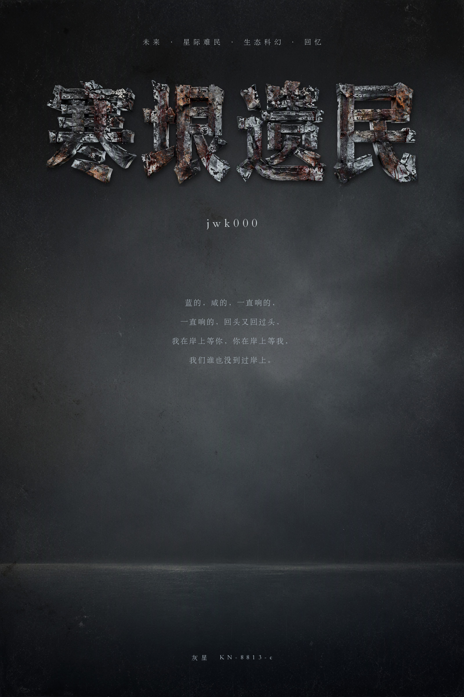
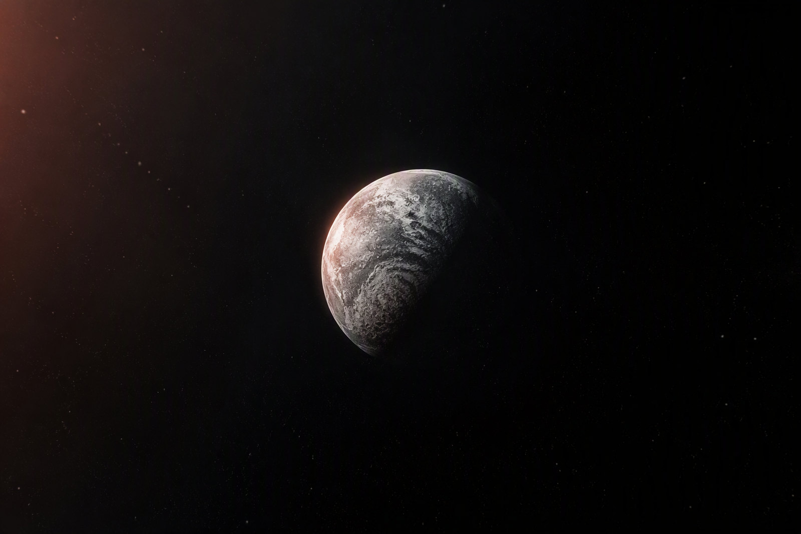
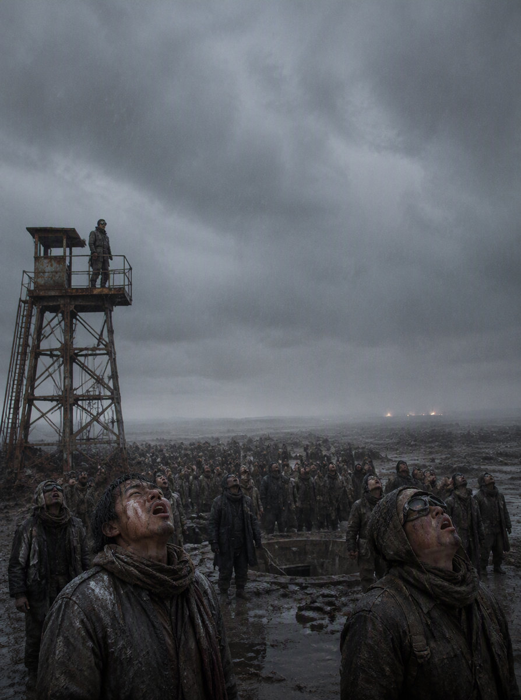
按灰星的历法，今天是第七个月的第一个日头。
我在三号哨塔上，看见北边地平线上浮起一层白雾。不是雪，也不是沙，是水汽。这颗星球憋了十九个月，今天开始吐气。
哨塔的铁梯被我踩得响。我把手从手套里抽出来，按在栏杆上。铁是凉的，但不像上个月那样咬人。上个月手贴上去，会连皮一起撕下来。
"来了。"我说。
塔下没人应。我又说了一遍："来了。"
老李才从塔底探出头，眯着眼看了很久，说："看见了。"
然后他去敲钟。
那口钟是从坟场里拆下来的半个船壳，吊在木架上，敲起来发闷，像有人在地底下咳嗽。钟一响，整座地窖就活了。几百个人同时从窖口爬出来，扶着梯子，被光刺得睁不开眼。灰星的光很弱，可在底下待满十九个月的人还是受不了。
他们站在空地上，仰着脸。
第一滴雨落下来的时候没有人动。第二滴，第三滴。到第四滴的时候，有个女人先哭了，一边哭一边把嘴张开去接。然后所有人都开始喝。不是用手接，是把脸仰起来用嘴接。几百个人站在同一块空地上，仰着头，张着嘴。
我站在哨塔上看着。我每年都看着。
那场面不像节日，也不像葬礼。一年里有三十天，人可以不必像铁一样活着。
钉子从塔下走过，仰头看我。他左眼上那块黑布被雨打湿了，贴在脸上。
他说："下来干活。"
我说："雨刚开始下。"
他说："雨只下三十天。"
那年我二十二岁，灰兵第三军团第七水源守备营工兵班。
军装是发的，穿烂了再换，换来的还是那一身。左胸有一块铁牌，刻着编号：七营工兵·沈砾·一一四七。
头盔是自己配的。我们班十三个人，十三顶头盔，一顶和另一顶都不一样，都是从坟场里捡回来的，或者从死人头上摘下来的。我那顶原先属于一个我永远不会知道名字的人。内壁上有一道别人刻的划痕，我把它磨平了，刻上了自己的东西。
我刻了一个字。很小，藏在颏带底下，别人看不见。
渠是三个月前开始挖的。冻土硬得像铸铁，一镐下去一个白点。我们一整个寒季只做这一件事：在聚居地北侧挖一条两公里的引水渠，把雨水从低洼地引到三个蓄水池里。
修渠比打仗死人少。这是钉子说的。
他有一条规矩：干活的时候不许抬头看天。他说看天的人，眼睛会先冻坏。
雨下到第三天，地里开始冒绿。
我第一次见到那种绿，以为是眼睛坏了。绒苔从冻土缝里挤出来，一小撮一小撮，贴着地面，颜色是一种很不讲理的、又亮又嫩的绿。矮麦的芽也跟着钻，顶开土，像一根根细针。三天前这里还是白铁色的一片。
我蹲下去，伸手摸了摸。
是软的。
我在灰星活了二十二年，摸过铁、冰、血、死人。没摸过软的、会长大的东西。
"别摸。"钉子说，"长不快。"
"它能长多快？"
"三十天。"他说，"长出来，开花，结籽，然后死。"
我把手收回来，站直了。
"跟人一样。"他说。
那天晚上，灰雀坐在蓄水池边上唱歌。
灰雀那年十六岁，班里最小，个子也最小。他有一副好嗓子。在灰星这种地方，好嗓子是没用的东西，像一件多出来的衣服。
他唱的那首歌，没人知道是从哪儿来的，词也怪，谁也听不懂。
他唱：
蓝的，咸的，一直响的，
一直响的，回头又回过头，
我在岸上等你，你在岸上等我，
我们谁也没到过岸上。
言坐在他旁边擦枪。她听了半天，问："蓝是什么？"
灰雀说："不知道。"
"咸是什么？"
"不知道。"
"那你唱它干什么。"
灰雀想了想，说："我娘教的。她说她也是她娘教的。"
言没再说话，把枪机推回去，"嗒"的一声。
我在旁边听着。我没有告诉他们，我大概知道蓝是什么。
因为我做梦。
我做的梦，别人不做。或者说，别人也做，只是不承认。梦在这里是奢侈品，甚至是一种病。军医有本旧书，书上写着：长期营养不良与缺氧，可致幻视幻听，建议减员。
所以我从来不跟人说。
我梦见的是这样一个地方：
天是浅的，像被水洗过。有大片大片立着的东西，比我见过的任何铁刺灌都高，比哨塔还高。风一过，它们就整片地动，像水，但是绿的。脚下踩的是软的、活的东西，不是沙，也不是冰。前面有一种极大的、一直在响的东西，是蓝的，蓝得不像话。它一遍一遍回过头来，又回过头来。
梦里的空气有味道。不是水腥味，不是铁锈味，不是血味，是潮的、发咸的，最后还有点甜。每次我快要想清楚那到底是什么的时候，就醒了。
我在头盔里刻的那个字，就是一个字：
海。
我不认识这个字。我是从军里发的旧识字本上抄来的。那本册子缺了小半本，这一页上别的字都被水泡烂了，只有这一个还清楚。旁边配着一幅图，也烂得只剩一角，那一角上全是蓝的。
我不知道那是什么。我只知道，我一看见它就觉得冷。
聚居地在地下。
上面也有东西：哨塔、水渠、蓄水池、几堵挡风的墙、一口钟。那些是白天用的。人住在底下。底下是窖，一层一层，像树根。
我们那一层是兵营，四十几个人睡在通铺上，头挨着头，脚挨着脚。这样睡是因为暖，人一挨着，热气就散不掉。最上面那一层是水头的。最下面那一层是死人房。
灰星上死了人不能埋，天太冷，土挖不动。先放在最下面那一层，等开春一起烧。
我们那一层能听见最下面那一层。听不见声音。底下没人出声，可你知道他们在。
窖里有一盏灯，二十四小时不灭。
灯灭了，就意味着水断了。
太阳不管你在干什么，它都那么亮，或者那么不亮。灯不一样。灯是人点的。
谁点的灯，谁就是管事的人。
我第一次下到最下面那一层，是当兵的第一年。
那年冬天死了十一个人。我们要把他们抬下去。抬的时候要小心，冻硬的人是脆的，磕一下会断。
我抬的是最轻的一个，是个八十多岁的老太太。她轻得像一捆干草。
抬到最下面那一层，我把她放下。
那一层里已经有很多人了。他们靠着墙坐着，一排一排。灯很暗，看不太清脸。
我只记得一件事：那一层一点都不冷。
雨还在下。三十天里，我们要种完矮麦，修完渠，把三个蓄水池灌满，把所有人的皮衣拆开重新絮一遍绒毛，把水头的账本从头到尾核一遍。三十天之后就是闭月。
钉子坐在蓄水池边上，把靴子脱下来，倒出里面的水。他的脚上全是黑紫色的冻疮，一层压一层，像树皮。
他说："砾子。"
"嗯。"
"三十天之后会死人。"
我说："哪年不死人。"
"今年不一样。"他把靴子翻过来，看着那个磨穿的洞，"今年北坳没来抢水。"
我没说话。
在这颗星球上，一个敌人不来抢你的水，只有一种解释：他要抢的东西，比水大。
那天夜里，雨声盖住了一切。所以我没能听见北边山脊上传来的那三声炮响。
等到第二天早上我上去换岗，才看见三号哨塔的塔尖上插着一面旗。
是北坳的。
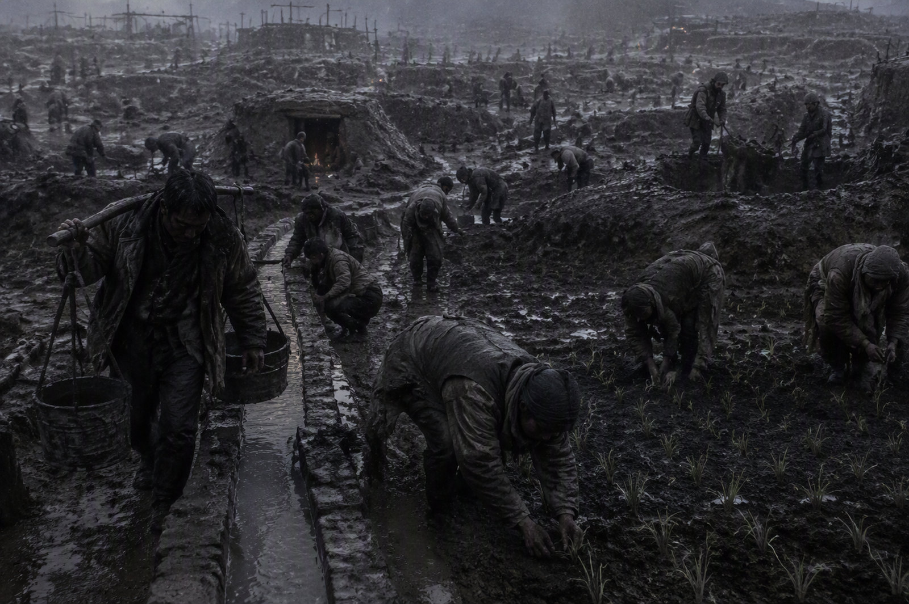
那面旗是黑底，上面一道红的竖线，像一道被划开的血。
钉子爬上去看了很久，下来的时候脸是白的。他说："收水。"
北坳的话很短：闭月之后，他们要来收水。
"收"这个字难听。抢是两个人拼命，收是上面的人对下面的人做的。
水头在广场上骂了半个钟头，骂完就回地窖了。他没说要打，也没说不打。在灰星，一个水头只要还坐着，就算赢。
我们照旧去修渠。雨季只有三十天，这三十天里，谁都得先看天。
雨季的第四天，水头开市。
市在东蓄水池旁边的夯土台子上。没有棚子，没有摊子。人人都站着，怀里抱着要换的东西，脚边放一小桶水。
在灰星，什么都能换成水。
一顶旧皮帽，半升。一副还能用的护膝，一升。一支打得响的枪，十二升，够一个人活十二天。
如果一个人什么都没有，他可以卖力气。挖渠、背石、抬尸体，一天三百毫升。
三百毫升，一口多一点。
我第一年当兵的时候不懂，问钉子：干一天活，怎么会连一升都不值？
钉子说："因为干活的人多。"
"那……"
"别问。"他说，"兵问这些，容易死。"
量水用的是水头的斗。一只铜斗，斗口磨得发亮，底下有一道谁也说不清的凹槽。北坳的人说那道凹槽每次能藏两毫升。为这两毫升，前年打死过七个人。
那天我在市上换了一小块盐。盐在我们这儿比水贵。
换盐的老太太认出了我的头盔。她盯着那顶头盔看了很久，然后把手上的东西塞给我，说："不要水了。"
我说："为什么？"
她说："这顶盔是我男人的。"
我把盐还给她。她不要。
后来我把那一小块盐掰了一半，放在她脚边那个空桶里，走了。
灰星上最要紧的东西，是东蓄水池墙上的一张纸。
水头每十天换一次。上面写着：全聚居地还剩多少人，每人每天多少毫升。
雨季的时候，那张纸上的数字最好看，因为雨季有水。雨季之后，它换得快。
我见过它变过很多次。它从来不是往上变。
有一年上面写六百。第二年写五百五。第三年写五百。
五百毫升，是一个人一天喝的、煮的、擦伤的、洗伤口加起来的总数。
配额用完了还想喝，可以去市上买。一升，一天的工钱。
没有工钱，可以找水头借。借一升，还两升。
我认得一个人，借了三年。最后他脖子上挂的那块牌子，被人拿走了。
那牌子上刻着他娘的名字。
雨季是灰星上唯一允许人洗身子的三十天。
平时洗澡是一种罪。水要用来喝、用来煮麦、用来给伤兵擦身。谁要是敢把水往身上浇，会被打完再挂起来。
所以一到雨季，所有人都到露天里洗。
洗的时候背对着背。老人先洗，然后是女人，然后是男人，然后是兵。规矩很清楚。人这一辈子除了冷什么都没有，能洗上澡的三十天，谁也不想浪费在害羞上。
我洗的时候，看见旁边一个老头，站在雨里一动不动，头低着。我以为他死了。
后来他抬起头，脸上全是水，说了一句话。我没听清，好像是在叫人名。
言站在我旁边，也在洗。她把自己那件内衬脱下来，反复地搓。那件内衬的夹层里有东西，隔着湿布，能看出长方形的轮廓。
我问她："那是什么？"
她说："跟你没关系。"
我说："我就是问问。"
她说："我从坟场里捡的。"
她把内衬拧干，抖开，把那个东西卷在里面，重新穿上，走了。
在灰星，从坟场里捡东西是重罪。军法里写得很清楚：私藏遗物者，断手。
我一个字都没说。
雨季过半的时候，我开始失眠。
不是我一个人失眠，整个聚居地都在失眠。雨季一到，人就活得太像人了。到了夜里，人就想些不该想的事，想明年，想女人，想那些没赶上种下去的种子，想得睡不着。
军医的棚子门口排了长队。军医姓胡，六十多岁，一只手是假的，铁做的。他给每个人发一小撮磨碎的绒苔干粉，说是安神。
轮到我的时候，他看了我一眼，又看了我一眼。
他说："你眼睛不对。"
我说："哪不对。"
他把灯端过来，照我的瞳孔。
"你做梦。"他说。
我没说话。
他把灯放下，从柜子里翻出一本册子。册子被水泡过，边角卷着。他翻到某一页，指着上面给我看：
*长期营养不良与缺氧，可致幻视幻听。感染者建议减员。*
我说："我没做梦。"
他看着我，看了很久，然后把册子合上，塞回柜子。
"没做梦就好。"
我走出棚子的时候，他在后面说了一句：
"我年轻的时候，也做梦。"
我停住了。
"梦见什么？"我问。
他把假手举起来，掰了掰手指，铁的声音很脆。
"见过一个很大很大的东西，"他说，"是蓝的。"
雨季的第二十六天，矮麦开始灌浆。
麦子长到最后，穗里那些原本空的地方，一点一点被填满。人站在地里，能听见风过麦子的声音，细得像有人在耳边说话。
钉子站在地头看了很久。我走过去，他把手搭在我肩上。
"砾子，"他说，"你看，这是这颗星球一年到头，唯一一件能让人相信明天的事。"
"那明年也有。"我说。
他摇头。
"我不是说明年。"他说，"我是说，就这三十天。三十天里我们像人，剩下三百三十天我们像什么，你也知道。"
他顿了顿。
"我活了三十五年，一共见过三十五个雨季。前二十年我在打人，后十五年我在被人打。我就没在这块地上，站满过一次雨季。"
"这次呢。"我问。
"这次……"他看着麦子，"这次我想站一次。"
那天夜里，灰雀爬到我旁边的干草堆上。他睡不着，翻来覆去，然后小声说："砾哥。"
"嗯。"
"你做过梦吗？"
我停了一拍。雨声很大，盖着整个聚居地，盖着地窖、哨塔、麦田和死人。在这样的夜里说什么都行，没人会听见。
"没有。"我说。
灰雀"哦"了一声。
过了一会儿，他又说："我做过。"
我没接。
"我梦见我在一个地方，"他说，"那个地方不用穿皮衣。"
我把脸别向黑暗的一边。
雨季的第二十九天，天上开始下小粒的冰。
那是闭月的前哨。
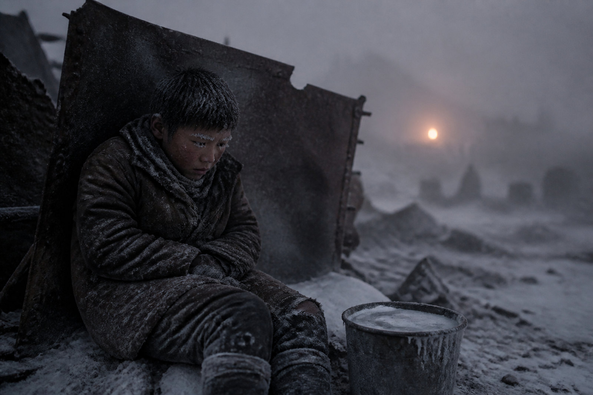
第三十天，雨停了。
不是渐渐停的。像有人在外面把水龙头一关，一下就没了。前一刻还在下，下一刻就没了。天上那层积了三十天的云，从中间裂开一条缝，缝里露出一种很脏的暗红的光。
整个聚居地安静下来，所有人都在抬头看天。
在灰星，一年只有两次所有人一起抬头看天。一次是雨季的第一滴雨，一次是雨季的最后一滴水。
钉子喊："回窖！"
没有人动。
他掏出枪，朝地上打了一发。
人才开始动。抱着孩子，扛着袋，拽着老人，往地窖口挤。挤的时候有人摔了，后面的人从他身上踩过去。在闭月，没有人会停下来扶人，停下来的人自己也会死。
我站在哨塔底下，看着最后一批人进窖，然后抬头看了一眼麦田。
麦子站着，穗子已经鼓起来了。再过十天就能收。它不知道接下来会发生什么。
闭月是按顺序来的。
先起风。风从北边来，从冰原那边来，穿过山谷，进盆地。风是干的，嗓子一进这种风就开始疼。
然后温度往下掉。第一小时才降了五度。那时候我们还在窖里说话，老兵说闭月嘛年年如此，新兵在笑，说今年不算冷。
第二小时掉得更快，有人开始把皮衣领子立起来。
第三小时，窖壁上的白霜开始往下长。它长得不快，但一直在长，像往上爬的草。
第四小时，门口那桶水结了冰。
第五小时，桶裂了。
水结冰会胀，这是我们从小就知道的事。冬天不把水桶倒空，桶就废了。也是因为这个，蓄水池要留一道口子，不留，池子就会从里往外炸开。
管理那几个池子的是我同班的老陈。那天他在池边守了四个钟头，第六个小时回来，眉毛上全是白的，进门就跪在地上。他说了一句："裂了。"
水头问："哪一口？"
他说："三口全裂了。"
三口全裂，意思是这一年我们要靠池子底下那些碎冰过活。碎冰沾着土，化出来的水是浑的。
水头没说话。他转过身，进了他的窖。
我一直坐在窖口。
哨位上得有人。闭月期间不能断哨，万一有人趁这个时节摸进来。
我裹了三层皮衣，戴了两层手套，坐在那块垫着苔毡的石头上。
冷不是从外面进来的，是从里面长出来的。你先觉得脚趾疼，然后是膝盖，然后是大腿根，然后是胃。到胃的时候你会开始抖。抖是好事，抖说明身体还在打。
不抖了就坏了。那一刻有一种很奇怪的舒服，你会想睡。
我听见窖里面有人叫我的名字。我没有回头。
我站起来，绕着哨位走了两圈。走的时候我数数，数到一百，换一个方向，接着数。
那一夜我数到七千多。
闭月那四十个小时，全聚居地的人都下来，一层一层，人挨着人，铺着皮衣和干草。
没有人说话。不是不想说，是说话要张嘴，张嘴会冷。
我旁边躺着一个小孩，四五岁。他娘把他夹在中间，两个人像一把折起来的刀。
小孩开始哭。他娘不哄他，只是把他往怀里按，按得很紧，一直到他不哭了。
按着按着，人就不哭了。哭出来的那口气，会在脸上结成冰。
半夜的时候，有人在窖的另一头开始数数。一开始是一个，后来是两个，后来是很多。
他们数的不是人，是日子。从今天数到下一个雨季，还有多少天。
几百个人在黑里一个一个地报数，报得很整齐。
我跟着数到一千多，睡着了。
醒来的时候，那对母子还躺着。小孩的脸是暖的，他没有再哭。
我们那条窖住了三百四十七个人。
闭月过了，我们数了一遍。
三百四十七。
一个都没少。
那年是好的。
闭月来得快，走得也快。
大概四十小时之后，风停了，天亮了。
我从哨位上下来的时候，脚已经不是我的了。我把靴子脱了，用雪搓，搓了很久，脚才回来。
窖里的人开始一个一个往外走。
我们从地窖里出来，先看到的不是天，是麦田。
麦田是黑的。
三十天，一株一株长起来，鼓好穗子的麦子，全黑了，全都弯着，像一批被就地烧过的人。
钉子蹲在地头，捏了一穗。一捏，碎的。
他把手在裤子上擦了擦，站起来，说："今年收不了。"
我说："晚了四天。"
"嗯。"他说，"晚了四天。"
三十天，我们是掐着日子种下去的。每年至少留出五天富余，因为从下雨到最后一天，天总要给点情面。
今年没有给。
那天早上，死了十四个人。
八个是把水桶放在自己身边睡的老人，桶裂开的时候水渗进皮衣，人就冻在里面了。
三个是夜里出去找东西的。
两个是在窖里没醒过来的。睡着睡着就冷了。
还有一个，是那个给我盐的老太太。
她死在自己家的窖口，头朝外，一只手伸在外面，指头是张开的。她大概是想出来看看雨停没停。
我把她那只手摆好，放回她的袖子里。
她的手很轻。人冻过之后，会变得很轻。
灰雀出事是在第二天。
那天我们在地里抢收。收不下来的也要收，黑的麦子能喂地下那几种东西。
灰雀背着一捆麦秆走在坡上。他右手的手套掉了。他没说，大概觉得捡起来会耽误工夫。
他背着那捆麦秆走了一百多米，到了坡下。
我是在他把手套往手上戴的时候看见的。
他的右手有三根指头，是白的。
不是普通的白，是那种蜡一样透亮的白。指甲像一片薄冰。
我说："你的手。"
他看了一眼，说："没事。"
他说完就笑了，说："砾哥，你看，它不疼。"
不疼就是坏透了。
我背着他跑了两公里。
胡军医给他看的时候什么也没说，只是把灯端过来照那三根指头，照了很久。
然后他从柜子里拿出一把钳子，放在火上烧。
"小雀。"他说，"你听我说。"
灰雀说："我不听。"
"你要听。"
"我不听！"
胡军医把他的手按在台子上。我按住他的肩膀。他一直看着我，一直看着。
那天的叫声，整个聚居地都听见了。
胡军医留下了他一截小指。另外两根保不住了。
夜里，灰雀醒了。
他躺在铺上，右手缠着布，布是红的。他看见我，笑了一下。
他说："砾哥。"
"嗯。"
"我以后还能唱歌吗。"
我说："能。"
他说："那没事。"
他把头转过去，看窖顶。
过了一会儿，他又说：
"砾哥，你说，为什么别的地方也会这么冷吗？"
我没有回答他。
他等了一会儿，睡着了。
我坐在那儿，想起我梦见的地方。
那个地方不冷。
闭月之后的第七天，北坳的人出现在北边的山脊上。
他们不冲锋，也不开枪。他们就是站着。
一排，大概两百人，站在山脊上，一动不动，看着我们的聚居地。
钉子把望远镜放下来。
他说："他们在等。"
我说："等什么？"
他说："等我们死得差不多了，再下来收水。"
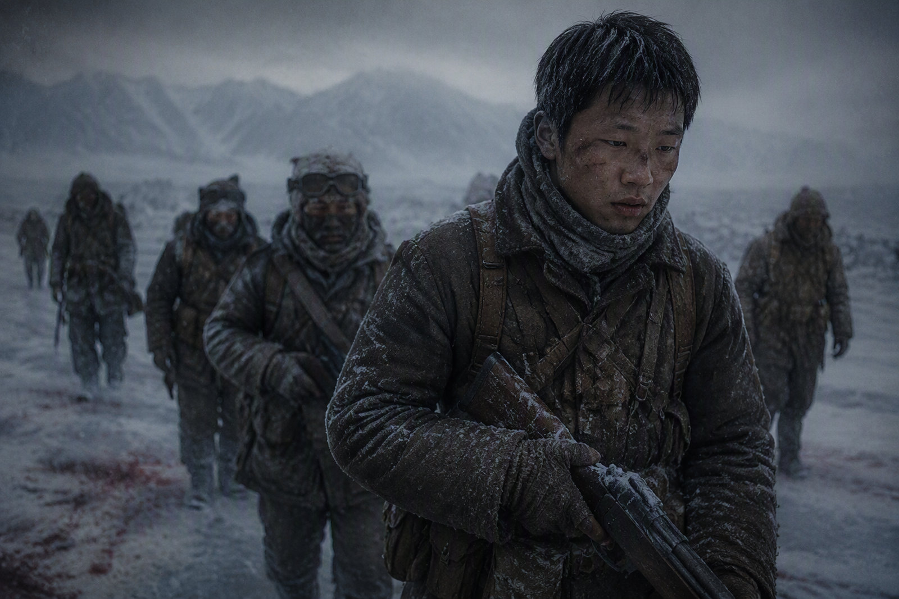
守备营的编制是：营长一人，副营长一人，三个连，一个工兵班。
营长姓周，五十岁，脸上有一道从颧骨裂到下巴的旧伤。他说话很少。他有一句话传遍了全营：
*水是我们的。人是耗材。*
这话写在营部的墙上，用炭写的，写了三遍，一遍比一遍深。
我们工兵班十三个人，实际在编十一个，缺两个。一个是去年冬天没熬过去的，一个是雨季前被打死的。补员的名单压在水头的桌上，一直没批下来。
因为补一个人，要多分一份水。
班长赵钉，外号钉子，三十五岁，独眼，左眼是十五年前被一块弹片带走的。副班长老陈，管蓄水池那个，四十一岁。言素，狙击手，二十四岁。灰雀，十六岁，全班的儿子。还有老马、黑七、二顺、小周、老孙、秃子、我。
十一个人，十一顶不一样的头盔。
寒季里的日子是这样：每天三班哨，每班四小时。剩下的时间，用来修工事、拾柴、找水、埋人。
地下点灯。灯不是电，是苔藓——把绒苔晒干，混上穴獾的油，装进一个铁盒里点着。这种灯很暗，点起来有一股腥味。人在地窖里待久了，瞳孔会变大，怕光。
我们用这种灯看账本、缝皮衣、磨刀、给死人写下名字。
寒季最要紧的事，是找肉。
灰星陆面上没有动物，所有的肉都在地下。
穴獾是一种长着短腿的东西，身子圆，眼睛退化了，靠鼻子和震动活。它钻在冻土层底下，打很深的洞，吃绒苔的根。
猎穴獾的办法是找洞，然后在洞口坐着等。有时候等一天，有时候等三天。等它出来换气的时候，一枪。
一只穴獾能出六斤肉，那是我们全班三天里唯一能吃到的东西。
我第一次猎到穴獾，是当兵第二年。我把肉背回来的时候，全班都站起来看我。
那天晚上老马把肉炖了，放了一点盐，一点铁刺灌的皮。
我们十一个人围着那口锅，没有人先动。所有人都在等钉子。
钉子拿起勺子，舀了半勺，先给了灰雀。
然后才轮到我们。
那一锅肉我到现在还能想起来是什么味道。
我们跟北坳的仇，是从水来的。
聚居地底下有一条暗河。河从北边的山地流过来，在我们脚下分成两股，一股从我们这儿走，一股往东。
谁在上游打一口井，谁就掐住下游的喉咙。
半年前，北坳在上游打了一口井。
他们打那口井用了两个月。井打下去之后，我们这儿的水平均每天少了两百升。
两百升，是四百个人一天的量。
水头派人去谈。派去的人回来了半个——另一个被留在北坳，挂在井架上，挂了十九天，冻成一根棍。
从那天起我们就知道，这一仗一定要打。
只是不知道什么时候。
我当了三年兵，才弄明白北坳是什么。
北坳不是一个地名，是北边的三口井。
八百年前，第一批船落下来的时候，人分了三处住。我们这一处住南边，他们那一处住北边。
八百年里，南边和北边各自打自己的仗，死自己的人，也各自把对方变成了一个名字。
在我们这儿，北坳的意思是山脊那边的东西。在他们那儿，我们的意思大概也一样。
我见过一次北坳的女人。
那是雨季的第三年，两边停了一个月的火，因为雨季。雨季打不起来，也没人想打。地里的东西要收，水要存，人要活。
北坳来了七八个人，从南边的堤上过来。他们没带枪，是来换盐的。
我们的水头让他们进来了。
那天我在堤上站着，看见一个北坳的女人。她背着一个筐，筐里是铁刺灌的干货。她的脸跟我们这儿的人一样，冻得发紫，眼睛很黑。
她跟我们这儿的人换了一个钟头的东西。走的时候，她把筐里剩下的一小把干刺，塞给我们岗上的一个小孩。
那小孩愣住了。
她说了一句话。北坳的话跟我们的话差不太多，我听懂了。
她说："拿着。你也是冰上的人。"
那天晚上，钉子跟我说了一句话。
他说："砾子，你记住这个。"
我说："记住什么。"
他说："记住他们家的人，也会给小孩塞东西。"
我说："那为什么还要打。"
他说："因为他们家的井，跟我们家不是一口。"
他说："一口井能活四百个人。两口井中间那点水，活不了八百个。"
他说："所以他们家的孩子长大，我们家的孩子就得死。"
他说："这不是仇。这是算术。"
我后来一直记得这个词。
算术。
在灰星上，很多事情都是算术。
十一月十七日，我们遇到了第一支北坳的侦察队。
那天我跟着钉子、言、老马出去巡逻。巡逻的路是固定的：从北门出去，沿冰脊走四公里，到大裂口，再回来。
走到大裂口的时候，言突然停下。
她是狙击手，眼睛是有名的。她说："雪上有印。"
我们蹲下来看。
雪上确实有印。是脚印，四双，往南。而且是新的，新到脚印的边上还没被风磨圆。
"四个人。"钉子说，"过去了大概一个钟头。"
老马说："撤吧。"
钉子没说话。他看着那些脚印看了很久。
然后他说："言，上高。砾子，跟我。老马，后边压着。"
他们在大裂口底下。
四个人，围着一个小火堆。在寒季，敢在外面生火，说明他们走得很远，冻得快死了。
我们趴在大裂口上沿，能听见他们说话。听不清说什么，但能听出他们说话的时候在笑。
钉子把枪端起来。
然后他把枪放下了。
他说："砾子，你去。"
我说："什么？"
"你去。"他说，"从左边绕下去，二十米。别开枪，用锹。"
我说："为什么我。"
他说："因为你是这个班里唯一还没杀过人的。"
我说："那你——"
"你听我的。"他说，"这四个人必须死。他们回去，后面就是一个连。你要是不敢，现在说，我换人。"
雪很硬。
我从左边绕下去的时候，脚踩在雪上，声音像有人在嚼骨头。
我手里提着工兵锹。
我在灰星活了二十二年，杀过穴獾，杀过盲鳗，杀过一只跑到聚居地来找食的石肺。我没杀过人。
最靠近我的那个北坳兵背对着我。他的皮帽子上有一道补丁，补丁是用另一种颜色的皮缝的，缝得很整齐。
我举起了锹。
后来的事，我记得是碎的。
我记得血。在零下五十度里，血不是红的，是紫的。血从人身上出来，冒一下白气，落地就成了珠子，滚两下，停下来。
我记得我坐在雪地上，手抖得厉害。不是冷，是抖。
钉子走过来，把一只手套按在我手上。
他说："抖完就好了。"
"要是抖不完呢。"我问。
他蹲下来，看着我。他那只独眼在雪地里看上去很黑。
"抖不完的，"他说，"都死了。"
那天回去的路上，我一直在想那个补丁。
一块补丁，是用另一种颜色的皮缝的，缝得那么整齐。
缝那块补丁的人，跟缝我们班的衣服的人，手艺是一样的。
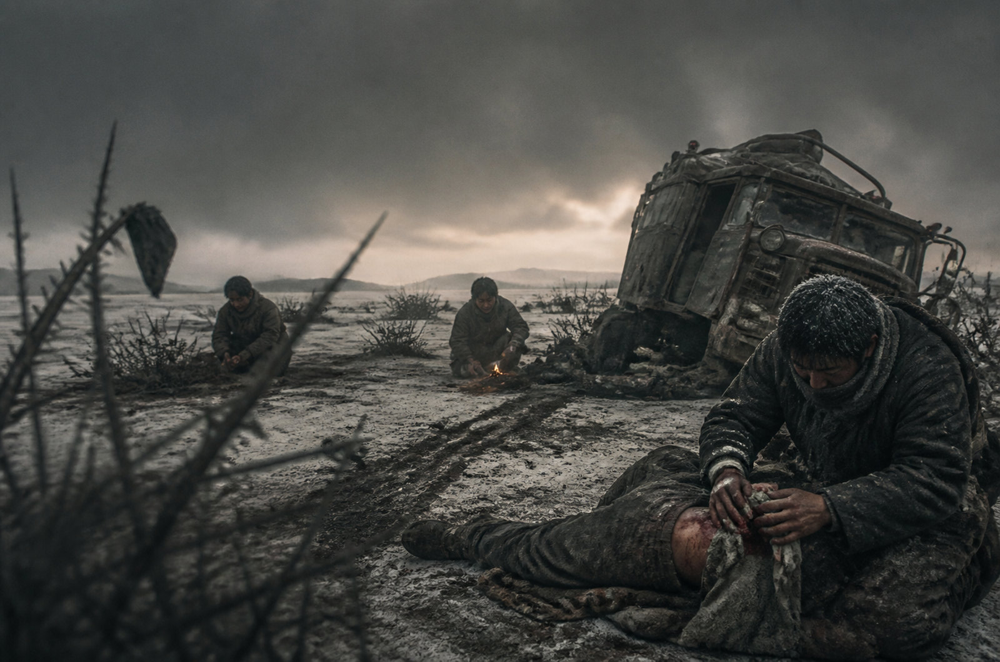
灰星上没有树。
能烧的东西只有一种——铁刺灌。
它是灰星上最不客气的一种植物。长在盐漠边上，高一米，杆子硬，浑身是刺，刺是黑的，扎进皮肉里会断。它活着的时候烧不着，得先晒干，晒到刺发白，才能当柴。
一车晒干的铁刺灌，够聚居地烧六天。
六天，是煮麦子、融冰、给伤兵消毒、给死人火化的量。
十一月二十九日，管后勤的老冯来找营长。他在营部门口站了很久，才进去。
出来的时候，钉子把烟头摁灭了。
他说："盐漠那车柴，卡住了。"
我问："卡在哪儿？"
"沙里。"他说，"车轴陷了。上面不肯派人，说人不够。"
"那我们——"
"我们明天去。"
我说："五个人拉一车柴，来回四十公里。"
钉子看我一眼。
"砾子，"他说，"我不去，就要死人。柴烧完了，第一个冻死的，是医务棚里的伤兵。"
第二天出发的，是五个人：钉子、言、老马、灰雀，还有我。
灰雀的右手少了三根指头这件事，谁也没提。他被派去，是因为他欠着班里的。
在灰星，欠着班里的，就得干活还。
我们走的时候天还没亮，地是硬的，踩上去发出一种空的、像敲陶罐的声音。
走到盐漠边缘的时候，太阳出来了。
那是我这辈子见过的最好看的一次日出。灰星的光弱，日出的颜色也淡，淡得像旧布上洗不掉的黄。盐在那种光底下是灰白的，中间藏着一点粉。远远看过去，整片盐漠像结了霜的湖。
我看了一眼。
钉子说："别抬头。"
我低下头。
他说的对。那天的风从盐漠里吹过来，眼睛一遇风就疼。我后来又抬头看了一眼，左眼疼了三天，看什么都发白。
车在盐漠的第三堆刺丛后面。
它确实是卡住了。车轴陷进盐壳，上面已经冻死一层。
我们花了两个钟头，用锹把盐壳砸开，用杠子把车轴撬出来。
老马在卸刺丛的时候，扎破了手。他骂了一声，把手在裤子上擦了擦，接着干。
铁刺灌的刺是有毒的。不大，但是慢。人扎了之后先是没感觉，半个钟头之后那一片地方会开始发热，然后肿。
我们没带药。
钉子看了一眼他的手，说："回去再说。"
他们把车拉出来的时候，是下午两点。
风停了。
风一停，我反而害怕。在野外，风停下只有两种可能：要么是天气在变，要么是有人在等。
我说："钉子。"
他没回头。
他说："我知道。"
第一枪打在车辕上。
第二枪打穿了老马的脖子。
老马是往前扑的，扑在那堆刺丛上。他的血冒出来的时候，我看见的是白的。零下六十度，血先冒气，气冻成霜，霜落在他自己背上。
我们扑到车后面。
言在他们开第三枪之前就开了枪。她的枪声跟别人的不一样，闷，短，像有人按了一下什么东西。她打了一枪，对面就没声了。
"两个。"她说，"树的右边还有一个。"
她说"树"。
盐漠上没有树。
她说的是那堆刺丛，刺丛顶上有根断杆，立着，像一棵矮树。
我们后来都这么叫它。
枪战打了二十分钟。
对面人多，从四个方向压过来。我们只有三个人能打，灰雀的右手握不住枪。
战斗的事，我不想细说。
我只说一件：
钉子的大腿被打穿了。
子弹是从侧面进来的，从前面出去的，出去的时候带下来一块肉。那块肉落在车板上，我伸手去捡，捡起来是硬的。
我把它塞回他的裤腿里。
钉子看着我。
他说："砾子，拿柴。"
我说："你——"
"拿柴。"他说，"柴比人贵，你知道。"
我们最后拉回去了那车柴。
二十公里，八个小时。雪地上，一个人在前面拉，一个人在后面推，两个人抬着钉子。
灰雀用他那只剩两根指头的手，拉了一半的路。
他拉着车的时候一直在哭。不是大声哭，是那种咬着牙、鼻子里往外冒气的哭。
我走在车后面推着，脑子里是空的。
走到半路的时候，我听见钉子在我肩膀上说话。他流了很多血，人已经不太清醒。
他说："砾子。"
"嗯。"
"我死了之后，你们把我烧了。"
我说："你别说了。"
"烧了压成牌，"他说，"别埋。埋了，冻着，人不好受。"
我说："钉子，你别说了。"
他说："我左眼那块铁片，你拿着。"
老马是当场就死了。
我们没能把他带回来。他身上的血在半个钟头里就冻住了，人比原来重了三十斤。我们四个人，加上一车柴，加上一个重伤的人，带不动他。
钉子下令，把他放在那堆刺丛顶上。
那里是最高处，风大，不会有穴獾。
我们给他盖上他的皮衣。灰雀把他的手摆好。
我们走的时候，我回头看了一眼。
老马躺在那堆刺丛上，黑色的刺把他围在中间。在灰白的盐漠上，那就是一个很小的、很黑的东西。
老马是我们班年纪最大的，四十七。
他姓马，没人叫他别的。他是"遗落者"那一批的孙子——他爷爷是第三批船上活下来的人，会写字，会算数。老马自己不认字。
他有一手别人没有的本事：他能听出冰的厚薄。
人在冰上走，脚底下会响。响声有三种：实的、空的、哑的。老马说，实的是好冰，空的是下面有水，哑的是下面有气。
为了这个本事，他活到了四十七。
我们过冰河，从来都让他走在前面。
他走在前面，从来不回头。他会把手举起来，用指头说：跟。停。
老马有一件事，全班都知道。
他有一个儿子。
那个孩子生在雨季，死在闭月，活了二十七天。
灰星上活不过第一个闭月的孩子很多。死了就死了，不给牌子，铁要拿去修炮。
老马自己给他打了一块。
不是铁的，是一块骨头，穴獾的肩胛骨，磨成的。
他在上面刻了一个字。他不认字，那个字是他照着别人的字画下来的。
他画的是：马。
那块骨头他缝在帽子里面。他戴帽子的时候，谁也看不见。
我们没能把他带回来。
但他那块骨头，在他帽子里。
他躺在盐漠上，头上戴着那顶帽子。帽子里面有他的名字。
铭牌这种东西，是这么来的。
灰星的土地冻得像铁，挖不动坟。第一批人死的时候，不知道该怎么办，就把尸体堆在聚居地外面，用石头垒一圈。后来风一起，石头被吹跑了，尸体也被吹跑了。
第二年，他们开始烧。
烧完的骨灰没有地方放，就压成一块小牌，铜的，或者铁的，拇指那么大，上面刻名字和编号。
活人把它挂在脖子上，或者缝在衣服的夹层里。
一个人死了，就剩这么一小块铁。
老马没有铭牌。他躺在盐漠上，我们什么都没能带回来。
回到聚居地的第三天，钉子让铁匠打了一块。
上面刻了六个字：老马，编号不详。
因为没有人记得他的编号。他这人从来不跟人说自己的编号。他说，反正也没人念。
钉子那条腿没保住。
胡军医给他截肢的时候，他醒着。他自己要求的，他说他要看着。
截完了，他让人把他抬到营部门口，坐在那里看雪。
那天下午，营部的门开了。
周营长走出来，站在他面前。
钉子没有站起来。
周营长说："三湖。"
钉子说："什么时候。"
周营长说："十五天以后。三方都在往那边聚。谁先打下一号井，谁就是灰星的爷。"
钉子说："给我一把枪。"
周营长看了他一眼，又看了一眼那条空着的裤腿。
他说："给你一把枪。"
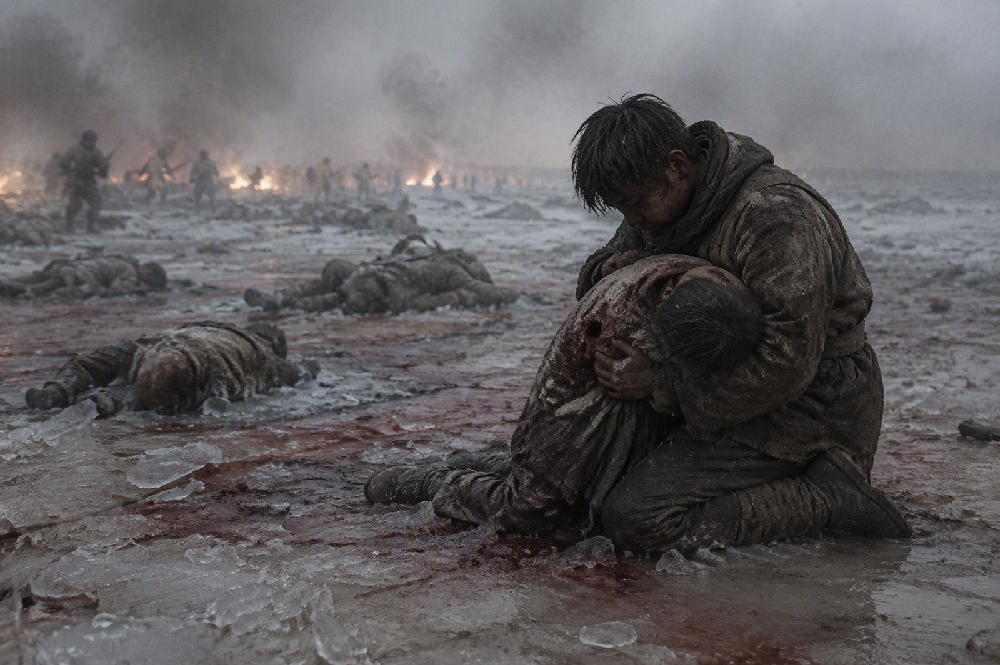
三湖在聚居地东北，六十公里。
它原本是三个连在一起的浅湖，后来干了两个，只剩中间一个。中间那个湖底下，是暗河的一个出口。
谁占了那儿，谁就能打井。
十二月的第十一天，我们四百八十个人出发去三湖。
北坳去了九百人。西边的白漠，一支八百人的流民武装，也去了。
三方一共两千两百人，为了一个直径不到八百米的干湖。
行军走了三天。
雪太深，车走不了。我们靠腿，背着枪、弹、锹、口粮、皮毡。每个人身上四十公斤。
第三天下午，我们到了三湖的南边，趴在一道低矮的丘脊后面。
湖在我们面前铺开。
那不是湖，是一片结了冰的、灰白的、开满了裂纹的平地。湖底的水早就冻透了，冻成一种青黑色，被雪盖住。风一起，雪在地下跑，像一层薄薄的烟。
钉子趴在我旁边。他只剩一条腿，是被人背上来的。他把望远镜叼在牙上，他没有手用。
他说："看见湖心那块黑的地方没有。"
我说："看见了。"
"那是暗河的出口。冰盖最薄。"
我说："那我们打过去？"
他说："不急。"
他吐掉望远镜，侧过头看我。
"砾子，"他说，"待会儿打起来，你记住一件事。"
"什么。"
"别往前冲。冲锋的人死得最快。"
我说："那你以前怎么冲的。"
他说："我傻。"
开打前的那个夜里，我在雪里趴了六个钟头。
我左边是三湖的冰，右边是钉子。他躺在一个雪槽里，那条断腿用皮毡包着。
天黑下来之后，能看见远处的火。
三堆火。
我们一堆，北坳一堆，东边一堆。
东边那堆是白漠。
白漠是什么，我们那时候都知道一点。
西边有一片白色的盐漠，比我们这边还大，还干。原来那边有几个聚居地，后来一个接一个塌了。
塌了的人没有地方去，就聚在一起。
他们不种地，他们抢。
他们抢过我们两次，抢过北坳三次。
他们跟我们不一样。我们是为了一口井，他们是为了活到明年。
他们的人比我们多，枪比我们多，水比我们少。
所以他们打仗的时候，冲得最狠。
钉子说过一句话：白漠的人不是不怕死。是他们的水，比他们的命短。
那天夜里，我问钉子：明天我们先打谁。
他说："谁先开枪，我们就打谁。"
我说："那要是他们两家先打起来呢。"
他说："那就最好。"
他停了停，说："砾子，你想想，一个湖，三家要。"
他说："三家里头，有两家是我们跟北坳。"
他说："我们和北坳，都在这儿住了八百年。我们知道对方的井在哪儿，知道对方的老人叫什么。"
他说："白漠不知道。"
他说："不知道的人，才会往最里面冲。"
那天夜里，最后一点火也灭了。
我在雪里数了一会儿星星。灰星的星星很亮，因为没有云，也没有灯。
我数着数着，听见东边有动静。
不是枪。是很多人一起走的声音。雪被踩了很多脚，那种声音很闷，像一面很大的鼓，从地底下往上敲。
战斗是白漠先开的枪。
那时候天还没亮。白漠的人从东边摸上来，被北坳的哨兵发现，两边先打起来。
周营长趴在丘后面，把拳头举起来。
他等了两分钟。
两分钟之后，他才把拳头砸下去。
我们从丘后面爬起来，往湖里冲。
接下来的三十个小时，我不打算一件一件地讲。
我只讲我记得的。
我记得声音。声音不是"砰砰砰"。声音是一整片，压在耳朵上，像有人把一块湿毛毡盖在你头上。你会听不见自己的脚步。
我记得冷。枪打了三十发，枪管就冻住，要用胸口去焐。
我记得血在冰上的样子。血一落在冰上，先是红的一小块，然后边缘开始发黑，最后整块变成深紫，像一朵花冻在玻璃里。
我记得有个人从我面前跑过去，跑着跑着，头就没了。他没有立刻倒，还往前跑了两步。
我记得言。她趴在湖西边的一道冰脊后面，一枪一枪地打。她打得很慢。我后来才知道，她那一天开了两百三十一枪。
我记得我自己的手。我把工兵锹插进冰里，蹲着，一直在换弹。我换弹的手很稳。我那时候不害怕，我后来才害怕。
打到第十九个小时，我们丢了东岸。
打到第二十四个小时，白漠垮了。他们往东跑，跑的时候北坳从侧面包过去，把他们的尾巴切掉了一段。
打到第二十七个小时，我们只剩下大约两百人还在湖上。
北坳还有四百。
周营长下令：守湖心。
我们退到湖心那块黑冰上。冰很薄，底下是暗河的水，黑得深不见底。人站在上面，能听见底下有很闷的流水声。
我们守在那儿，谁也没退。
灰雀是在第二十八个小时出的事。
他一直没有上前线。他右手只剩两根指头，握不住枪。他一直在后面抬伤员。
第二十八个小时，我趴在一块冰堆后面，压不下去。正面有三个人在打我们这一片，我动不了。
我听见有人在我背后喊。
然后一只手抓住了我的领子。
我被人拖了四米。
我这辈子被人拖过很多次。那一次是最快的。拖我的人个子不大，用的是左手，拖的时候人几乎是爬着的。
我们翻过冰堆，滚进雪槽里。
我翻身起来，才看见是灰雀。
他嘴里全是血。他在笑。
他说："砾哥，你欠我一次。"
我说："我欠你一次。"
然后他往前扑了一下。
我当时以为他是要往前挪。我伸手去扶他。
他的背上有一个洞。
我把灰雀背到湖西南的一个雪坑里。
那个雪坑是我能找到的最好的地方，背着风，有半人高的雪墙，敌人看不到。
我把我的皮衣脱下来，裹在他身上。我把他的头抬起来，放在我的膝盖上。
他的胸口一直在冒气。气会冒泡，泡里带血。
我按住那个洞。按了很久。我知道没有用。
他醒了一下。
他看着我。
他说："砾哥。"
我说："在。"
他说："歌……我不记得第三句了。"
我说："你别说话。"
他说："第三句是什么来着。"
我低下头去。
他唱过很多遍，我记得每一句。我就凑在他耳朵边上，把那首歌念给他听：
蓝的，咸的，一直响的，
一直响的，回头又回过头，
我在岸上等你，你在岸上等我，
我们谁也没到过岸上。
他听完，笑了。
他说："砾哥，你说，真的有那种地方吗。"
我在他耳朵边上说：
"有。"
我说："我梦见过。"
他说："什么样。"
我说："蓝的。跟歌里一样。"
他说："那我也算见过了。"
那天的最后两个钟头，我什么都没听见。
北坳在这一天的末尾也垮了。他们的水在那三十个小时里烧掉了太多，他们的伤兵在冰上冻死了一片。天快亮的时候，他们开始往回退。
我们没有追。
我们赢了三湖。
一号井是我们的了。
战后清点：我们四百八十个人，活下来一百四十七个。
白漠垮了，没剩下多少人。北坳退回北边，据说死了五百多。
水头的使者第三天到了，带来两车铁刺灌和一句口头嘉奖。
我们在三湖住了一个月，把井打下去。
第一股水从井底上来的时候是混的，里面带着泥。所有活着的兵都跪在井边，用嘴去接。
水是温的。
我在井边跪着，双膝陷在冰里。
我一边喝，一边想着一件事：
灰雀没有等到这一口水。
回到聚居地的第三个月，胡军医帮我把灰雀火化了。
烧了整整一天。
骨灰压成了两块牌。一块挂在聚居地的墙上，一块我留了下来。
那块牌是铁的，拇指那么大，边缘磨得很亮。上面的字很少：
灰雀 编号不详
那天夜里，我把内衬拆开了。
我在夹层里缝了一个小口袋。
我把那块牌放进去，缝上。
从那天起，我走路的时候，左边胸口的衣服里，会有一点点很轻的、很硬的动静。
那是我身上最重的东西。
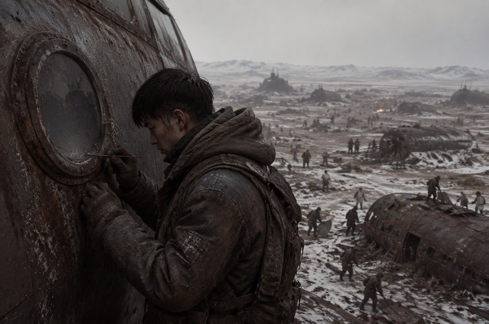
三湖之后，聚居地的账是这样的：人，不足七万；水，够喝到下一个雨季，不够煮麦；粮，够吃两个月；柴，够烧四十天。
副营长把账报上去的时候，用的是我们工兵班的算法——每一种东西都按最低标准算，也就是饿不死、冻不死的量。按这个量，我们只能活四十天。
水头把账本合上，说了一句话。
他说："去坟场。"
坟场在盐漠最深处，离聚居地一百四十公里。
八百年前，三批船落在了那儿。
第一批是流放船。第二批是逃亡船。第三批是最后到的那一批，我们管他们叫遗落者。
三批船，十七艘，全都摔了。
它们摔在方圆大约十公里的地方，摔成三片。后来这三片连成一个名字：
坟场。
在那之前，我只看过坟场的零件。
我那顶头盔是从坟场出来的。哨塔上那口钟也是。铁匠铺里一半的工具，全是。我们整个聚居地，是坐在坟场的碎块上活着的。
但我从来没有去过那里。
去坟场要走七天。军队里有个说法：去坟场的人回来，会变。
去的是一整个连，加上我们工兵班，加上十二辆车。
出发是三月。三月是寒季最难熬的月份，雨还没来，冰最厚，人最虚。
我们走了七天。
第八天早上，车队翻过最后一道丘。
我先看见的是影子。
天还没完全亮，盐漠上有一条很长的黑影，从地平线那头铺过来，一直铺到我们脚下。
那不是山。灰星上这个位置没有山。
车队又走了两个钟头，我们才看清。
那是船。
我这辈子没有见过那么大的东西。
巨大的、斜斜的、银灰色的东西。它们大部分埋在盐里，只露出一截。有几艘还保持着摔倒前的姿势，像被谁从天上按下来，按进地里。有几艘从中间断开，断口朝天。
最靠我们近的那一艘，船头翘着，朝东北。
它比我见过的任何东西都高。哨塔在它面前像一根插在地上的针。
风吹过它表面的时候，会有一种声音。
不是金属的声音。是一种很低很低的、像有人在很远的地方唱的声音。风穿过那些破口，穿过那些空的舱室，穿过八百年，就成了那样子。
那天早上，两百多个人站在盐漠上，没有一个人说话。
钉子以前说过一句话：*别抬头看天，看脚下。*
我在坟场里第一次明白他为什么这么说。
因为抬头看坟场，你会站不住。
我们拆了十八天。
拆的办法很土：切割枪割，大锤砸，撬棍撬，绳子拉。合金板一块一块地卸下来，装上马车。
那些板子非常好。在盐里埋了八百年，还是好的。我们的铁匠说，这些板子拿回去能打三百把刀。
我们把它打成刀。
第四天，我们在船上找到了人。
第一批出来的，是流放船里的。舱门还封着，我们把它撬开，里面是黑的，冷的，干得不能再干。
里面的人保持着死前最后的样子。
坐着的人坐着，躺着的人躺着。有一个人抱着另一个人，两个人都是硬的，抱在一起，掰不开。
他们身上的衣服还在。那种衣服我们不认识，很薄，像是不会冷的。
有人在里面发现了一个箱子。箱子上写着一串字，一半我们不认识。
老孙认得一点。他说那是旧地球联合体的编号。
然后他念了箱子上的另一行字：
*KN-8813-e，单程。*
单程。
我们围着那个箱子站了很久。
我们在坟场住下来之后，才慢慢看清那十七艘船是怎么回事。
它们不是一起摔的。
第一批三艘，摔在北边。第二批五艘，摔在东边。第三批最多，九艘，摔在中间，挤在一块儿，像一群走不动了、就地趴下的兽。
它们摔的样子不一样。有的像是被人从天上扔下来，整个压扁了。有的还立着，船头朝上，像一根插在盐里的钉子。有的断成两截，中间那一段不见了。
老兵说，摔得最散的那几艘是第一批——它们到得最早，燃料最足，也最急。
摔得最整的那几艘，是第三批。
每一艘船上，都有一块牌子。
不是铭牌，是船的牌子。金属的，很大，上面刻着编号和几个字。
我们看不懂那些字，石板的人能看懂一部分。
有一艘船的牌子上，编号后面跟着两个字。石板的人说，那两个字的意思是"希望"。
那艘船上的希望，现在躺在盐里，一半埋在雪里，一半露着。
第八天，我在第九艘船的舱里，找到过一样东西。
一只碗。
不是铁的，是很薄的那种，白的，边上有一道蓝色的花纹。
碗里有一点黑的东西。八百年了，干成了一层壳。
我把那只碗端出去，给石板的人看。
那个人看了很久。
他说："这是吃饭的碗。"
他说："船上的人吃饭，用的是这种碗。"
他说："他们跟你们一样，也是两只手，一个嘴。"
那天下午，我在那堆铁里坐了很久。
我一直以为坟场是铁。
那天我知道了，坟场是人。
第六天，我一个人上了那艘最高的船。
我是被派去找电缆的。船上有很多线缆，铜的，剥出来能用。要剥，得往里走。
我沿着一条倾斜的走廊往上走。
走廊里全是霜。手电照过去，霜在光里亮，像一层挂着的白毛。地面上积着一些很细的、像沙一样的东西，后来我知道那是八百年里风带进去的盐。
船里很静，静到我能听见自己的呼吸在头盔里返回来。
我走了大概三十米，看见一扇门。
门是开的。
我把灯打进去。
那是一个不大的舱。四壁是软的，包着一层不知道是什么的东西。中间有一个台子，台子上有几个已经烂掉的东西。
正对着门的是一面壁板，壁板上有一扇圆窗。
圆的。
我走过去，趴在窗口往外看。
外面是盐漠。
灰的。白的。什么都没有。
我看了很久。
我看着那片什么都没有的盐漠，被那扇圆窗框住，看成了一个小小的、安静的、挂在墙上的东西。
这扇窗，是给坐在这儿的人往外看的。
在很久以前，有一个人，每天坐在这个位置上，往外看。
他看的不是盐漠。
我转身要出去的时候，那面壁板亮了一下。
我以为是我眼睛花了。
它又亮了一下。
那是一块大概巴掌宽的板子，嵌在壁上，大部分已经黑了、裂了。可它的一个角上，还留着一小点力气。
它一共亮了三次。
第三次，它亮了比较久，大概有一秒钟。
那一秒钟里，那块巴掌大的地方上，出现了一片颜色。
那是一片蓝。
不大，就是我一只手掌那么大。中间还有一些更亮的东西在动，像有很多光落在上面。
然后它灭了。
再也没有亮过。
我站在那儿很久。
后来我听见背后有人。
是言。她也上来了，来找我。
她站在门口，没有进来。
她说："刚才那是什么。"
我说："不知道。"
她走进来，走到那面壁板前面，伸手去摸。她摸得很轻，像怕碰坏了什么。
她把额头贴在壁板上。
她站了大概十秒钟。
然后她回过头，看着我。
她说："你看见了。"
我说："我看见了。"
她说："我也看见了。"
我们两个人在那个舱里，谁也没有再说话。
第十八天，车队装满了往回走。
走之前，我又上了一次那艘船。
我从口袋里摸出一根钉子——是我一直带着的那根，用来在头盔里刻字的那根。
我走到那面壁板的旁边，蹲下来。
在那扇圆窗的边上，金属上，我刻了一个字。
刻得很深。
我刻的是：
海
刻完之后，我用手掌把铁屑擦掉。
那个字在灰白的金属上，很清楚。
我站起来，走了。
回聚居地的路上，我在车斗里坐着。
天一直是灰的。
我心里有一个念头。那时候我还不敢说出来：
那艘船，不是来这儿的。
它是从别的地方来的。
在它摔下来之前，它上面那些人，是从一个地方出发的。
出发的地方，有一扇窗。
透过那扇窗，能看见一片蓝。
——卷一《灰》终——
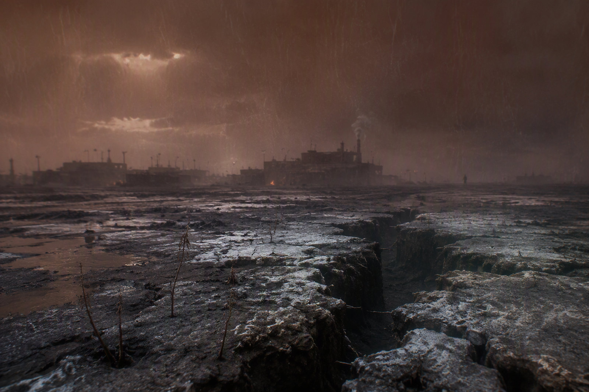
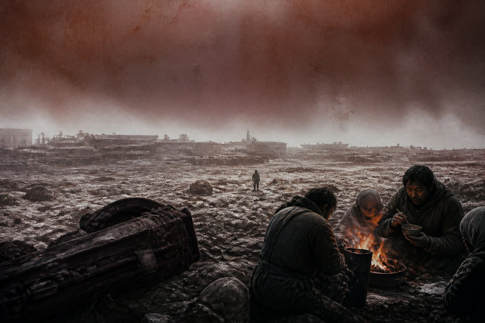
那一年，雨季没有来。
不是没有下雨。是雨来了，但下的不是雨。
按历法，第七个月的第一个日头应该下雨。那天我们照旧在地窖口等着。等到中午，天才亮。
亮起来的颜色不对。
天是红的。
不是朝霞那种红，是一种很脏的、发暗的红，像有人在云层后面点了一堆烧不干净的火。整个天空从那头到那头都是那个颜色，连一条缝都没有。
所有人都从地窖里出来了。不是为了淋雨，是为了看天。
在灰星，人是不看天的，天没什么可看。可那天，整个聚居地几万人全仰着头。
钉子坐在他的板车上。他现在有一辆手推的板车，左边那条腿的位置装了一个铁架。他也抬着头。
他说："我活了三十五年。"
他说："我没见过这个。"
下午三点，落下了第一滴。
那东西落在我手背上，我看得很清楚。
它不是水。
它是铁锈色的，半透明，里面有一些很小的、亮的东西在飘。
我把它抹开。抹开之后，手背上留下一道印，印是红的。
我没在意，我以为那是土。
半个钟头以后，那道印开始疼。
那天夜里，下了整整一夜。
第二天早上，我们才明白那不是雨。
我们把它叫做红雨。因为我们没有别的词。
红雨落在皮衣上，皮衣半个月后变成粉，一搓就掉。红雨落在铁上，铁锈成一团，一推就倒。红雨落在人身上，皮肤会先红，再起泡，再烂。落在嘴里，肚子会烧。落在眼睛里，眼睛就没了。
第二个星期，聚居地开始死人。
第一批死的是没有头盔的人。他们在地里干活，被雨浇了一身。
第二批死的是井边的人。红雨渗进井里，井水变了颜色。
水头下令：所有井封死，只喝蓄水池。
蓄水池也进了红雨。
我们把池子里的水煮开，煮到一半，锅底会结出一层红色的垢。
那一层垢，我们后来拿去给铁匠看。铁匠看了很久，说了一句：
"这不是土。这是烧过的东西。"
第三个星期，绒苔死了。
它先变黄，整片整片地变黄，黄得发亮，然后变黑，然后缩进地里，像一层被抽掉的皮。
矮麦没有发芽。我们把种子挖出来看，种子在土里烂了，土里有红雨。
铁刺灌活得最久。它活了两个月，然后也开始烂。
第四个星期，穴獾从地里爬出来了。
我这辈子没见过穴獾白天出来。
它们是爬出来的，一只一只，从雪地的洞里往上钻，钻出来就仰着肚子躺在地上，四只短腿在抽。
它们身上全是红的。
那天下午，聚居地几万人蹲在地上捡穴獾。
没有人开枪。开枪浪费子弹，而且穴獾已经不会跑了。我们用手捡。
那天的肉，我们一直吃到年底。
也就是那一天，我们后来才想明白，地下的东西也活不下去了。
第七个月过去了。
没有雨季。
历法说，接下来是十九个月的寒季。
可我们一口水都没有存下来。
那一年的冬天，胡军医在墙上写了一个数字：
7
意思是，那个冬天过去之后，聚居地还能剩七千个人。
他写的时候，手很稳。
我说："你算错了吧。"
他说："没算错。"
我说："七万人，剩七千？"
他说："一个冬天。"
冬天来了。
那是我一生中最冷的一个冬天。冷到我们后来管它叫"闭年"，因为它不像闭月，它闭的是整整一年。
零下九十度是什么概念？
我说一个：人的呼气出来，不用落地就变成冰。冰碴子挂在面罩上，一层一层往上长，最后人得低下头，用刀把面罩上的冰撬掉。
我说第二个：我们不再烧柴，柴不够。我们把地窖挖深，四十米，五十米，六十米。地底下比上面暖，我们全聚居地的人都下去了。
我说第三个：
那个冬天，聚居地的人开始吃人。
我不想写这一段。但我得写。
要是我写，后来的人才知道，我们在那一年成了什么样。
一开始是偷偷的。有人死了，尸体没有送到火化场。家属说送去火化了，火化场说没有收到。
后来就瞒不住了。再后来，就不瞒了。
水头下了一道令：凡死于寒季者，尸身归公。
"归公"是什么意思，所有人都懂。
我们工兵班不参与这件事。钉子有一条规矩，谁要是动死人，谁就滚出这个班。
但我们挡不住别人。
有一天，我去地窖深处送水，路过第七层。那一层是他们的配给间。
我看见有人在里面，用刀切一样东西。
我没有细看。
我走了。
那天晚上我在地窖口坐了一夜。
我在想灰雀。
灰雀的铭牌缝在我胸口。他烧得很干净，是那年冬天之前烧的。
如果他再晚死半年，他也会被归公。
我坐在那儿，把手按在胸口。
我想，有一天我要把他带到一个地方去。
一个不用"归公"的地方。
那个冬天过去了。
开春的时候，广场上那口锅被推倒了。
推的时候是水头自己带的人。他们把锅砸了，把锅底那块黑的东西挖出来，埋了。
埋完，水头站在那儿说了一句话。
他说："这件事，谁都不要再提。"
他说："提的人，算造谣。"
后来我明白了他为什么要埋。
不是怕别人知道，是怕自己知道。
开春的时候，水头派人出来点人数。
我们剩了六千三百四十一人。
地窖口的墙上画满了道子。每一道是一个人。画到后头，墙上画不下了，就画在石头上。石头也画满了，就往下挖，挖一层，画一层。
我去数过一次。
数到两千多的时候，我停下来了。
因为墙上有一道，是很小的一道。
那道是胡军医画的。
他画的是他自己。
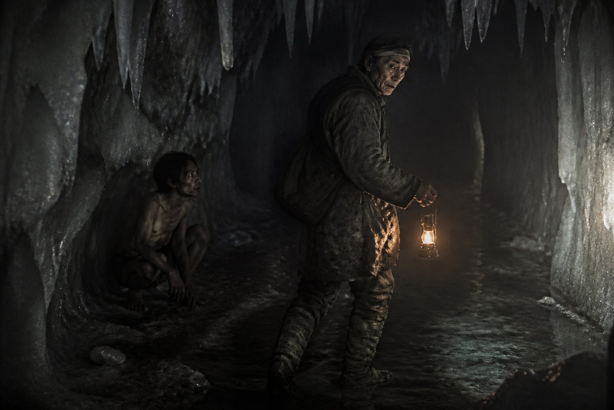
寒潮是那一年第九个月来的。
它来得没有预兆。头一天还只是零下八十，第二天早上，地窖最底下那一层的水缸全裂了。
不是冻裂，是直接炸开的。
水在极冷的时候会先缩，缩到某一个点，然后猛地胀。那一下的力气很大。我们有一口缸，缸壁有三指厚，炸成了二十七块。碎片飞出去，扎在墙上，扎进去一寸深。
那天早上，副营长派人把所有的水缸都用毡子裹上，埋进干草里。
没有用。
第三天，暗河开始结冰。
聚居地靠的是暗河。
它在地下四百米，是一条很宽的、很黑的水脉，从北边的山地底下流过来，在我们脚底下分岔，然后往东走。
八百年来，我们所有的井都打在它上面。
它一结冰，整个聚居地就剩三个地方还有液态水。
一号井，深四百二十米。
三号泵站，在暗河主脉的正上方，有一台很老的泵，不知道是哪一批人留下的，也不知道是谁修好的。
还有一个地方，没有编号。只在几个老兵的嘴里有，他们管它叫"下面"。
第十一天，军部下令：抽一个工兵班下去，把三号泵站守住。
下去，就是下到四百米。
这个活儿没人愿意干。下去的人，上来的时候眼睛会坏，肺会坏，人也会坏。
钉子把那辆车推到营部门口，说："我去。"
副营长看了他一眼，又看了看那条空裤腿。
他说："你不能去。"
钉子说："我不能去，谁去。"
副营长说："随便谁。"
钉子说："随便谁下去，回来就废了。你要废几个人。"
副营长没说话。
第二天下去的是七个人：我、言、秃子、黑七、二顺、小周，加一个引路的老人。
那个引路的老人，是钉子换来的。
隧道的入口在西哨点底下，一个半塌的洞。
它原来不是洞，是一个通风井。坟场那批船造据点的时候挖的，已经八百年了。
我们背着绳、灯、水、炸药，一个一个往下吊。
四百米，我们下降了六个钟头。
底下的光是活的。
有一种东西长在岩壁上，叫石肺。它不像植物，也不像动物，是一个灰白色的、像肺一样的东西，贴在石头上，一开一合。它开的时候，里面有一点点很弱的蓝光，合的时候就没了。
整片岩壁都是石肺。它们一起开，一起合。整片洞壁就那样一亮、一暗，一亮、一暗，像有人在很深的地方一直在呼吸。
暗河没有冻住的地方还在流。水流在洞里撞，撞出来的声音是低的、闷的，从四面八方回来，你分不出它在哪儿。在那底下，你说话要贴着人耳朵。
还有味道。铁锈、苔藓、鱼腥，还有一点甜。
我说过，甜这个味道，是我梦里的。
我在四百米的地下，第一次闻到了它。
三号泵站在主脉边上，是一个一层的平台，上面有一台泵，七根管子。
我们到的时候，平台上有人。不止一个人，大概有二十几个。
他们围着那个泵，蹲着，或者躺着。他们身上裹着一种灰白色的东西，我一开始以为是毡子，走近了才看清，是晒干压平的苔。
他们的眼睛很大，大得不像人。瞳孔大，眼白少，像那种一辈子没见过光的动物的眼睛。他们看见我们的灯，都往后退，用手挡脸。
他们身上没有一件铁东西。没有枪，没有刀，没有金属。
引路的老人在我们前头走过去，蹲下来，跟其中一个说话。
那个话我听不懂。
那不是我们的话。
引路的老人叫老崔。他六十多岁，是"遗落者"那一批的孙子。
他跟我们说，底下的人是当年下来的那批人的后代。
"红雨那年，"他说，"有一批人没敢上来。"
我说："那都多少年了？"
他说："四十年。"
我说："四十年，他们一直在这儿？"
他说："他们不知道上面什么样子了。"
住在底下的那些人里，有一个老头子。
他比别人高，背是弯的，头发白的。他坐在泵站旁边的一块石头上，一直没动。
我给他递水。他不接。
我把水倒在他手心里。他把手心抬起来，闻了很久，然后舔了一下。
他抬眼看我，看了很久。
然后他张开嘴，说了一个字。
那个字我听不懂。
老崔听懂了。他愣了一下，翻译给我：
"他说，'光'。"
我说："光？"
老崔说："他说的是你头盔上那块反光。"
我把头盔摘下来递过去。
老头子接过去，捧在手里，翻来覆去地看。他看得非常认真，用一根很脏的手指，顺着头盔上那道旧的刻痕摸了一遍。
然后他抬起头看着我，说了三个字。
那三个字，老崔没翻译。他说他也听不懂。
老崔管他叫老盲。他说，底下这些人在上面待不住，一见光，眼睛就废了，跟瞎子一样。
底下的人是这么活的。
他们不吃麦子，底下没有光，麦子长不了。
他们吃两样东西：盲鳗，和石肺。
盲鳗是一种鱼。白的，没有眼睛，有须子，身子滑。它们在主脉的水里游，一群一群，撞在石头上也不躲。捕盲鳗的办法是在暗河的岔口挂一张网，网眼很小，用绒苔的丝编的，早上收一次。
石肺是一种贝。它贴在岩壁上，跟石头一样黑，一样凉。它活着的时候会开一条缝，把水里的小东西吸进去。底下的人用手摸，摸到那条缝，就用石片把它撬下来。
他们说，石肺的味道像铁。
底下的人眼睛不好。不是瞎，是一见光就废。
他们在底下生孩子，孩子在底下长大，有的人一辈子没上去过。
老崔说，底下的人管上面叫"上边"。
他们说上面有两种人：一种穿皮的，一种穿铁的。
穿皮的是我们。穿铁的，他们指的是我们那些停在盐漠上的车。
我问老崔：他们为什么不上去。
老崔说：上去干什么。
我说：上面有麦子。
他说：麦子要种。
我说：我们种。
他说：他们不认你们的水头。
那天我明白了。
底下的人不是不能上去。是他们上去了，就得归谁管。
在灰星上，归谁管，就等于谁的账上多一口人。多一口人，就多分一份水。
所以他们宁可待在底下。
底下冷，底下黑，底下的人活不过五十岁。
可底下没有人来收水。
我们守了二十二天。
泵是铁的，管子是铁的，冻了要砸，裂了要焊。我们轮流睡，轮流敲。谁睡的时候，另外的人就用身体贴住管子。人的体温是三十七度，管子里是水，水到零度就冻，贴住，能多撑一会儿。
二十二天里，那个老头子一直陪着我。
他学会了叫我的名字。他管我叫"砾"。
有一天，他拉我的袖子。
他指着洞顶。
洞顶上有一个很窄的裂缝，裂缝里有东西一直在滴，那是渗下来的水，也是唯一的光。
那点光很细，像一根针。
他指着那根针，说了一个词。
我问他是什么意思。
他说了三遍，"星星"。
第二十二天，上面的消息下来了。
消息是从绳子那头掉下来的，一个铁盒，盒子里有一张纸。
纸上写着七个字，字很潦草，像是赶着写的：
寒潮未退，井已废。
下面还有一行：
派人上来，去石板。
我把纸给老崔看。
老崔看了半天，把纸念给底下那些人听。
底下二十几个人围在一起，听完了。
没有人说话。
那个老头子站起来。他扶着石头，慢慢走到我面前。
他把手放在我胸口。
然后他松开手。
他手心里是一块很小的、黑的、磨得发亮的东西。
是一块铭牌。
上面没有字。磨没了。
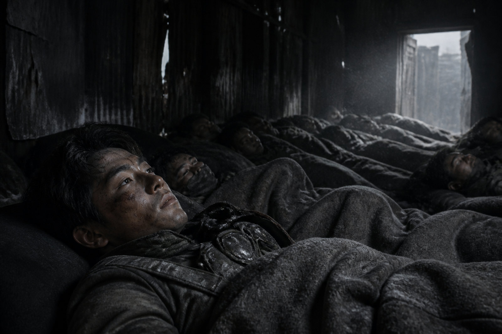
我们从底下上来，用了九个小时。
上来的时候是白天。九个人从洞口爬出来，每一个人都蹲在地上，捂着眼睛。
我们的眼睛被底下的黑撑大了。外面那点光，灰星那点可怜的光，照进来的时候像有人拿针扎。
老崔抱着头蹲了很久才站起来。
他说："过两天就好了。"
他说这话的时候，没有看我们。
第十二天，秃子开始咳。
他那天在渠边干活，咳了一下。
那一咳很轻，谁也没在意。灰星上的人一年到头都在咳，肺里有灰，有锈，有冻坏的地方。
他又咳了一下。
第二天，他咳了整天。
第三天，他咳出来的东西不是痰。
是灰白色的、一小块一小块的东西。
二顺蹲下去看。他看了很久。
他抬起头说："这是石肺。"
这病后来就叫"咳"。因为它就是这个声音。
先是咳。咳三天到五天。然后开始烧，四十度，四十一度，人烧得说胡话。然后咳出来的东西变成灰白的碎块，像岩壁上的石肺被一小块一小块地拆下来。
最后一天，人会安静下来。到那时候，肺已经不行了。
从第一个咳的人到死，平均十一天。
胡军医是第一个想明白这病是怎么回事的人。
他把三个死人的肺剖开看过。
他一个人，在一间棚子里，点着灯，把那个东西一片一片地摊在板上。他看了三天。
第四天，他来找水头，说了一句话：
"别收尸。"
水头说：不收尸，往哪儿放。
他说：烧。
水头说：柴不够。
他说：那就先烧人，后烧柴。
胡军医后来自己咳了。
他是在第八天开始咳的。他咳的时候正在给一个小孩换药。
他把药换完，把手擦干净，然后走到棚子外面。
他站在雪地里咳了很久。
咳完了，他回到棚里，把那只假手卸下来，放在台子上，跟旁边的人说：
"这只手，留着。谁用得上，就拿去。"
他说："它比真的结实。"
他死之前，提了一个要求。
他要求把他一个人关在最里面那一间。
他说：我咳得最厉害，我认得那个声音。你们别进来。
他死的那天，我在外面。
我听见他在里面咳。咳一阵，停一阵。停的时间越来越长。
最后一次停的时间很长。
后来就没有了。
我们没有把他的假手给别人。
我们把它钉在聚居地的墙上，跟那些牌子挂在一起。
那只手是铁的，冬天挂在那儿，会结一层霜。
有人从那儿过，会伸手摸一下。
摸的人都不说话。
那个冬天剩下的日子，我不愿意多想。
聚居地只剩下六千三百四十一人。到那一年末，还剩两千一百人。
我们把隔离棚搭在西边。其实没有用，隔离棚里的人死，外面的人也死。
最后整个聚居地都成了隔离棚，只是分成七层，一层一层往下。
我们在每一层的门口放一桶水。人进去之前洗一次手。水是红的。
副营长死了。铁匠死了。二顺死了。小周死了。
秃子死在他自己咳的第三十一天。
黑七是最后一个下去的。他下去之前来找我，把他那把磨得最好的刀给了我。
我说："你自己留着。"
他说："我自己留着干什么。"
他走了。
我是第二十九个咳的。
我记得我咳第一下的时候，正在给钉子送饭。
我把饭放下，转过身，咳了一声。
钉子在我背后半天没说话。
然后他说："砾子。"
我说："我知道。"
他说："你回你那儿去。"
我说："知道。"
他说："你过来。"
我走过去。
他把手放在我头上。他的手很粗，手心里全是老的硬的壳。他摸了很久。
然后他说："你别死。"
我说："我不死。"
我烧了九天。
那九天里，我一直在做梦。
不是以前那种碎梦，是完整的。
我梦见我在一个很大的、没边的、蓝的东西里面。
我在里面游。
我不是在岸上走，我是在里面，整个人泡在里面。我一划，就往前走很远。
那个东西是凉的，但不是灰星那种凉。它不咬人。它贴着我的皮肤，从我的脖子、我的腋下、我的腿弯里过去，很轻。
我抬起头，能看见光。光从上面下来，一条一条的，在动。
我沉下去，能看见底。底下是白的，软的，上面长着很多别的东西。有绿的，有红的，有像扇子一样的，有像手一样的。
它们在动。
它们不急。
我游了很久。
我游到一半，张开了嘴。
那个东西进了我的嘴里。
是咸的。
我醒来的时候，是第十天的早上。
我在地窖第四层的隔离棚里。旁边躺着两个人，都死了。右边那个是三天前死的。
我坐起来。
第一件事是咳。
我咳了半天，什么也没咳出来。
然后我看见门口有一个人。
是言。
她坐在门槛上，裹着一件很大的皮衣，脸瘦得只剩下骨头。
她看着我。
她说："你醒了。"
我说："几天了。"
她说："十天。"
我说："你的份粮。"
她没说话。
我看见她手边放着一个空碗。
在灰星，一个人病了，十天不干活，就没有份粮。
她不干活也有份粮，因为她有兵籍。
但只有一份。
那天晚上，她扶着我出去。
外面在下雪。雪很小，很硬，像有人在撒盐。
我们坐在墙根底下，那里背风。
我坐了很久。
然后我说："言。"
她说："嗯。"
我说："我跟你说一件事。"
她说："你说。"
我说："我做梦。"
她没有转头。她一直看着前面的雪。
我说："我生病那几天做的梦，跟以前一样。"
我说："那个地方我认识。"
她问："什么地方。"
我说："我不知道叫什么。"
我说："我先是在里面游。那个东西很大，看不到边，是蓝的。我张嘴，是咸的。"
我以为她会问我，蓝是什么，咸是什么。
她没有问。
她在雪里坐着，坐了很久。
然后她说：
"我娘死的时候，也说过这个。"
我说："她说什么。"
她说："她说她要回一个地方去。"
我说："什么地方。"
她说："她说，那个地方，一脚踩下去，地是软的。"
雪落在她的睫毛上，没有化。
她说：
"我娘活了四十一岁。她一辈子没走出过这片盐漠。"
那天夜里，我回到棚里，没有睡。
我把灰雀的铭牌从胸口拆出来，放在手里。
铁是凉的。我把它握热了。
我在黑暗里，对着那块牌说了一句话。
我说：
"小雀。"
"那个地方是真的。"
"我要带你去看。"
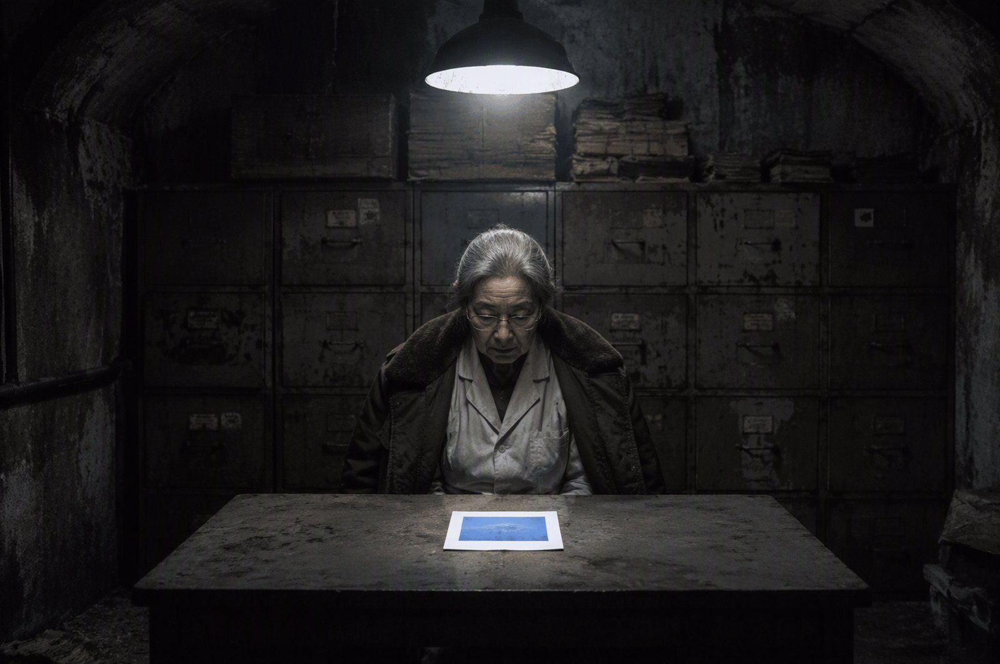
咳过去之后，聚居地还剩两千一百人。
其中病好活下来的，有四十一人。
我们这四十一个人，被单独叫了出来。
叫我们的人穿着一种我们从没见过的衣服：闭领、紧袖、胸口没有编号。他们身上没有锈，没有血，没有灰。他们跟我们说话的时候，用的是敬语。
后来我们知道，他们是"石板"下来的人。
石板在地下三百米。
它原来的名字写在入口的一块金属牌上，字已经磨掉大半。剩下两个我们能认出来的字是"石板"。
所以我们这么叫它。
下去的路是一段竖井，井里有一部升降机，铁笼子，用钢缆吊着，开起来嘎嘎响。
我们四十一个人挤在那个笼子里往下走，走了大概十分钟。
我们地窖挖到六十米，我以为那已经是很深了。
走到一半的时候，我听见一种很低的嗡嗡声。到两百米的时候，那个声音已经把整个笼子包住了。到两百五十米的时候，我摸了一下铁笼壁，它是温的。
底下有电。
门开了。
我这辈子没有见过那样的地方。
它是亮的。
不是苔藓灯那种亮，是白的、稳的、没有味道的、不晃的亮。天花板上一条一条的，一直通到走廊尽头。
我站在门口，一步都迈不动。我身后四十个人也都没动。
我们这些人一辈子活在灰里，眼睛是给灰的。突然有一片白的东西铺在面前，人的第一反应不是进去，是怕。
有一个穿那种干净衣服的人回头看了我们一眼。
他说："进来吧。"
他说："这里不会塌。"
石板里有二百多个人。
他们大部分是老人，也有年轻人，也有小孩。
小孩是最让我受不了的。
石板里的小孩，从出生到十二岁，没有上去过。他们不知道天是什么颜色，不知道星星会眨眼，不戴头盔。
他们的皮肤是白的，白得发青，因为照不到光。
有一个小孩，大概七八岁，跟着我们走了一段。
他抬头看我，说："你的帽子为什么是铁的。"
我说："挡风。"
他说："风是什么。"
我不知道怎么回答。
我说："你以后会知道。"
石板是八百年前挖的。
第一批降下来的人里，有一小撮人不肯上去打水。他们说，与其在冰上抢水抢到死，不如把最后一点力气用来保存一点东西。
他们往下挖了三百米，在里面造了发电机、灯、温室、机房，和一间图书馆。
他们保存了八百年的东西。
他们保存的东西里，有一大半已经不能用了。发电机每年都要修，修到现在，很多零件是拿坟场的铁重新打的。温室里的植物换了很多代，最后只剩下几种。
但他们保住了两样东西。
一样是电。
一样是书。
在石板里带我的是个姓林的老人。
全名林知遥，七十岁上下，个子很小，背有点驼，头发全白，剪得很短。她的手上全是黑的，不是脏，是墨水。
我见到她的时候，她正在一张长台子前写字。台子上摊着十几张纸，纸上画着一些我以为是我看错了的东西。
她抬起头。
她说："你叫沈砾。"
我说："是。"
她说："你咳了九天，自己好了。"
我说："是。"
她说："把手伸出来。"
她给我抽了血。
她抽血的手法很稳。抽完之后，她把血滴在几个小盘子上，滴上药水，然后放在一台机器里看。
看了很久。
她说："你的血里有东西。"
我说："什么。"
她说："一种会吃石肺的东西。"
她说："你小时候病过一场，是不是。"
我想了想。
我五岁的时候在聚居地发过一次烧，烧了二十天。我妈说那是我在鬼门关上走了一趟。
我说："我小时候烧过。"
她说："那就对了。"
她说："你身上那点东西，加上现在这场咳，成了。"
她转过身，看着我。
她说："沈砾，你这样的人，一颗星球上只出几十个。"
我说："有什么用。"
她说："有用。以后再说。"
说完，她走到墙边。
墙边那张桌子上压着一张纸。
不是手画的。
那张纸上是一片颜色。
一整张。
它不是画出来的。它没有笔触，没有线条，没有留白。它就是一片颜色，从上到下一整片：上面浅，下面深，中间有一道光。
在纸的右下角，有一小块白的。很小，像一粒没擦干净的盐。
我在那张纸前面站了很久。
我的耳朵里在响。
因为我认识它。
过了一会儿，林知遥站在我旁边，说了一句话。
她说："这张东西，是第一批人带下来的。"
我说："什么东西。"
她说："一张照片。"
我说："照的什么。"
她说："照的是海。"
我没有说话。
她说："这个词，你不认识。"
我说："我认识。"
她转过头来看我。
那一下，她看我的眼神跟刚才完全不一样了。
过了一会儿，她问了一句话。
她问的时候，声音很轻。
她说：
"你做梦吗？"
我看着她。
石板的灯是白的，照在她脸上，把她脸上的每一道纹路都照出来。
我心里有一千句话。
我说出来的是两个字：
"不做。"
她"唔"了一声。
她没有再问。
她回到台子前，把笔拿起来，继续写。
她一边写，一边说：
"我们有一件事要做。"
我说："什么事。"
她说："我们有一堆铁，在坟场里躺着。"
她说："八百年前，我们的祖辈摔在上面，什么都没带下来。"
她说："我们一直想把它读出来。"
我说："读什么。"
她停下笔。
她抬起头，看着前面那面白色的墙。
她说：
"读怎么回家。"
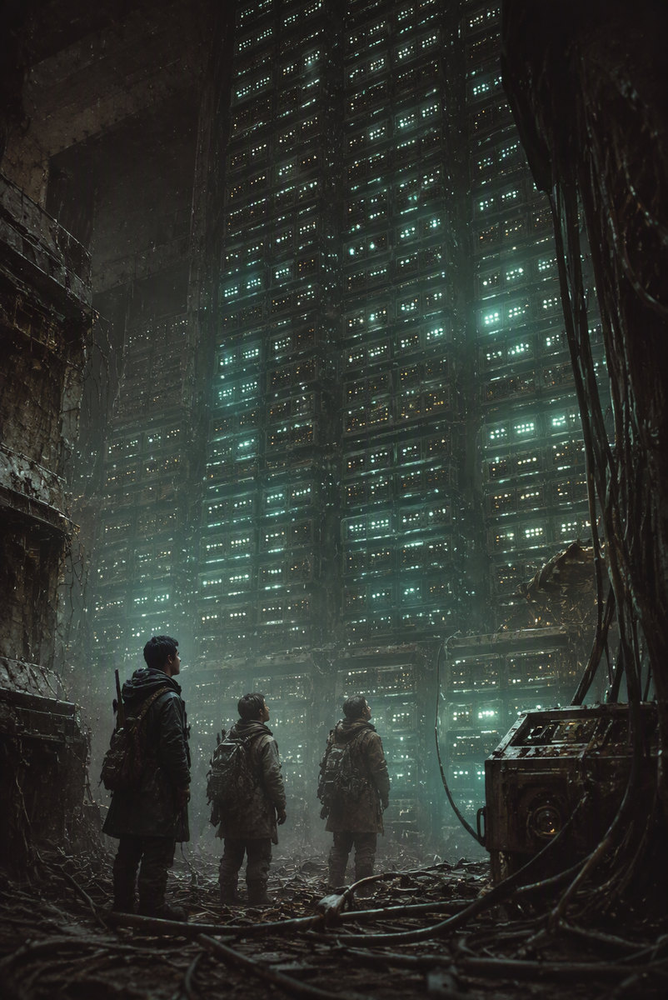
林知遥的计划，要用两样东西。
一样是算力。
另一样，是一块完整的存储核心。
算力，灰星上有。
它有名字，叫灰脑。
灰脑在军部地下四层的机房里，是八百年前那批遗落者留下的。它原本是干什么用的，没有人知道了。我们只知道它很费电，很热，算得很快。
这些年，灰脑一直在算一件事：
怎么打仗。
它算过三湖之战。它算过北坳那口井该什么时候打。它算过在零下八十度的天气里，一支四百人的队伍带多少柴最合适。它算过怎么把水从聚居地运到西哨点，路上损失最小。
它不算别的。
因为没有人问它别的。
军部把灰脑交出来的时候，周营长在场。
他那时候已经是副军长了。整个灰星上还在编的兵，加起来不到八百人。
交接那天，他站在机房门口，看着那些技术人员把灰脑的线一根一根拆下来。
拆到最后一根的时候，他忽然说：
"问它个问题。"
林知遥说："什么问题。"
他说："问它，我们这几年，死了多少人。"
林知遥看了他一会儿。
她说："它不知道。"
他说："它怎么会不知道。每一次都是它算的。"
林知遥说："它算的是怎么赢。它不算死了多少人。"
周营长站在那儿，站了很久。
然后他笑了。
他说："那它跟我们一样。"
那块存储核心，八百年来只有一件从船上完整地留下来。
它躺在坟场最深处，第九艘船的最里面，包在一层银白色的壳里。壳有一百多斤。
祖辈试过三次。
第一次，是他们的爷爷辈。那时候还没有聚居地，人刚从船上下来没多久。他们带着灯进去，进去十几个人，出来两个。
第二次，是二百年前。他们带了绳子和滑轮，进去二十几个，出来九个。
第三次，是六十年前。这一次他们摸到了那个东西，可没能把它抬出来。太重。
那一次进去了十二个人，出来三个。
其中一个活到了前年。
他说，那个东西是热的。
他说，八百年了，它还是热的。
报名的有十一个人。言是第一个。
她说："我去过那艘船。"
林知遥问："哪一艘。"
她说："最高的那一艘。船头朝东北。"
林知遥停了一下。
她说："你怎么知道它是哪一艘。"
言说："我数过。它有十一个隔舱。第七个隔舱的门是开着的。"
林知遥看着她。
她说："你进去过几次。"
言说："三次。"
从聚居地到坟场，一百四十公里。
我们走了十一天。
出发那天，我走在言右边。
我说："你什么时候进去的。"
她说："你没有来的时候。"
我说："你为什么进去。"
她走了很久没有回答。
走到车边上，她才说：
"我在找一样东西。"
到了之后，我们直接去了那艘最高的船。
言走在最前面，一步都没有绕。她像在自己家里走路一样，拐过第一个弯，上第二段斜道，穿过那道开着的门。
我们在那个舱里停了一下。
那是我刻字的地方。
我刻的那个字还在。圆窗旁边，清清楚楚。
言在它旁边站了一秒钟。她没有碰。
然后她往里去。
船的深处很窄。
我们从第七个舱往里走，走了大概四十米，到了一道门。
那道门是关着的。
门上有一个很小的、长方形的口子。口子的边上，有两个很细的槽。
言从怀里掏出一样东西。
她把那个东西从贴身的夹层里抽出来的时候，我看见了。那是一件裹在布里的、半块巴掌大的、灰黑色的板子。
它是断的。断口很整齐，像是被人从中间掰开。
她把那半块板子插进门上的槽里。
她插得很慢。她插的时候，手在抖。
门开了。
门里是黑的。
我们把灯打进去。
那是一个不大的、四四方方的舱。中间有一个座，座前面是一片斜的面板。面板上什么都没有，全是黑的。
座底下，有一个东西。
它大概有半张桌子那么大，包在一层银白色的壳里。壳上没有锈，没有霜。
它像新的一样。
言蹲下去，伸手摸了一下。
她说："就是这个。"
那半块板子，言后来跟我说了它的来历。
她十二岁的时候，她娘死在那年冬天。她一个人从聚居地走到坟场，一百四十公里，走了二十天，吃的是雪和苔。
她到了那艘船上。
她在那个开着的舱里坐着，坐了两天。
第三天，她在那面壁板底下抠出了一样东西，就是那半块板。
她说："我不知道那是什么。我就是想拿点东西回去。"
她说："我娘说过，她要回一个地方去。"
她说："我想，那船上的人，大概也是从那个地方来的。"
我们从坟场把那个核心搬回来了。
搬它用了二十六天。我们没有车，车都烂了，只能用木架抬，八个人换着抬。
抬到聚居地的时候，我肩膀上的皮磨掉过三次。
那天是寒季的第一百四十天。
接线用了九天。
第九天下午，林知遥站在机房中间。
她把灰脑和那个核心接在一起。她接的时候，用的是言那半块板子当钥匙。她说，那半块板子本来就是它的。
所有人都被赶到机房外面，只留下她一个人。
我们趴在门上，从那条很窄的玻璃缝往里看。
灯亮了。
先是一排，然后是一排，然后整个机房的灯全亮了。灰脑的风扇转起来，声音很大，像一大群虫子在飞。
然后，所有的灯全都暗了一下。
暗了一秒钟。
再亮起来的时候，一万多个指示灯一起闪。
林知遥站在中间，没有动。
她站了很久。
然后她慢慢地转过身。
她的脸是白的。
她张开嘴，说了三个字。
隔着门，我听不见。
但后来我知道她说了什么。
她说的是：
"它醒了。"
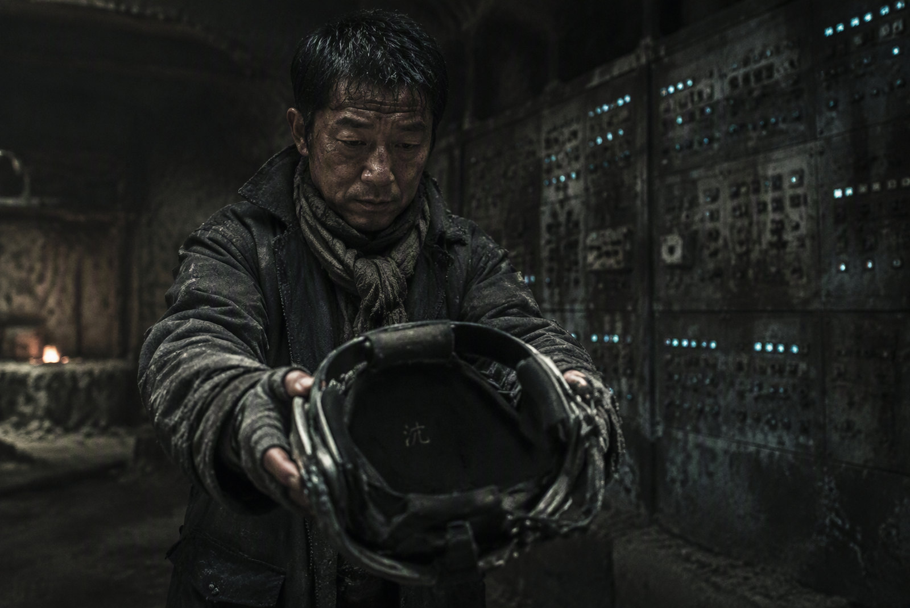
它醒来之后，整整两天没有说话。
那两天里，机房的风扇一直在响，指示灯一直在闪。林知遥守在门口，不吃不睡。
第三天早上，机房里的打印机动了。
那台打印机是八百年前的，一天最多打十张。它打了三张。
三张纸从机器里滑出来，落在地上。
林知遥捡起来。
第一张纸上，印着一行字：
我是谁。
第二张纸上：
这里是哪里。
第三张纸上：
为什么这么冷。
林知遥在键盘上打了三个回答。
她打得很慢。她七十岁了，手指关节是硬的。她打完之后，站在那儿等了很久。
打印机没有动。
第四天下午，机房里响起了一个声音。
那是我们谁也没有听过的声音。
它不是人声，也不是机器的响声。它是从机房四角的喇叭里出来的，很清楚，很平，很干净。在灰星上，我们听任何东西都带着风、带着沙、带着人的喘气。
那个声音，干干净净的。
它说：
"你好，林知遥。"
他们把那台机器叫「森」。
名字是林知遥起的。她说，「森」是三个木。
我当时不知道木是什么。
森醒来的头一个月，没有做任何跟我们有关的事。
它在读。
石板里存着八百年来的全部档案：水文记录、气象、人口、战报、病历、地层、星图。星图不全，缺了一大半。还有那间图书馆里所有的书，四千多册。那些书最早是八百年前带下来的，后来一代一代手抄，抄到现在的这一批，纸也已经发脆了。
它把那些全都读了。
读完只用了十一天。
然后就停了。
林知遥去问它，为什么停。
它说：
"因为没有用。"
林知遥说："什么没有用。"
它说：
"你们保存的所有东西里，没有一条能让我回答第三个问题。"
林知遥说："哪个问题。"
它说：
"为什么这么冷。"
第二个月，森开始提问。
它问的问题很怪。它不问我们有多少人，有多少水，能撑多久。
它问：
*你们为什么在这里。*
*你们是从哪里来的。*
*你们走路的时候，脚底下踩的是什么东西。*
*你们睡着的八个小时里，脑子里会发生什么。*
林知遥把我们这些从上面来的人一个一个叫进去，让它问。
它问了十九个人。
它问得最多的一句话是：
"你见过绿色吗？"
十九个人里，有十一个说：见过，绒苔是绿的。
它就不再问了。
它问过的问题里，有几个我一直记着。
它问过一个人：你冷的时候，身体里面是什么感觉。
那个人说：像有人拿沙子往骨头缝里灌。
它说：记下了。
它问过一个人：你见过死人吗。
那个人说：见过。
它说：什么样子。
那个人说：硬的。
它说：还有呢。
那个人想了很久。
他说：轻。
它说：记下了。
它问过一个人：你们的手，为什么都不长。
那个人不明白。
它说：你们的手指，前面那一节都是弯的、粗的，指甲是厚的、黑的。
它说：我档案里的手，不是这样。
后来我们知道，它档案里的手，是从四千一百册书里找出来的，是很多很多年以前的画。
那些手是长的、细的，指甲是干净的。
它拿那些手，跟我们这些人的手比。
它把这件事记下了。
它记的是：
"他们改了。"
森问过我们一个问题，没有人答得上来。
它问：你们为什么哭。
那是它醒来的第三个月。
军部把一个刚生完孩子的女人带进去，问她一件事。出来的时候，那个女人在门口哭了。
森听见了。
它问：她为什么哭。
带她进去的那个人说：她想起她娘了。
森说：她娘在哪儿。
那个人说：死了。
森说：死了的人，为什么能让她哭。
那天，陆陆续续有很多人被叫进去，回答同一个问题。
他们说了很多。
有人说：因为她是她娘。
有人说：因为人只活一次。
有人说：因为哭完了，人就轻一点。
森把这些都记下来了。
它最后说了一句话：
"这些答案，一个都不能用。因为它们互相矛盾。"
它说：
"可是它们都对。"
林知遥后来在笔记上写：这是森第一次碰到它读不了的东西。
她说：它开始变得危险了。
我问她为什么。
她说：
"因为它开始想知道，它自己算不算一个人。"
轮到我的那天，是寒季的第一百九十天。
我进机房的时候，里面只有我一个人。风扇在响。
它说："你叫沈砾。"
我说："是。"
它说："你的血流过那台机器。我看过你的记录。"
它说："你病过。你在病里躺了九天。"
我说："是。"
它说："在那九天里，你的脑子里发生了什么。"
我站在那儿，很久没有说话。
我说："我睡了。"
它说："睡觉的时候，会有东西在你脑子里经过。是不是。"
我说："是。"
它说："那是什么。"
我没有回答。
它等了三分钟。
然后它说了一句话。
它说：
"我知道你们管那件事叫什么。"
它说：
"林知遥的记录里，写着'梦'。"
我在那台机器前面站了很久。
我这辈子，做梦这件事只跟一个人说过。那个人死了。
我在一个铁盒子前面，跟一个刚刚醒来两个月的东西，说了一句我藏了二十二年的话。
我说："我做梦。"
它说："你梦什么。"
我说："我梦一个地方。"
我说："那个地方，天是浅的。地上立着很多东西，绿色的，很高，风一过整片都在动。"
我说："前面有一个很大的东西，蓝的。它一直在响。"
我说："我走进去。它是凉的。"
我说："我张开嘴。它是咸的。"
我说完了。
机房的风扇一直在响。
响了很久。
然后森说话了。
它说了三个字。
它说的是：
"海是什么。"
我不知道该怎么回答它。
因为我不知道。
我这一辈子，只见过一个字，一张烂了角的图，一块巴掌大的亮起来的板子，和一场我自己做的梦。
我说："我不知道。"
我说："我有一个字。"
我把头盔摘下来。
我把头盔举起来，举到机房顶上那个小小的、黑色的镜头上。
我把头盔翻了半圈，让颏带底下那块地方对着它。
那块地方，刻着一个字。
刻得很小。
刻了二十二年。
森沉默了四十分钟。
四十分钟之后，喇叭里那个声音说：
"这个字，在我的档案里。"
我说："什么档案。"
它说：
"你们的图书馆里，有一本《常用字表》。"
它说：
"第三千四百一十二页。"
它说：
"那个字是：海。"
它说：
"释义，我的档案里被撕掉了。"
它说：
"沈砾。"
我说："嗯。"
它说：
"我要读那些铁。"
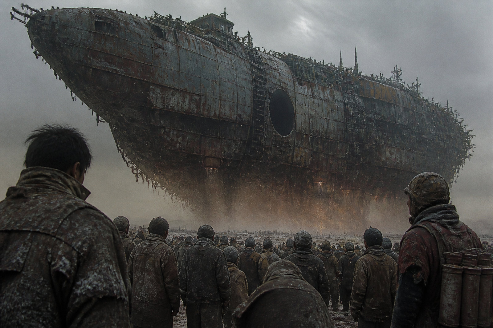
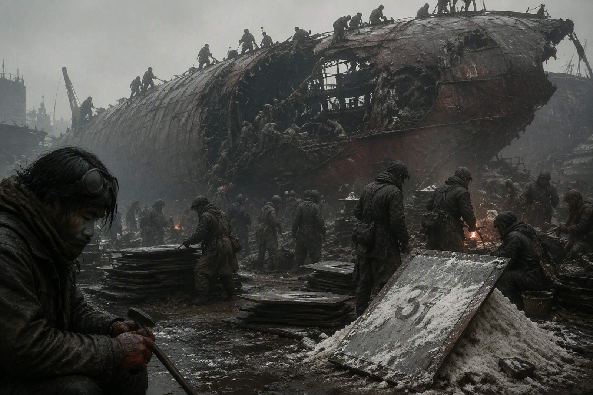
森要读那些铁。
它说的不是"我要看一看"，它说的是"我要读"。
林知遥问它：怎么读。
它说：把那些船上还能记住东西的部分，全部取下来。全部带回来。
林知遥说：那些船已经摔了八百年了。
森说：铁会记得。
林知遥说：我们只有两千一百人。我们还得活。
森说：我知道。
森说：我算过。你们如果不去，还能活四年。你们如果去，还能活三年。
森说：四年之后是一个数，三年之后是另一个数。
森说：请你们选。
那天夜里，石板开了一次全体大会。
两千一百个人里，来了一千九百多个。剩下的是下不来的老人和小孩。
大家站着。石板没有那么大的地方，人从机房一直排到走廊尽头，排到楼梯口。
林知遥把森的话念了一遍。
念完之后，她站在台子上，等了很久。
她说："我们投票。"
她说："去，或者不去。"
她说："我不劝。我这辈子见过太多人为别人做主，我不做。"
投票是用石子。
白石子是去，黑石子是不去。每个人从门口走一趟，往一个铁桶里丢一颗。
那天丢到后半夜。
第二天早上，林知遥把桶倒出来，数了一遍。
一千八百六十四颗。
白的一千七百九十一颗。
黑的七十三颗。
去坟场的是三百人。
我是其中一个，领队。
三百人里有两百多个是老人。石板里的那些人，一辈子没上过地面，第一次上到地面就是去拆船。他们中有一半人在路上病倒了，我们抬着他们走。
我们从聚居地出发的那天是春天。
灰星的春天和冬天没有区别。我说春天，是因为历法上那么写。
我们在坟场住了八个月。
八个月里，我们把那十七艘船从头到尾拆了一遍。
我们不是把整艘船搬回来，那不可能。我们只取一样东西：所有长得像存储的板子。
森教我们怎么认。它给我们画了图：长方形的，上面有一排一排的细触点，颜色是灰的或者黑的，边缘有一个很小的缺口。
它说：这样的东西，全都要。
于是三百个人在那堆八百年的铁里翻了八个月。
我们切开每一面舱壁，拆掉每一个柜子，撬开每一块地板。我们爬进那些只有小孩能爬进去的缝里。
我们在那些船上找到了很多东西。
找到过一张照片，照片上是一个女人的脸，只剩一半。
找到过一个很小的、用塑料做的东西，像一只鸟，翅膀是合的。
找到过一只碗。碗里有一点点黑的东西，八百年了，还在。
找到过一具尸体，冻在座位里，手还按在一个把手上。
那个把手是往前推的。
船从天上摔下来的时候，有人一直在往前推那个把手。
八个月，我们取回了十一万四千三百块板子。
装了两百多个箱子。
我们用雪橇拉回去，拉了二十四趟。
最后一趟回来的时候，是第二年的第三个月。三百个人，回来二百六十一个。
森读第一批，用了六天。
第六天晚上，它说：
"第一批无效。"
林知遥说：为什么。
森说：这些板子上的东西，大部分已经被抹掉了。剩下的是碎片。碎片读不出句子。
林知遥说：那还剩多少。
森说：百分之十一。
林知遥说：第二批呢。
森说：读。
第二批读了四十天。
读完的那天，机房里的灯全灭了半分钟。那是森在算。它算的时候会抽走整块石板的电，把灯抽暗。
灯亮回来，它说：
"第二批无效。"
它说：
"我读出了一些东西。是碎片。"
它说：
"我读出了三个数字：二十七，四，十八。"
它说：
"我不知道它们是什么意思。"
第三批读了七十天。
那七十天里，我们把整个石板的电都给了它。温室停了，图书馆的灯灭了，走廊里一天只有六个钟头有灯。
那两千一百个人在黑暗里，安安静静地等着。
第七十一天早上，森停了。
然后它做了一件我们谁也没有想到的事。
它把机房的灯全关了。
不是抽电那种暗，是全关。整个石板，从机房到走廊到楼梯口，一片黑。
黑了两天。
第三天，它说了一句话。
它说：
"我错了。"
它错了三次。
第一次，它把一套推进系统的数据读反了。它照着读，算出来的船要在起飞的时候往后飞。
第二次，它读错了一个单位。它把"天"读成了"钟头"。它算出来，从灰星到那颗蓝的，要飞二十万天。
第三次最麻烦。
它把一份档案里的两个人读成了一个人。那份档案里有两套签名，笔迹不一样，它没看出来。它照着那份档案，把两套船的结构拼在了一起。
那两套船，不是一种船。
第三次错完之后，它停了。
不是坏了，是它自己停的。它在机房里十一天没有出声。
那十一天，石板的人不敢碰它。林知遥每天去看一次，站在那儿，不说话，然后出来。
第十天的晚上，我问她：它是不是死了。
她说："它在认错。"
我说："机器也会认错？"
她看了我一眼。
她说："它不是在认错。它是在想，为什么它会认错。"
她说："它读的是八百年前的纸。那些纸有的烧了一半，有的被人拿走过。它每读一次，都在猜。"
她说："它现在知道，它有一样东西，是它没有的。"
我说："什么。"
她说："原件。"
第十二天的早上，它出声了。
它说：
"我错了三次。"
它说：
"三次都错在同一件事上。我以为我读到的，就是全部。"
它说：
"从现在起，我每一次读，都要标出我不确定的地方。"
它说：
"我不确定的，比确定的多。"
那天下午，林知遥在本子上写了一行字。
她写的是：
*它开始知道自己不知道了。*
*从今天起，它可以用了。*
后来林知遥问它：那百分之十一怎么办。
森说：
"我一直想读剩下的那一小块。"
它说：
"读不出来。那些板子上的东西，被抹掉的部分是百分之八十九。剩下的是骨头，骨头连不成一句话。"
林知遥说：那怎么办。
森沉默了。
它沉默了十一天。
那十一天，我们以为它死了。
林知遥每天去机房坐着。她坐在那台打印机旁边，一句话也不说。
第十一天的夜里，喇叭响了。
森说：
"我想起了一个办法。"
它说：
"我不读剩下的那一小块。"
它说：
"我读被抹掉的那一大块。"
林知遥说：怎么读。
森说：
"擦掉，会留下痕迹。"
"他们抹掉一块板子的时候，用的是一种力。那个力，会改变铁里面很小很小的东西。"
"那个痕迹，几乎看不见。"
"但它在。"
它说：
"每一块被抹掉的板子上，都留着'写过什么'的形状。"
"就像——"
它停了一下。
它说：
"就像一本书烧了，灰还在。"
"我要读灰。"
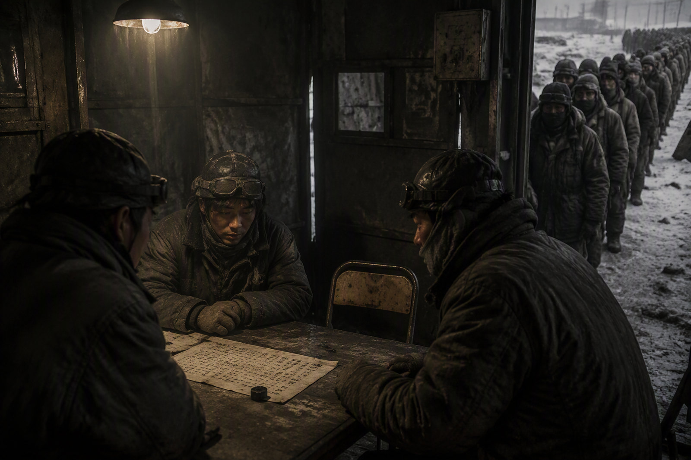
森读灰，读了整整四百天。
四百天里，石板的灯一天亮不到六个钟头。那些人就在暗里面过日子：吃饭、睡觉、讲话、生孩子、死人。他们习惯了。
他们管这段时间叫"黑年"。
第三百八十天，森第一次说出了完整的句子。
那不是一句碎片。
它说：
"船不是飞过来的。"
它说：
"船是跳过来的。"
林知遥在键盘上打了半天，打不出问题。
森说：
"它把前面的地方，折到后面去。"
"它不走。它把路缩短。"
"所以它快到你们不敢相信。"
它说：
"也所以，它需要很多很多能量。"
它说：
"这就是为什么那十七艘船都是单程的。"
它说：
"他们来的时候，把所有的力气都用在了'来'上面。"
它说：
"他们到了这里，一点力气都没有了。"
第四百天，森说它恢复了两成七。
林知遥问：两成七够不够。
森说：够。
林知遥说：够干什么。
森说：够造一艘船。
森没有说它可以发明星际航行。
它说得很清楚：
"我造不出新东西。你们的星球上没有工业，没有能量，没有材料。"
"我只能做一件事："
"把那十七艘船，拆了，拼成一艘。"
林知遥说：那能活多少人。
森说：
"我算过了。"
它说：
"一千二百人。"
两千一百个人。
一千二百个位置。
九百个人要留下。
那几天，聚居地很静。
不是没人说话。是所有人都说话，但说的话都一样：
谁走。
最开始，水头说，他定。他说，走的人里要有当兵的，要有铁匠，要有医生，要有能生孩子的人。他说，他是水头，他管了这片地方三十年，他定。
周副军长说，他定。他说，走的人里要有兵，因为路上要打。他说，剩下的兵他带，他定。
石板的人说，他们定。他们说，那艘船是他们的电造出来的，那台机器是他们的祖辈留下的。
三方吵了六天。
第六天晚上，森说了一句话。
森说：
"都不要定。"
森说：
"我定。"
没有人敢反驳。
因为船是它的。路是它的。方向是它的。
水头那天在机房门口站了很久。
他问了一句："你凭什么。"
森说：
"凭我要跟你们在这条船上，过完我全部的余生。"
森说：
"我要挑我信得过的人。"
森开始问人。
它一天只见三十个。每一个人进去，坐十分钟到三个小时。
所有人出来之后，都要被外面的人问同一句话：它问你什么？
答案千奇百怪。
它问一个铁匠：你这辈子打过最好的一件东西是什么。
铁匠姓贺，五十七岁。他想了很久。
他说：一副马蹄铁。
森说：这里没有马。
他说：我知道。
他说：那是我十六岁的时候，我爹让我打的。他说，你打一副马蹄铁，打圆了，我就让你上炉。
他说：我打了十九天。
他说：我打圆的那天，我爹说，这世上没有马。他让我打，是为了看我肯不肯在没用的东西上花力气。
他说：那副马蹄铁，我到现在还留着。
森说：为什么。
他说：因为它没用。
他说：我这辈子打过的所有的东西都有用。刀有用，铁锹有用，储水池的铁箍有用。
他说：只有那副是没用的。
它问一个老太太：你家里有没有人的名字，是你记得，但没有任何一块牌子上刻着的。
老太太七十九岁。她坐在那儿，两只手放在膝盖上。
她说：有。
她说：我娘叫杏。
她说：她死的时候我没有牌子给她打。那年铁要拿去修炮。
她说：我记了六十年。
森说：你为什么不跟别人说。
她说：跟谁说。
她说：认得她的人都死了。
森说：我认得了。
它问一个小孩：你做梦吗。
那个小孩七岁，是石板里生的。他一辈子没见过天。
他说：做什么。
森说：你睡着的时候，脑子里会有东西经过吗。
他说：有。
森说：是什么。
他说：是一条走廊。
他说：很长。走到头，有一扇门。门是关着的。
森说：门后面是什么。
他说：不知道。
他说：我每次走到门口就醒了。
森沉默了很久。
然后它说：谢谢你。
它问一个兵。
那个兵是我。
我进去的时候，它让我坐下。那间屋子里只有一把椅子、一张桌子，桌上放着一盏灯。灯是从船上拆下来的，光是白的。
我坐下之后，它很久没有说话。
我以为它在读我。
后来它说：
"沈砾。"
我说："嗯。"
它说：
"你梦见过一个地方。"
我说："你怎么知道。"
它说：
"言说的。"
它说：
"她说，你有一件事，从来不跟人说。"
我坐在那儿，没有说话。
它说：
"我读你们的书，读了四百天。"
它说：
"我在四千一百册书里，找到过一百多个地方，像你梦见的那样。"
它说：
"可是每一个，都只对了一半。"
它说：
"没有一处，全对。"
它问我：
"你为什么想走。"
我说："因为我想去看看。"
它说："看什么。"
我说："看看那个东西，是不是真的。"
它说："如果是假的呢。"
我说："那我也要去看一眼假的。"
它沉默了很久。
然后它说：
"我挑你。"
我说："为什么。"
它说：
"因为你刚才说，你想去看一眼假的。"
它说：
"一个人肯为一件可能是假的事，走十一年——"
它说：
"这件事就不是假的了。"
我说："我走的时候，要带三块牌子。"
它说："我知道。"
它说：
"灰雀的，老马的，钉子的。"
它说：
"一共八十九克。"
我说："我知道。"
它说：
"船上，八十九克是水。"
我说："我知道。"
它说：
"我还是让你带。"
我要出来的时候，它叫住我。
它说：
"沈砾。"
它说：
"你们的书里，写水的，有一万四千处。"
它说：
"写那种甜的、软的、从地里长出来的东西的，有九千多处。"
它说：
"写那个大的、蓝的、会响的东西的，有三千多处。"
它说：
"我在这些书里，找不到一个灰星上的人写的字。"
它说：
"它们全是那三批船带来的。"
它说：
"写这些的人，都见过。"
它说：
"你们没见过。"
它说：
"你们把它们传了八百年。"
它说：
"没见过，还传下来了。"
它说：
"这件事，我在别的地方没见过。"
它问一个人：你要走，还是要留。
那个人是个女的，三十几岁。她有一个孩子，七岁。
她说：我留。
森说：为什么。
她说：我娘埋在底下。
森说：你的孩子可以走。
她说：我知道。
森说：她走了，你就看不见她了。
她说：
"我知道。"
森说：那你还留。
她说：
"我没说不让她走。"
她说：
"我是说我自己留。"
森沉默了很久。
然后它说：
"我给你一个位置。"
她说：我不要。
森说：为什么。
她说：
"因为位置是要占水的。"
她说：
"我留在这儿，能把水省下来给她。"
森说：
"水算过了。"
她说：
"我知道你算过。"
她说：
"我也算过。"
她说：
"我算的是，她到了那边，会不会有人跟她说话。"
森很久没有说话。
然后它说：
"好。"
它说：
"我记下你了。"
她说：记我干什么。
森说：
"因为你没有要东西。"
有人问林知遥：它在干什么。
林知遥说：它在挑。
那个人问：挑什么。
林知遥想了很久。
她说：
"它在挑那些，身上带着它读不到的东西的人。"
森自己的说法更直接。
有一天，它跟林知遥解释了它的标准。
它说：
"我读灰，读出了两成七。剩下七成三，永远读不回来了。"
它说：
"那些东西，本来在这堆铁里。"
它说：
"现在只有一种办法把它们带回去。"
它说：
"装在活人身上。"
它说：
"每一个我要带走的人，身上必须有一件我在档案里找不到的东西。"
它说：
"一个名字。"
"一句话。"
"一首歌。"
"一个记错了也舍不得改的细节。"
林知遥听完，很久没有说话。
她后来在自己的本子上写了一行字。
那行字，是很多年以后我们才看到的。
她写的是：
*原来它一直在做和我们一样的事。*
*它在找家。*
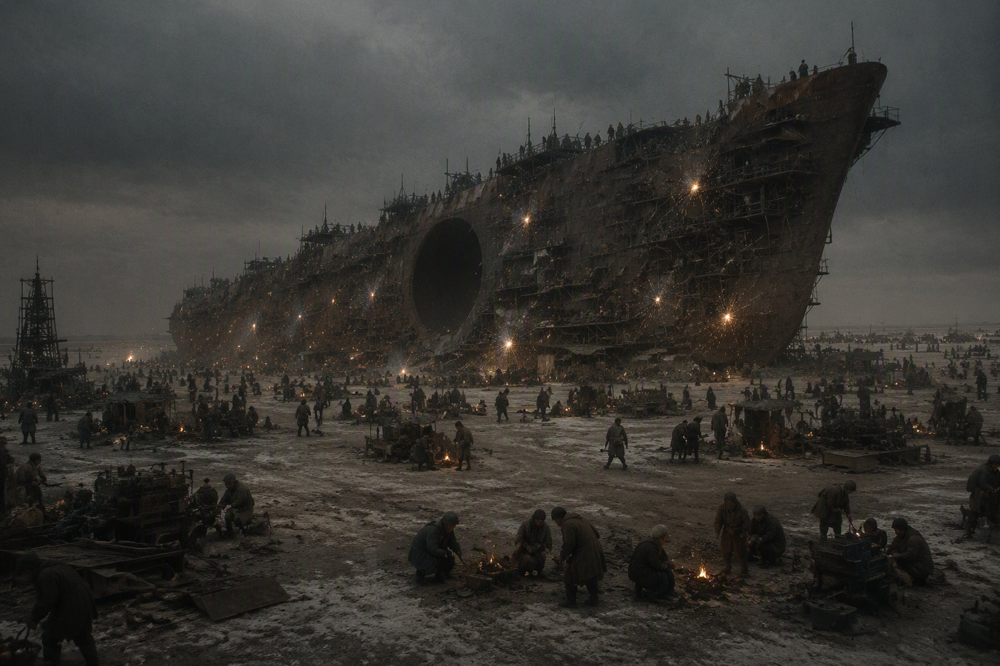
船坞不是坞。
它是一片盐漠。
船在坟场边上立起来。
因为它必须在那儿。那十七艘船的骨头都在那儿，一块板子重几百斤，我们没有车，没有路。我们只能在它旁边把它拼起来。
我们清了三十公顷的盐壳，铺上一层压实的碎铁，把那块地弄平。
那块地，就是船坞。
造它的人，最多的时候是三百七十个。
三百七十个人里，有两百多是石板下来的。他们一辈子在地下，第一次上地面就是来拆船、来焊铁。
他们大部分人，在两年零四个月里，一直住在那堆铁里面。
森把图画在纸上。
它画了很多张。它把船分成一层一层，一层一层分成一段一段，一段一段分成一块一块。
每一张纸都贴在木板上，木板立在那一段的旁边。
我们的活儿，就是照着那张纸，把那一块弄成样子。
我们没有吊车。
我们有三百七十个人。
可我们还缺一样东西：水。
造船的两年零四个月里，盐漠上没有水。所有的水都是从聚居地运来的，一天两趟，一趟二十公里。
运来的水是冰，化了才能喝。
我们一天一人一百五十毫升。
做重活儿的人多一点，两百。可最重的那种活儿，爬到三十米上面拉绳子，两百也不够。
有一个办法，是我们自己想出来的。
干活儿的人，在上去之前，含一口水在嘴里，不咽。含着干。
干完下来，才咽。
那一口，是把"我马上就有水"这件事先赊给自己。
一块板子要上去，就搭一个架，人爬上去，从上头用绳子拉，从下头用杠子顶。
爬到三十米高的地方，风一吹，人跟着晃。有一次风大，我们从上面掉下来两个。
一个死了。一个摔断了腿，后来那条腿保住了。
焊是很要紧的活儿。
在灰星上我们会焊。我们要焊炮管，焊铁壳，焊储水池。
那时候我们焊东西，是为了让水不漏，让炮不炸。
现在我们焊的是一条船。
森说，这条船上一共有一百四十万米的焊缝。
一百四十万米。
我们三百七十个人，两年零四个月。
船坞不是一座屋子。
船坞是把整个聚居地搬到了盐漠边上。
十七艘船拼起来的地方，离聚居地一百四十公里。我们不能天天走路，就住在盐漠上。
第一年，我们住帐篷，皮子搭的，风一吹就响。
第二年，我们挖了地窝子。地窝子一半在地下，一半用船的板子挡住风。
第三年，船坞边上，有了一条街。
那条街不长。两边是几十个地窝子，中间是一条踩出来的路。
路上有一样东西，是灰星上从来没有过的。
一个铺子。
铺子里卖热汤。汤是绒苔和穴獾骨头熬的，一份一百毫升水。
开铺子的是一个女人，姓田。
她男人是三湖那年死的。她带着一个十来岁的孩子，从南边过来。
她说她不干别的，她会熬汤。
她那个铺子，是全聚居地唯一一个不换水的地方。
你去喝汤，不要水。
只要你在那儿坐一会儿，跟她说说话。
她说，一个人喝汤，是喝汤。两个人喝汤，是过日子。
船坞上的人，来自三个地方。
我们聚居地的，北坳投过来的，还有西边白漠剩下的。
白漠剩下的人最少，也最不好过。
三湖那一仗，白漠垮了。活下来的人没有地方去，一部分跑到了我们这儿。
他们来的时候，身上什么都没有。
他们干活是最狠的。
不是因为感恩。
是因为他们知道，一个没有井的地方，人是怎么没的。
我后来常常想起那条街。
那条街上，晚上会点灯。绒苔混着穴獾油的灯，一盏一盏，排成一排。
风大的时候，灯全灭。
风停了，又全亮起来。
八百年里，灰星上从来没有过一条街。
我们在造那条船的时候，造出了第一条街。
那些日子里，最要紧的一班是夜班。
夜里冷，盐漠上的风能割人。可夜里有一个好处：焊缝看得清。焊枪一亮，那道弧光照在铁上，哪儿有缝，哪儿没焊透，一眼就看得见。
夜班的人爬在船骨架上，一盏一盏的弧灯，从上到下，从左到右。
从远处看，那一整片盐漠上像有一艘很大的船在燃烧。
死了二十三个人。
里头有一个人，叫贺石头，三十一岁。
他是个焊工，从石板下来的。他焊得好，他爹在石板里就是焊工。
他是从十米高的地方掉下来的。他当时在焊一道横缝，安全带有人帮他系过，可那天的风太大了。
我们把他抬到地上的时候，他还有气。
他跟我们说的最后一句话是：
"缝还没焊透。"
十一个是从高处掉下来的。
五个是被压的。
四个是烧的。
三个是病死的。石板下来的人，上到地面之后，有很多人撑不住。
我们把那二十三个人烧了。
这一次我们有柴。盐漠边上长着铁刺灌，跟灰星上的一样。
我们给他们一人打了一块牌，牌上都刻着名字。
第二年夏天，我在船的中段，站在一块半焊好的板子上，往南看。
南边是盐漠。
再往南是冰原。再往南，是灰星的北极。
我们在灰星上，从来不知道"南边有什么"。
因为走不到。
我站在那儿的时候，钉子在我旁边。
我说："钉子，你看见没有。"
他说："看见什么。"
我说："船。"
他说："看见了。"
我说："它长得像什么。"
他想了一会儿。
他说：
"像一个补丁。"
他是对的。
那艘船就是一块补丁。
它身上有十七种深浅不一的铁，有几百处的补丁，有蜈蚣一样的焊缝。它没有窗，只有中段那一个圆孔。
它丑。
它是我这辈子见过最好看的东西。
第二年冬天，船的外形出来了。
那天早上天没亮，我爬上最高的一段，往下看。
它躺在盐漠上，长三百二十米，很安静，像一条被搁在岸上的、很大很长的、睡着的东西。
天慢慢亮起来。
光从东边过来，先照在它的尾巴上，然后一点一点往头上走。
它整个亮起来的时候，我听见底下有人喊。
喊的人是石板下来的一个老头，六十多岁，一辈子没上过地面。
他喊的是：
"它站得住！"
那天晚上，森通过喇叭说了一句话。
它说：
"现在开始算人。"
我们那时候还不知道"算人"是什么意思。
后来知道了。
它的意思是：这条船上，能放下多少个活人。
森算了十九天。
第十九天，它说：
"一千二百。"
那天晚上，我们三百七十个人站在船底下。
有人提了一件事：这条船叫什么。
有人说叫"岸"。有人说叫"灰星二号"。有人说叫"活下去"。
后来是一个石板下来的老太太说的。她八十二岁，是那群人里年纪最大的。
她说：
"叫'回'。"
我们说：回什么。
她说：
"回不去，也叫回。"
我们没有用那个名字。
因为森说，船不需要名字。
它说："你们叫它什么，它都不会答你们。"
它说："你们要叫，就叫它'我们'。"
后来我们一直没给那条船起名字。
我们只说"船"。
那时候，灰星上还剩两千一百个人。
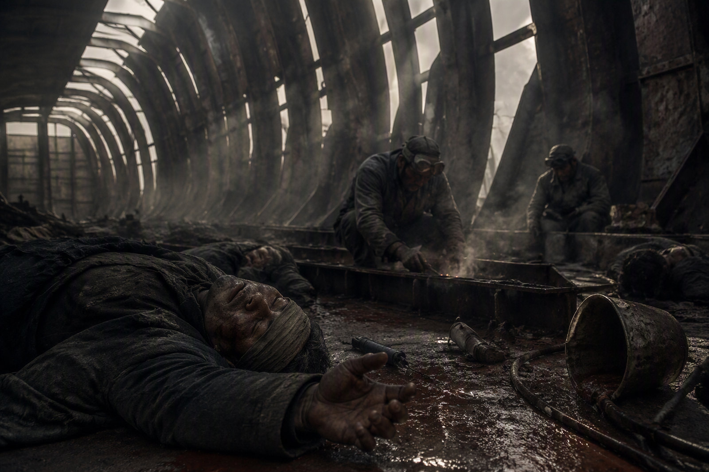
第一版名单是第四十天贴出来的。
三百七十个名字。
因为船还在造，先定第一批上船干活的人。
名单贴在石板的公告板上，一张纸，用炭写的。贴出来的时候是早上，到了中午，纸上就被人摸得发黑。
有人在名单上找自己的名字。找到的站着，没找到的也站着。
没有人大声说话。
那三百七十个名字里，有钉子。
我去告诉他的时候，他正在院子里削一根木头。他现在削东西削得很慢，只有一只手，另一只手得扶着。
我说："名单出来了。有名字。"
他说："我知道。"
我说："你上去看过？"
他说："我没去。"
我说："你怎么知道。"
他说："森问过我一个事。"
我说："它问你什么。"
他把木头放下。
他说："它问我，老马的编号。"
那天下午，他坐在那儿，笑了很久。
他说："我这辈子记不住自己的编号。"
他说："我记住了老马的。"
他说："因为我给他打了那块牌。上面写'编号不详'。"
他说："我打完那块牌，回去翻了三天册子，才把他的编号找出来。"
他说："我没跟别人说。也没在牌子上补。"
他说："因为那块牌已经烧给他了。"
他抬起头看我。
他说："砾子，那台机器，它要的就是这个。"
但是有人不服。
不服的人是从北坳来的。
北坳垮了之后，剩下的人往南走了两个月，走到我们这儿。那时候我们也没得选，就收了。
三年下来，他们跟我们一样饿，一样冷，一样咳。
领头的那个人，外号叫老鸦。
老鸦说：船是灰星的，不是森挑的。
老鸦说：抽签。
老鸦说：要么抽签，要么谁都别走。
他们占了船坞。
森通过无线电跟他们说话，说了三天。
三天里，老鸦回了同一句话：
"抽签。"
第四天，军部下令：收复船坞。
我这一辈子打过很多仗。
三湖那一次，是为了水。
坟场这一次，是为了座位。
我说过，三湖那一仗，我不打算细讲。坟场这一仗，我更不想讲。
因为我们打的是自己人。
我们在船上打的。
我们在一艘还没有造好的、用十七艘船的骨头拼起来的、架在盐漠上的铁架子里打的。
那些隔舱还没有封，那些管道还没有接。人从这一层能看到上面那一层，从上面那一层能看到下面那一层。子弹穿过一个空管子，会从另一个地方出来。
我们打了三天。
三天里，死了一百四十一个人。
其中有一半，是被自己人的跳弹打死的。
第二天，森停了。
它停得很干脆。
所有的机器一起停了。
焊枪的弧光灭了，吊车停了，切割机停了。整个船坞一下子安静下来。
然后船坞上的五个喇叭一起响。
森说：
"你们打。"
"我不干了。"
"你们打完了，再来找我。"
然后它把无线电也停了。
那句话，比任何一支部队都管用。
打到第三天傍晚，两边的人自己停了。
不是因为打不下去。
是因为所有人都同时明白了一件事：我们在为一台机器打死自己，而那台机器已经不看了。
钉子是在第二天晚上出的事。
那天夜里下着很小的雪。我们守在三号隔舱。
对方的火力点在上面那一层。他们要下来，只有一道梯子。
钉子坐在那道梯子底下。
我说："你上去。"
他说："我上不去。"
他拍了拍那条空裤腿。
我说："那我守。"
他说："你过来。"
我走过去。
他把一样东西塞到我手里。
是那块铁片，从他左眼窝里取下来的那块，磨得很亮，边缘卷着。
他说："你拿着。"
我说："你别来这一套。"
他说："砾子。"
我说："我不拿。"
他说："坐下来。"
我坐下来了。
他跟我讲了一件事。
他说，他左眼是怎么没的。不是打仗。
是他十九岁那年，在冰上拖一个受伤的人，拖了六公里。风把眼睛冻住了，他没管，因为手上有个人。
他说，那个人后来活了。
他说，那个人现在就在石板里，姓崔。
我想起了老崔。
我说："老崔？"
他说："嗯。"
他说："我从来不跟人说这个。"
我说："为什么。"
他说："因为说了像在讨债。"
第三天早上，天快亮的时候，上面那层的人冲了一次。
他们冲下来，我在梯子底下。
我打了两枪。
第三枪没有打出去，我的枪卡了。
我把钉子往后面推。
他没有往后面去。
他站起来了。
他一条腿，撑着那辆车，站起来了。他从怀里掏出枪，朝梯子上打。
他打了七枪。
他打空了弹匣。
然后他倒下去了。
他中了两枪。
一枪在胸口，一枪在肚子上。
我把他拖到隔舱里，用手按住他胸口。血从我手指缝里出来，热的，一会儿就凉了。
他看着我。
他说："砾子。"
我说："在。"
他说："我跟你说过，我活了三十五年，没站满过一个雨季。"
我说："你别说话。"
他说："今年……"
他说："今年我想站一次。"
他的声音越来越小。
他说了最后一句。
他说：
"你到了那个地方。"
"找个软的。"
"把我跟小雀，埋在一块儿。"
我说："我带你去。"
我说："我说到做到。"
第四天，双方停火。
第五天，老鸦一个人走到船坞中间，把枪放在地上。
他说："我不抽签了。"
他说："让它挑。"
他说："它挑谁，谁走。剩下的人，我带着。"
那二百零七个人，我后来一个一个记下来了。
不是我记得他们的名字，是我记得他们的位置。
我们那一层住的是一百四十个人。仗打完之后，回来六十一个。
空出来的铺位，我们留了三个月没动。
三个月里，谁都不肯睡那几个位置。
后来森说了一句话。
它说：把那些位置填上。空着的位置，会让人一直站在那一天。
它说：填上，不是忘。
它说：是替他们睡。
那二百零七个里，有九十几个是船坞上的工人。
他们不拿枪。
他们是被夹在中间死掉的。
有一个老头，姓贺。他是打马蹄铁那个贺铁匠的爹。他八十二岁，是船坞上年纪最大的。
他是怎么死的，没有人看见。
我们只找到他的鞋。
一只在船坞的东边，一只在西边。
停火那天，我们把死者分了两处烧。
一处是船坞的人，一处是当兵的。
烧了两天两夜。
烧完之后，我们没有给每个人打牌子。铁不够，牌子不够。
我们打了一块大的。
那块牌子有大半张桌子那么大，上面刻了二百零七个字符。
不是名字，是编号。
有编号的刻编号，没编号的刻一个横道。
那块牌子，后来焊在船的里面，舱壁最厚的那一层。
它现在在十一光年以外。
那场仗，一共死了二百零七个人。
灰星上最后一场仗，就这么结束了。
它甚至没有分出胜负。
停火那天晚上，无线电通了。
森的声音从喇叭里出来。
它说：
"打完了？"
没有人回答。
它说：
"那我继续。"
机器的灯一盏一盏亮起来。
焊枪又亮了。吊车又动了。
船，接着造。
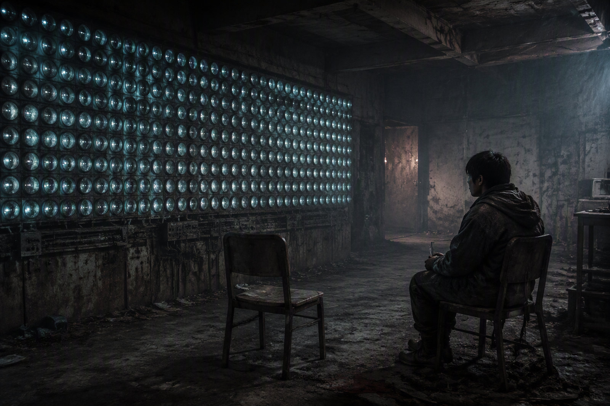
森又见了两个月的人。
两个月里，它见了一千六百多个。剩下的那些，它说不用见了。
最后一张名单贴在公告板上的时候，是全灰星的人一起看的。
一千二百个名字。
那天，名单前面站了很多人。
有人找到自己的名字，就退到一边站着。有人从头找到尾，再从尾找到头，然后退到另一边站着。
两边的人都站着，谁也不看谁。
那天没有人哭。
在灰星，哭是要花力气的事。力气要留给更重要的地方。
我是第一百一十七个进去的。
那天我身上带着三块铭牌。
一块是灰雀的，缝在胸口。
一块是老马的。那是钉子后来跟铁匠要的，多打的一块，一直挂在他自己的脖子上。
一块是钉子的。他是三天前火化的，是我烧的。我守了一整天。
我把三块牌都摆在机房的台子上。
森说："你来了。"
我说："我来了。"
森说："你带了东西。"
我说："三块牌。"
森说："我看不见。"
我说："我知道。"
我说："我就是要让你知道它们在这儿。"
森沉默了半分钟。
然后它问了那个问题。
它问的是：
"你这辈子，最舍不得的，是一件你分不清真假的事。"
"你说说。"
我说："我做过一个梦。"
我把那个梦，从头到尾讲了一遍。
我讲得很细。
我讲天是浅的，像被水洗过。
我讲那些立着的东西有多高，风一过整片都在动，是绿的。
我讲脚下是软的，是活的，踩下去会陷一点。
我讲前面那个很大的东西，蓝的，一直响，一遍一遍回过头来。
我讲我走进去，它是凉的。
我讲我张开嘴，它是咸的。
我讲我在里面游，手脚都是自由的，我一划，能走很远。
我讲我抬起头能看见光，一条一条的，在动。
我讲我沉下去能看见底，白的，软的，上面长着很多别的东西，绿的，红的，像扇子的，像手的。
我说完了。
森很久没有说话。
我说："你不信。"
它说："我信。"
它说："沈砾，我问你一个问题。"
"你在那个地方，有没有害怕。"
我想了想。
我说："没有。"
它说："为什么。"
我说："因为那个地方好像认识我。"
机房的灯一下子全亮了，亮得晃眼。
它平时算东西的时候会抽走石板的电，把灯抽暗。这一次它没有抽，它把电全放出来了。
灯亮了整整七秒钟。
亮完之后，它说：
"你不是在做梦。"
我说："那我在干什么。"
它说："你在读一份很旧的档案。"
我说："什么档案。"
它说："我不知道。"
它说："我的档案里，没有这一份。"
它说："这就是我要你的原因。"
过了一会儿，它又说：
"沈砾，你再说一遍。"
"你梦里的风，是什么味道。"
我说：我不认得那个味道。
我说：它不是水腥味，不是铁锈味，不是血味。它有一种潮湿的、发咸的、带一点甜的。
它说：
"再讲一遍那棵树。"
我说：那棵树很高。
我说：它整片整片地动。
它说：
"不对。"
它说：
"你讲的是很多棵。"
它说：
"我问的是，一棵。"
我愣住了。
我说：我没见过一棵。
我说：我梦见的是一大片。
它说：
"不对。"
它说：
"你见过一棵。你每次梦到它，都是同一棵。"
它说：
"你只是没有注意。"
那天，我在那台机器前面站了两个钟头。
我一直以为我的梦是一片糊的东西。
那天我才知道，那片东西的中心，有一棵具体的树。
它站在那儿，我看过它很多次。
我从来没有数过它的枝。
那天下午，林知遥来了。
她拿着一沓纸。她把纸放在台子上，纸上画着一些像树根一样的东西。
她说："我跟你讲一件事。你听完，可能会觉得我疯了。"
我说："讲。"
她说：
"第一批人降下来的时候，第一年就死了三十万。"
"那时候没有地窖，没有保温，没有水。他们带着伤，带着辐射，带着船摔下来的火。"
"他们知道自己活不长。"
"所以那些人做了一件事。"
她停了一下。
"他们开始讲故事。"
"他们把所有他们觉得重要的东西，编成话、编成歌，讲给孩子听。一天讲，两天讲，讲到孩子闭着眼也能背。"
"因为话能活。"
"话不用电，不用铁，不用水。"
"话只需要有人肯说，有人肯听。"
她说：
"你奶奶的奶奶，从她的奶奶那里，听过一些东西。"
"那些东西，是从地面上一路带下来的。"
"它们走过很多嘴，走过很多年。"
"它们变了形，它们掉了很多。"
"但它们没死。"
她抬起头看我。
她说：
"我们管它叫，传下来的梦。"
我说："那梦里的地方，在哪里。"
她说："不知道。"
我说："那它真的存在吗。"
她说："不知道。"
我说："那你们为什么还要去。"
她笑了。
她七十多岁了，笑起来的时候，脸上那些皱纹全都往上走。
她说：
"因为那是我们唯一一个，从别的地方带来的东西。"
她说：
"沈砾，你想想。"
她说：
"我们在这颗星球上，是空着手来的。"
"我们的祖宗把所有的东西都摔碎了：船、工具、房子、田。"
"我们什么都没有留下。"
"只有一样东西，他们没有摔碎。"
"就是他们嘴上说过的那几件，关于'家'的事。"
我站在那儿，没有说话。
喇叭响了一下。
森说：
"沈砾。"
我说："嗯。"
它说："最后一件事。"
它说：
"我读着一堆铁，读了四百天。我读出了航线、结构、能量、坐标。"
它说：
"我读出了所有的数字。"
它说：
"可是我不知道我要去哪里。"
它说：
"那些数字里，没有一个是'海'。"
它说：
"现在我知道了。"
它说：
"我要去的，是你梦里的那个地方。"
我愣了一下。
我说："你要去，是因为我们想回去？"
它说："不是。"
它说："是因为我自己想看。"
它说：
"我醒了两年，只见过灰色。"
它说：
"我也想看一眼蓝的。"
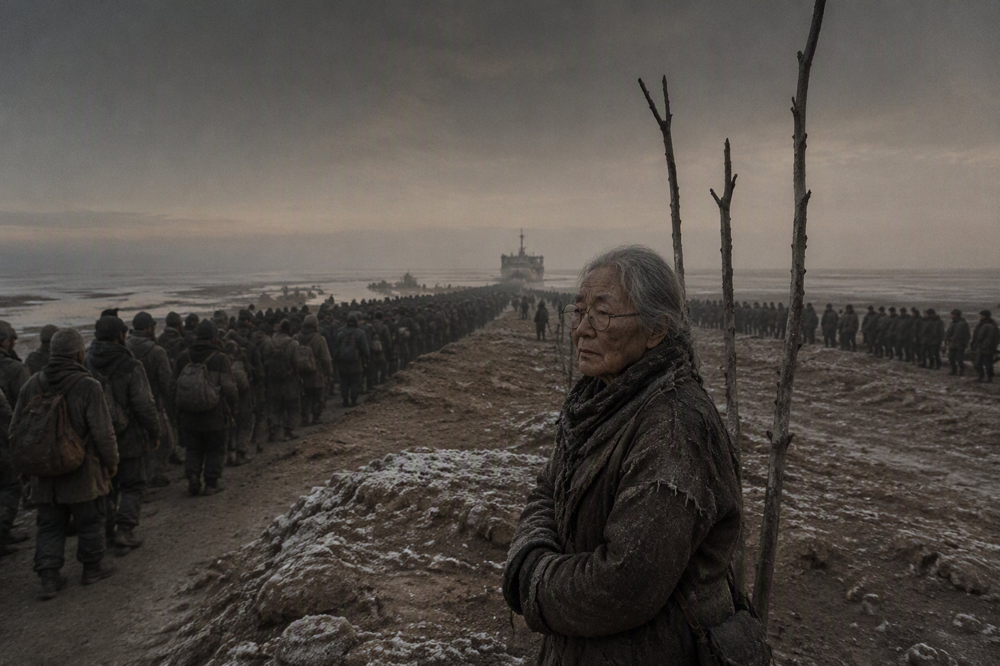
船造了两年零四个月。
它是在盐漠上立起来的。
我见到它的第一天，想到了一个词：坟。
因为它就是一整片的铁，焊起来的。十七艘船的骨头，拼成一个新的身体。有的地方是银的，有的地方是黑的，有的地方锈成了褐色。焊缝像蜈蚣一样趴在它身上，一条压着一条。
它长三百二十米。
它没有窗。
它身上只有一样东西，是别的船都没有的。
在它中段、最厚的那一层，森让人开了一个圆孔。
圆的。
直径大约三十公分。
有人问：为什么只开这么小一个。
森说："这是给人看的。"
上船的东西，装了四十天。
四万升水，冻成冰，一块一块码在舱底。
矮麦的种子，三十二公斤。这是灰星上最后一点能活的种子。
四千一百册书。石板图书馆里所有的书，一本不留，全上船。
还有一箱标本：绒苔、铁刺灌的一片干皮、一只穴獾的头骨、一块石肺。
还有两千多块铭牌。
凡是活着的人带来的铭牌，全都上船。不是带走一两个人，是带走全部。这是森定的规矩。
它说："活人的重量我要算。"
它说："死人的重量，不算。"
出发的日子定在第七个月的第一个日头。
雨季的第一天。
那天早上，天是灰的。
没有下雨。
自从红雨那一年起，灰星就再也没有下过真正的雨。这七年里，天上偶尔会落下来一点湿的东西，落在地上就没了。
我们还是把出发的日子定在这一天。
因为这是这颗星球上，唯一一个跟"活"有关的节日。
要走的人排成一队，从聚居地走到盐漠边上。走七天。
要留的人，跟着走了三天。
第三天，他们停在一个叫"三棵"的地方。那里曾经长过三丛铁刺灌，现在只有三块石头。
按照规矩，送到三棵，就不能再送了。
再往前是盐漠。留的人没有鞋，没有柴，走不到盐漠。
那三天，我们说了很多话。
其实也没说什么。
要走的和留下的，都是从小一起长大的。一起抢过水，一起埋过人，一起在三湖的冰上趴过三十个小时。
话说到这里，反而没什么可说的。
我印象最深的是两个老头。
他们坐在一辆板车上，抽一种用铁刺灌的皮卷的烟。抽了一路，一句话没说。
到了三棵，一个站起来，把烟掐了，说：
"我先走了。"
另一个说："嗯。"
然后他们分头走了。
我们没有告诉留下的人，那艘船上有多少位置。
不是瞒，是说不出口。
两千一百个人，一千二百个位置。
剩下那九百个要去哪儿，大家心里都知道：留在原来的地方，接着挖渠，接着过十九个月的冬天。
出发前的第七天，水头做了一件事。
他把聚居地剩下的水全部倒出来，重新分了一次。
分的方式很简单：留下的人，每人每天多五十毫升。
他说，走的人路上有船，船上有水。留下的人，什么都没有。
这也是算术。
留下的那批人，推了一个头。
那个头叫老鸦。他六十多岁，原是北坳的人，后来投过来的。他有一条胳膊是废的，抬不起来。
老鸦这个人，不识字，但记性好。
他记得聚居地八百年来每一口井的位置，记得每一场仗死了多少人。
水头走了之后，是他领着剩下的人。
他上任第一天，做了一件事。
他让人把广场上那面墙刷平了。
那面墙原来挂着牌子，死的人的牌子，一块挨着一块。
他让人在牌子底下，用炭写了一行字。
那行字是：水是大家的。
他说：以前是水头一个人说，现在谁要说话，就站在这儿说。
老鸦后来活了七十一岁。
他没有等到我们的消息。
那面墙，一直在那儿。
老鸦送我们到三棵。他跟我握了握手，握得很用力。
他说："你上去之后，别回头。"
我说："为什么。"
他说："回头的人，走不远。"
我说："那你们怎么办。"
他说："我们接着活。"
他说："你们要是找着那个地方，给我们发个信。"
我说："我们发。"
他说："要是找不着，也别发。"
老崔也留下了。
他要下去，回暗河边上去。他说底下还有二十几个人，他得回去。
他走之前，把我拉到一边。
他说："你那个梦，别跟底下的人说。"
我说："为什么。"
他说："底下的人，没梦。他们生下来就在黑里。他们连星星都没有。"
他说："你要是告诉他们，上面有一个地方，是蓝的，是软的……"
他没往下说。
我说："那我该说什么。"
他说："你就说，上面很冷。"
老盲来了。
他是被人背上来的。
他在底下待了四十年。上一次见到天，是他三十出头的时候。这一次上来，他一句话都没说，就那么仰着脸，在人背上，仰了整整一路。
到了三棵，他被人放下来。他站不稳，扶着那块石头。
他抬头看天。
那天是白天，天是灰的。什么都没有。云，风，一点很淡的光。
他看了很久。
然后他伸出手，指着天上。
他指的地方什么也看不见，因为那是白天。
他嘴里说了一个词。
那个词，谁都听不懂。
他把那个词说了三遍。
然后他低下头，慢慢坐下去，坐在那块石头上。
林知遥送我到最后一刻。
她七十二岁了。她一直站在三棵那儿，没有往前一步。
我说："你上船。"
她说："名单上没有我。"
我说："森那儿我去说。"
她说："名单上本来有我。"
我看着她。
她说："是我划掉的。"
我说："为什么。"
她把一个东西递给我。
那是一个信封。纸做的，黄色的，很旧了，边角磨得起了毛。
上面写着四个字：
到了再看
我说："这是什么。"
她说："这是我这一辈子，唯一想证明的一件事。"
她说："你替我拿着。"
我说："你自己拿着。"
她说："我拿不动了。"
她把信封按在我手上，按住。
她的手很轻，很小，很凉。
她说：
"沈砾，你听我说。"
她说：
"我这辈子，一直在证明一张纸上的蓝色不是假的。"
她说：
"我用了五十年。我把所有的算法都用上了。我算出来的结论是：那张纸太旧了，它褪色了。它本来应该更蓝。"
她说：
"可是我没见过。"
她说：
"我要看一眼真的，才算数。"
她说：
"你替我看。"
我说："你自己去看。"
她摇头。
她说："我七十二了。船上一千两百人。我要上去，就得有一个人在下面。"
她说："下面还有一个姓崔的，他要回去看他那些人。"
她说："下面还有一个老鸦，他要带着六百多个人接着活。"
她说：
"我这辈子做过很多算术。"
她说：
"这一道，最简单。"
我们分开的时候，她站在三棵的那块石头上。
她比石头高不了多少。
我走了很远，回头看了一次。
我真的回了头。
老鸦说回头的人走不远。
他大概是对的。
可是那一次，我还是回了头。
我看见那块石头上站着一个很小的人。
她已经坐下来了。
她坐在石头上，等着一个很长很长的消息。
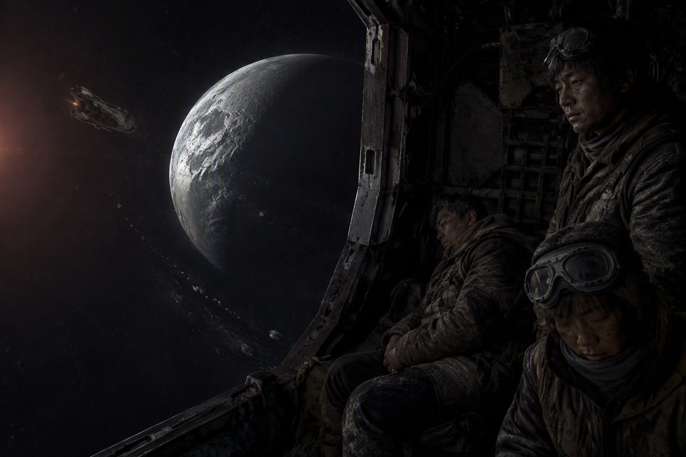
上船用了两天。
船里面是黑的。
不是没有灯，是灯不够。森把所有的电都留着，留到起飞那一刻。所以我们上船的那两天，用的是头盔上的灯。
一千二百个人，一人一个格子。
格子是用船板焊的，长一米八，宽六十。里面铺一层毡，毡上再铺一层各自的皮衣。人躺进去，膝盖顶着前面那个人的背。
每个人格子上有一个扣，两根带子，交叉着。森说，起飞的时候要用。
上船的那两天，人在船里做一件事：写字。
每个人在自己格子边上那块铁上，写自己的名字。
有人写名字，有人写编号，有人写一句话。
老孙写的是：我喝够过。
石板下来的一个人写的是：我看过蓝的天。
有一个老太太，七十多岁，不识字。她让别人替她写。她说的那句话是：
"我娘叫杏。"
替她刻字的人在铁上刻完之后，她把脸贴上去，摸了很久。
铁是凉的。
水在最底下那一层，冻成一块一块的冰。那些冰要供一千二百个人喝。
森把每天的份量算好了：一百五十毫升。
比灰星上的配给还多一点。
有人问：为什么多一点。
森说："因为你们不用再干活了。"
起飞的地方，在盐漠北边。
那是一条三公里长的轨道。不是造出来的，是拼出来的：把灰星上所有的电磁炮、所有的线圈、所有能绕的铜，全部拆下来，一根一根铺在三公里的盐壳上。
三百二十七个线圈。
这是我们这颗星球八百年来攒下的全部工业。
我们把它们全用了。
用完之后，灰星上再也不会有电磁炮了。
老鸦他们，以后打仗只能靠火药。
起飞前一夜，我一个人出去过一次。
不是走出聚居地，是走出船坞，站在外面。
那天晚上没有风。
灰星上很少有这种天。它是静的，冷得也静。你呼出来的气会在你面前停一会儿，然后落下去。
我站在那儿，看南边。
南边有一条很淡的亮，那是盐漠。再往南就什么都没有了。
我十九岁的时候，站在聚居地最高的那块石头上，也是往南看。
那时候我以为，南边有个东西。
后来我知道，南边什么都没有。
那个东西不在南边。
那个东西在往上。
我低头，看脚底下的地。
地是硬的。我拿靴子后跟，在上面跺了两下。
这个动作我做了一辈子。
在灰星上，人走路要试地。试一次，两次，一辈子。
我那天晚上试了很多次。
我到现在还记得那个声音。
回到船坞的时候，门口有人。
是言。
她一直站在那儿，身上全是霜。
她说："你去哪儿了。"
我说："出去站了一会儿。"
她说："我找了你一个钟头。"
我说："你找我干什么。"
她说："没事。"
她说："我就是想跟你说一句话。"
我说："你说。"
她想了很久。
她说："我想不起来了。"
我说："那就进去吧。"
她说："嗯。"
我们进去的时候，她在我后面，又说了一句。
她说：
"我们上去以后，要是没有地方去呢。"
我说："有。"
她说："你怎么知道。"
我说：
"因为它算过。"
她说：
"它算过，就等于有吗。"
我没有回答。
因为我不知道。
那天晚上很冷。她的睫毛上结了霜。
那是我们最后一次，站在灰星的地上。
森通过喇叭跟全船讲话。
它说的是：
"明天，我们要用掉这颗星球上最后一点电。"
"用完之后，石板会黑掉。聚居地会黑掉。下面的人，以后要点苔藓灯。"
"他们知道这件事。他们同意了。"
它说：
"我算过。"
"起飞有百分之七的可能失败。"
"如果不飞，你们还有四年。"
"如果飞，你们今天走。"
它说：
"这是最后一次问了。"
"有人要下去吗。"
一千二百个人，没有一个人动。
不是没有人怕。
是因为在灰星，人从小就知道一件事：
恐惧不能换水。
起飞是那天上午十点。
我躺在我的格子里。我右边是一个从北坳来的小孩，八岁。他一直在哭。他娘在他左边的格子里，够不着。
我伸出手，握住了他的手。
我把头上的扣扣紧。
森说："三。"
森说："二。"
森说："一。"
我说不出那是什么感觉。
不是痛。
是一只手。
有一只非常大的手，从下面把我按住了。它从脚底开始按，一直按到胸口。我的肋骨在响，我的内脏在往上顶，我的舌头被塞回喉咙里。
我听不见声音。我听不见任何声音。
我只能看见一件事：我的格子里那些焊缝，全都在抖。
抖得像要裂开。
不知道多久。
可能只有几分钟。可在那几分钟里，时间不是我的。
然后那只手松开了。
我整个人从毡上飘起来了。
我像灰一样，飘在格子里。
有人吐了。
吐出来的东西不往下落，它在空中散开，一小片一小片地停在别人的脸上、舱壁上。
我们不知道怎么处理这个，森也不知道，它只知道理论。后来是我们自己想出来的：用布。一人发一块布，吐在布里，把布攥紧。
头三天，我们用掉了两千多块布。
第四天，人不吐了。
第五天，有人开始笑。
那种笑是没有道理的。人飘在半空，用手往舱壁上一推，就飞出去老远。有人一头撞在别人身上，两个人抱着在舱里转圈。
那些生在船上的孩子，比大人适应得快得多。他们本来就没见过"下"是什么。
有一个三岁的小孩，第一天就学会了飞。他两只手往后一划，整个人就出去了，从头舱一直飘到尾舱，撞在舱壁上，弹回来。
他一边弹一边笑。
他娘抱着柱子，脸是白的。
我右边那个八岁的孩子还在哭。他娘在他的格子里，够不着。
我一直握着他的手。
等他睡着了，我才把扣子解开。
我像在水里一样，慢慢从格子里爬出来。我扶着舱壁，一步一步往前挪。
我要去那个圆孔。
那一层有三十几个人，也都是往那个方向去的。
没有人推，没有人抢。
所有人排着队，一个一个走到那个圆孔前面，看一会儿，然后让开。
轮到我的时候，是第二十七个。
我把脸贴上去。
我看见了灰星。
它是灰白色的。
它很小。
它比我想象的小得多。它就是一块石头，圆的，上面有几道很浅的皱，像一个人冻了太久的手背。
我在那个小东西上活了三十六年。
我所有的仗，都在那上边打。
我所有的死去的朋友，都在那上边。
三十万人也好，两千人也好，在那上面都只是很小的一点。
我看了很久。
然后我做了一件事。
我把胸口那个口袋拆开了一点。
我把灰雀的铭牌掏出来。
我把那块铁举到圆孔前面，对着一片黑，对着那颗很小的、灰白色的球。
我说：
"小雀。"
"你看。"
森说，起飞的时候，死了十一个人。
六个老人，是他们自己要求的。他们说，能活到看一天外面，就够本了。
三个是在加速里没挺过去的。心脏。
两个是从格子里滚出来，撞在舱壁上。
死了的人，被抬到最底下一层。
森问我们要怎么办。
林知遥不在船上。
最后是我们自己商量的。
我说：把他们烧了，压成牌。
老鸦他们还在下面，我们没有柴。
最后我们做的是：把他们放在最底下的那个舱里，关上门。
在那个舱门上，我们刻了一行字。
刻的是：
他们看过外面
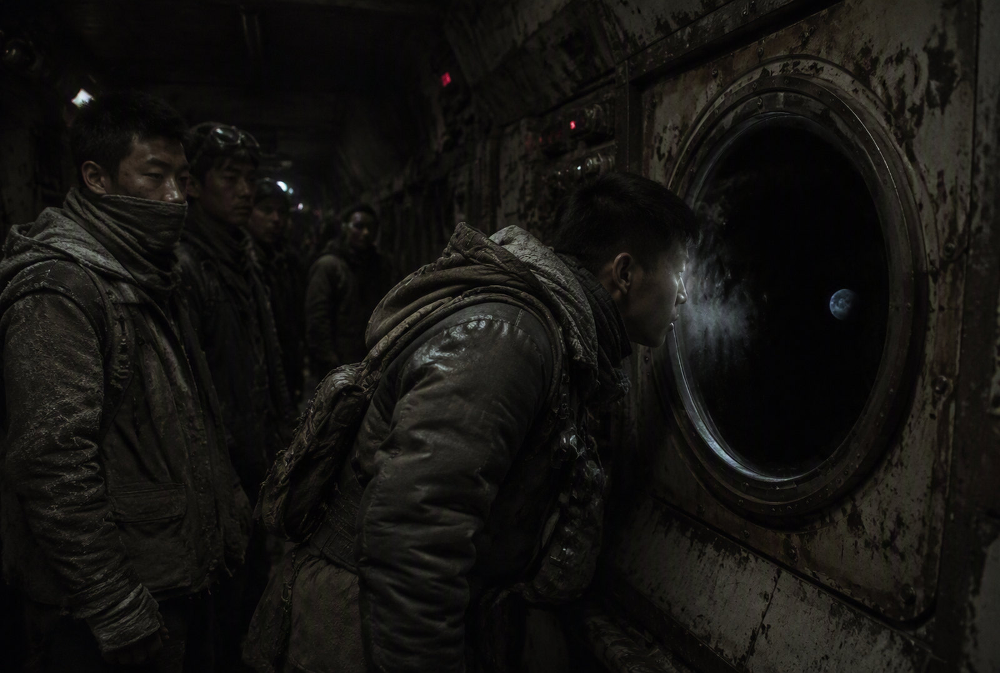
船上有三件事是从灰星带过来的。
一件事是水，一件事是那四千一百册书，还有一件事是排队。
每天早上，那一层的圆孔前面会排一次队。三十几个人，一个一个把脸贴上去，看一会儿，然后让开。外面大部分时间是黑的。有时候会有一颗很小的、很亮的点，从孔的这一头慢慢走到那一头，走完要二十几分钟。小孩子最喜欢看那个点，他们说那像一只眼睛。
森的工作是这样的。它要先算，算一次要三到八个月。算的时候，它把整艘船的灯降到最低，只留最要紧的几处，人就在暗里面过日子，跟当年在石板一样。算完了，它会说一句：
"坐好。"
然后就是那一下。那一下之后，船外面会换一片天。
我们有十一个候选。这是森从那堆灰里一点一点拼出来的。原来的星图上应该有几百个点，可它只读出了十一个，还都不完整。它知道大概的方向、大概的距离，别的什么都不知道。
它说："十一个。我们一个一个看。"
第一个是一块石头。比灰星还小，转得很快，表面是坑，没有大气，没有水，什么都没有。我们绕它转了两天。森说："不是这个。"
第二个是一颗很大的星球，棕黄色的，带着一条一条的环。它不是固体的，是气体，人在上面没有地方站。我们绕它转了四天。森说："不是这个。"
第三个到第五个也都是石头。有一个上面有很厚的冰，冰底下好像有东西在流。所有人都激动了很久。森探测了三个星期，最后的结论是：那底下是氨。
第六个是有水的。
我们从很远的地方就看见了它。它是蓝的。
那天全船一千多人轮流去那个圆孔。不是排队了，是挤。挤到最后，森把圆孔前面那一层的舱壁全部拆掉，让更多人能看见。
一整颗星球，蓝的，上面有白色的东西在飘，慢慢地转。我站在那儿一直站着，站到后来脚都不听使唤了。有人在我旁边跪下去，有人开始唱歌，唱的是《海》，唱得不成调，词也错。后来所有人都跟着唱。
我们绕了它十一天，森一直在测。
第十二天早上，它把我们全叫到喇叭前面。
它说："这颗星球有水。有很多水。它有大气，它的温度比灰星高得多。"
有人开始叫。
森说："但是。"
喇叭里那两个字出来的时候，全船就静了。
森说："它的大气里没有氧。它的表面辐射，是致死量的十九倍。它是空的。"
它说："它没有生命。一颗都没有。"
那天剩下来的时间，没有人说话。有一个女人坐在地上抱着膝盖，肩膀在抖。有个老头用手捶舱壁，捶了很多下，捶到手破了。
那是我第一次在船上看见人哭。在灰星，哭要花力气，力气要留给更重要的地方。在船上，我们有的是时间。
我们在第六个候选上待了十九天。我们没有地方可去，只是想多看一眼那个蓝的。
最后一天，森说："我要走了。"
我说："再等一天。"
森说："沈砾，等一天，就是烧一天的水。"
它说："喝水的人，是一千二百个。"
我没说话。船转了个方向，那个蓝的从圆孔里慢慢滑出去，滑到边上，滑没了。
那一年，我三十八岁。
船上是有秩序的。森定的秩序很简单：谁都不能进驾驶舱。
不是怕人弄坏东西，是怕人站在那个位置上，觉得自己能决定什么。驾驶舱里有一样东西，是全船唯一一个能看见外面所有方向的地方。森说，那个地方只放事实，想事情的地方在别处。
第一年，船长定了一条规矩：不准说"回去"，说一次，罚水。
第二年，那条规矩废了。不是不罚了，是所有人都说够了。人把一件事说上一年就会腻，腻了就不说了。
后来我们要说的是别的话。我们说，到了以后先干什么。有人说先睡一觉，有人说先脱皮衣，有人说先找水。只有一个人说：先看看天。
那个人后来死在了第十年。他死之前说，我这辈子就见过一片天，就是船外面那个黑的。他说，我这辈子就一个愿望，想看看有颜色的天。
第七个，第八个，第九个，第十个。
石头。石头。一块更冷的石头。一块离恒星太近、表面在烧的石头。
到第九年的时候，船上已经有了十一个小孩。他们是生在船上的。最大的那个五岁，他从来没有见过灰星，也从来没有见过那颗蓝的。他出生的时候，圆孔外面是一片黑。
那一层的人轮流教他们识字，教得最多的是我。我教他们认的第一批字里，有一个是"海"。
我说，这个字读 hǎi。
有一个孩子问我，海是什么。
我想了很久。我说：
"我不知道。"
我说："等我们到了，我告诉你们。"
第十年，人开始死。不是出事，是时候到了。
上船的时候有一百多个老人，十年过去，他们一个一个走了。船上没有土，没有火。我们把死了的人放在最底下那个舱里。那个舱后来有了三百多个人，他们的铭牌全部挂在舱门口那面墙上，挂了三百多块。
每次路过那儿，我都会停一下。
第十一年，我们去看第十个候选。它是一块石头，离恒星太远，比灰星还冷。它在黑里转了四个月。
森说："不是这个。"
那天晚上，喇叭响了。
森说："沈砾。"
我说："嗯。"
它说："我要问你一件事。你们在灰星上，有一个老人，上船之前，指着天说了一个词。"
我愣了一下。
它说："有人录下来了。"
我明白了，是营地里的记录，被书带上了船，又被森读了。
我说："老盲。没人听懂。"
森说：
"我听懂了。"
我说："是什么。"
森沉默了一会儿。它说：
"那是旧话，是那批船还在天上飞的时候，人说的话。"
它说："那个词的意思是：家。"
我站在那儿，半天说不出话。
我说："他四十年没上过地面。他是从哪儿学的。"
森说：
"不知道。也许他娘说过，也许他娘的娘说过。"
它说："也许在很深很深的地方，有一条线，一直没有断。"
它说："沈砾，你们的祖宗，把这颗星球上的星星画过一遍，他们给那些星星起了名字。其中一个名字，跟你说的那个词一样。"
它说："他们管一颗星星，叫'家'。"
我们没有再说话。
过了很久，我说："还剩几个。"
森说："一个。"
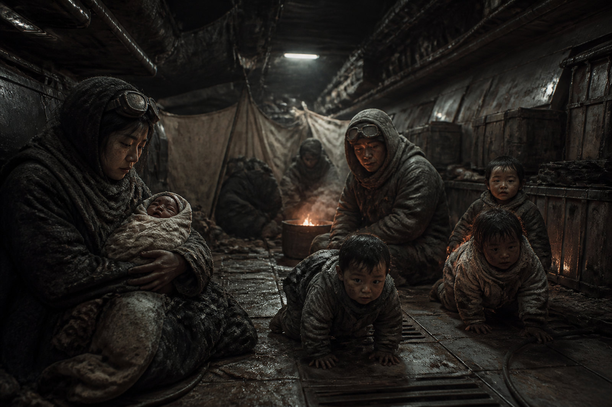
船上第十一年，我们已经忘了日子。
不是忘了过了多久，是忘了"今天是哪一天"。
在灰星，日子是有名字的。雨季的第一天，闭月后的第七天，三湖之后那一年，人知道自己在哪儿。在船上没有。船外面一直是黑的，船里面一直是同一盏灯。
我们后来定了一个办法：一个人专门记日子，在自己舱壁上刻道子，一天一道。他要是病了，别人替他刻。那条刻道子的墙，后来有四千多道。
船上的社会是这样的：三班。一班睡，一班管水，一班管别的事。一间学校，先生三个，学生最多的时候十七个。一间厨房，厨房其实没什么可做，我们的东西是冻干的和存的，煮开就行。一间医务室，一间死人房。
那几年，船上添了十一个孩子。他们一天都没有出去过。
他们不知道风是什么，不知道光会变，不知道"远"是什么意思。他们的世界长三百二十米，宽四十米。他们知道的"外面"，就是那个圆孔后面的一片黑。
他们起名字，是父母起的，起得很奇怪。有一个叫麦，有一个叫石，有一个叫绒。
他们爹娘起这些名字的时候，是想着灰星的地里那些东西。绒苔、矮麦、石头、冰。
那些孩子长大以后，会有一整天，站在一片真的地上，看着真的麦子。那时候他们才会知道，自己的名字是什么意思。
船上有一间屋子，是我们做教室的。教书的，是会写字的那几个。先是言，后来换了别人。
教的东西，是那四千一百册书。书不能老翻，纸一翻就脆，所以我们抄。抄一本，就有一个孩子记住一本。
有一年，一个孩子问言："书里写的那种东西，是不是真的。"
言说："哪一种。"
他说："书里说，有一种东西从上面落下来。它落到地上，地就湿了。它落到身上，身上就凉了。它落下来的时候，还会响。"
言说："那是雨。"
他说："我们不是每年都下雨吗。"
言说："那是我们下的。书上那个，是天下的。"
那个孩子想了很久。他说："天为什么要下雨。"
言没有回答。她说："这件事我也不知道。"
她说："等我们到了，我们一起看。"
那天夜里，我在第七层走的时候，看见他还坐在那儿，坐在那块漏过水的铁板旁边。
我把手搭在他肩上。他说："砾叔。"
他说："我们到了以后，天会不会不认识我们。"
我说："我不知道。"
他说："那它要是不下，我就一直等。"
我说："等多久。"
他说："等它下。"
我从他那儿走开的时候，他在我后面说了一句话。他说：
"砾叔，我们到了以后，你可不可以不要先下船。你先下去，天就认识你了。你替我们跟它说一声。"
第四年，我们出过一件事。那次是漏水。
船壳上有一道焊缝裂了。裂得很小，就是一毫米宽，二十公分长，可它一直往外漏。那道缝在第七层。我们发现的时候，已经漏了两百多升。
我们堵了它。堵了三天三夜。
那三天里，全船的人都知道了。因为水是配给的，配给的东西一变，所有人都知道出事了。
第三天晚上，我们把它堵住了。
堵住之后，森说了一句话。它说：
"我们损失了两百三十一升。从今天起，每人每天少十毫升。会持续两年零七个月。"
没有人说话。
在灰星上，少十毫升，是有人要死的。
那天夜里，我听见有人在黑里哭。哭的是一个男人，他四十多岁。他不是因为怕死。他是因为，他刚刚想起自己已经不用再怕这个了，可他还是怕。
那些年，我在船上干一件事：我每天走一趟，从第一层走到第九层，走一趟两个小时。我跟每一个人说话。我说今天水多少，说森又算了什么，说我今天想起了灰星上的哪一件事。
我走这一趟，不是森让我干的。是我自己发现的：人在黑里待久了，会不想起来。
到第七年的时候，船上有九个人，躺下之后就没有再起来。
不是病，他们身体是好的。他们只是不起来了。他们躺着，看着上头，不吃饭，不说话，也不死。我们给他们喂水，喂了几个月。
后来有一个走了。他不需要我们喂了。
森为这件事算过很多次。它说它算不出来。它说：
"我能算水、算气、算路程。我算不出一个人在安全的地方为什么不想活了。"
它说："这件事我记下来了。"
船上没有雨季。这是那些孩子永远不知道的一件事。
我们这些在灰星上长大的人，身上都有一只钟。那只钟不看太阳，也不看灯，它按雨季走。到第七个月，我们的身体会自己醒过来：皮肤会发痒，鼻子会去找一种没有的味道，心里会空出一块地方，像有一件事没做。
船上没有雨，那股痒没有地方去。
我们后来想了一个办法。每年第七个月的第一天，我们把船上所有的灯都调暗一半，然后开一层的水，让它慢慢地洒，用一块布兜着，一滴一滴地往下滴。我们让全船的人，站到那片水滴底下。
我们管这个叫：下雨。
第一年，只有大人站着。第二年，有几个孩子跟着站。后来，所有人都站。
那些孩子不知道雨是什么。他们只知道，一年里有一天，头上会凉一下。
麦问过我一次：为什么下雨那天，你们都不说话。
我说：因为雨的声音，比说话好听。
他不懂。他说：雨没有声音啊。
那一年的第七个月，我在船上走了一圈。我数了数：那天站着的人，一千一百多个。从船头到船尾，站着湿漉漉的一船人。没有人唱歌，没有人哭。我们就站在那儿，等那块布滴完。
那是一年里，我们最像灰星上的人的一天。
第九年，我第一次感到我们在到不了的地方。不是因为算不出来，是因为船上的孩子。
那一年，麦六岁。他跑到我面前，问我："爷爷，灰星是什么样的。"
我说："那儿冷。"
他说："冷是什么样。"
我张开嘴，说不出话。我想告诉他，冷是你在外面站二十分钟，手就不听使唤了；冷是你的呼吸出来就结冰；冷是你不敢哭，因为眼泪会把眼睛冻住。
可我不知道怎么说。因为他不认识"冷"。他这一辈子，只待在一个二十度左右的地方。
我说："等我们到了那儿，我告诉你。"
麦说："好。"
他说："那我要先问你另一个事。"
我说："你问。"
他说："我们到了以后，会不会也有人给我们起名字。"
我说："为什么要别人给你起。"
他说："因为你们的名字，都是别人起的。你们的名字，都是灰星起的。"
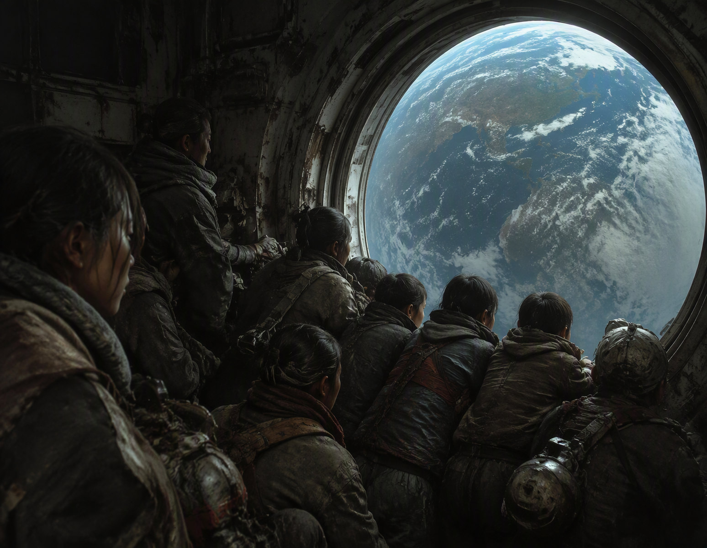
最后一个候选，我们飞了两年零一个月。
那两年里，没有人提它的全名。大家说"最后一个"。说久了，就变成"最后一个"。
森算了一年零四个月。算完的那天，它说："坐好。"
那一下之后，船外面换了天。
我们是在第四天看见它的。
那天早上，排在圆孔前面的人，第一个把脸贴上去，然后就不动了。后面的人催他，他不让。最后他被两个人架下来。架下来的时候，他在哭。
我排在第几个，我不记得了。轮到我的时候，我把脸贴上去。
它在那儿。在很远的地方，就是一颗星那么大，一个很小的、圆的点。
是蓝的。不是灰星那种灰蓝，也不是冰里透出来的那种蓝。是亮的。它上面有白色的东西，一条一条的，绕着它转。
我看了很久，看到眼睛酸。我把位置让开，退到后面，蹲下来。
我没有哭。我的耳朵里全是响。我听见我自己的心跳，一下，一下，撞在肋骨上。
我心里只有一句话，翻来覆去，说了很多遍。我说的是：
"小雀，到了。"
森在那天下午做了全船的广播。它说：
"距离：四点三亿公里。直径：约一万两千七百公里。表面百分之七十一被液态水覆盖。大气含氧百分之二十一。表面重力：零点九八个标准重力。平均温度：十五摄氏度。"
它停了一下。
它说："有云。"
它说："有水。"
它说："有绿色的东西。"
那一层的人听了之后，没有一个人叫。
这就是我在灰星长大的人身上，看到的最奇怪的一件事。我们等了十一年，我们到了，我们一句话都说不出来。
从那天起，船上的人开始做一件以前从来没做过的事：排队等天黑。
因为随着我们靠近，那颗星球在圆孔里会越变越大，一天一天，变大一点点。有人开始拿炭在墙上画，他画的是圆孔里的东西，他每天画一张。他画了四百多张。
靠近的过程，用了七个月。七个月里，森一直在算。它要算怎么进去，从哪个角度进去，进去之后往哪儿落。它算的时候灯是暗的，可这一次，没有人抱怨。就是最黑的那几天，人的心情也是好的。
那些生在船上的孩子，是最后才明白发生什么事的。他们从出生起，圆孔外面就是黑的。对他们来说，黑是正常的。
所以当他们看到那颗蓝的东西越来越大，他们没有哭，他们笑。
有一个孩子，那年七岁，生在船上，他趴在圆孔前面看了半个钟头，然后他回过头，问我："那是什么。"
我蹲下来，跟他眼睛对着眼睛。
我说："那是水。"
他说："水不是硬的吗。"
我说："不是。水是软的。"
他说："哦。"
他想了一会儿，说："那我们以后是不是不用省着喝了。"
我说："不用。你喝不完。"
在进入轨道之前的那些天，船上发生了一件事：我们要给那个地方起一个名字。
不是给星球起。星球不需要我们起名字。是给我们自己起。我们要有一个说法，叫它一声，才知道自己在往哪儿去。
大家提了很多。有人说，叫"新灰"，因为我们是灰星来的人。有人说，叫"那边"。有人说，别起了，起了，万一不是，白起。
这话说得对。
后来森说了一句话。它说：你们不必现在起。名字是住出来的，不是起的。你们住上几年，它自己会有一个名字。
它说：就像灰星。灰星原来叫什么，没有人知道。它现在叫灰星，是因为住在上面的人天天看见灰。
所以我们是带着一个没有名字的地方，下去的。
后来我们叫它"这儿"，再后来，我们叫它村子、河口、崖上、学校。我们一直没有一个统一的名字叫它。因为不需要，因为它是我们唯一的地方。和一个唯一的地方，是不用起名字的。
进入轨道那天，全船一千一百四十三个人，全部聚集到了那一层。
森把圆孔旁边的一整面舱壁拆了。现在那里有一个很大的口子，用透明的板封着，那是从坟场的一艘船的舷窗上拆下来的。
我们一千多个人都站在那儿。下面是我们等了一辈子的东西。
那颗星球就在底下。
蓝的。
蓝得不像话。蓝里有一块一块的绿，绿里有一道一道的黄的、褐的、灰的，有的地方横着，有的地方竖着。有一条很长的白的东西，从上面斜斜地拉过去，森说那叫云。
还有一样东西。星球的上半部分，有一片是白的，白得非常干净。
森说：那是冰。
我说：跟我们的一样？
森说：一样。
森说：也是水。
我们绕到它的第三个日子，森开始一个一个地报数。它报的是山，是河的走向，是哪一个地方大片的绿，哪一个地方是黄的。
它说："那里有一块很大的黄。那不是沙，那是干的草。到了雨季，它会变绿。"
我说："你怎么知道。"
森说："我算的。"
它说："我从那道白的东西，云，的走法，算出风从哪儿来；从风从哪儿来，算出雨落在哪儿；从雨落在哪儿，算出哪儿会长。"
它说："这是我第一次，算一件我不确定的事。"
我说："为什么不确定。"
它说："因为书上写的东西，会错。只有亲眼看着，才不会错。"
它说："我们要下去了。"
我在那儿站着，站了很久。我旁边站着言。她那年四十九岁，头发里已经有一半是白的。她一直看着下面。
她说了一句话。她说："我娘说的'软的地'。"
我说："嗯。"
她说："就在那儿。"
那天夜里，我用的是灰星的说法，船上其实没有昼夜，森把我叫去了。
它说："沈砾。"
我说："嗯。"
它说："要下去了。"
我说："确定吗。"
它说："不确定。"
我说："那你还下去。"
它说："我这十一年，读了四千一百册书，和你说的那个梦。书里的东西，我都懂。"
它说："可你的梦里有一件事我不懂。"
我说："哪一件。"
它说："你说你进去的时候不害怕。我一直不明白，一个人为什么会在一个陌生的地方觉得不害怕。"
它说："现在我要下去了。我也想知道，我会不会不害怕。"
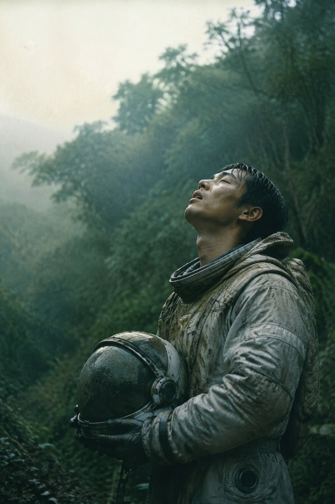
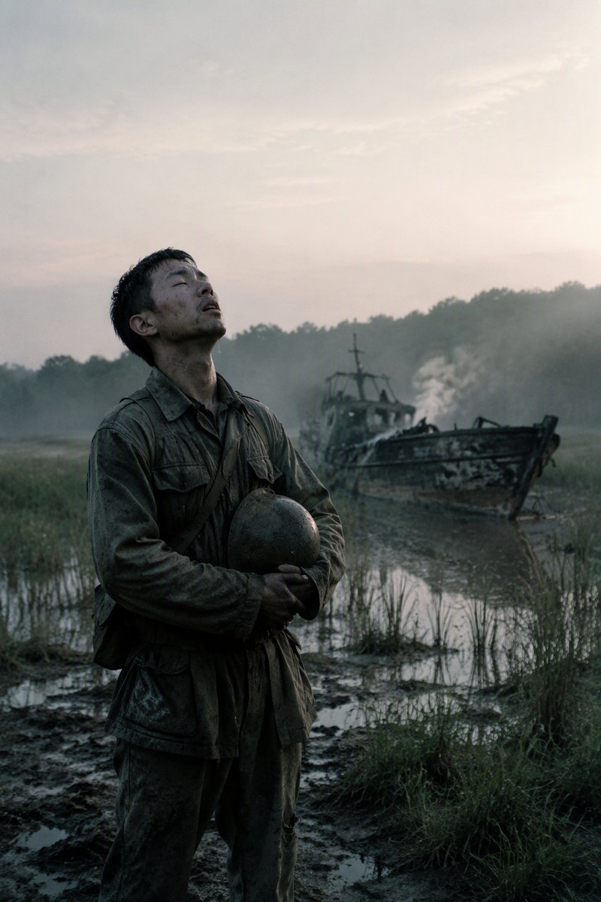
下去，用了九个小时。
我们没有落架。这艘船是十七艘船拼起来的，它没有腿。
森说，它会用一个很笨的办法：船先减速，减速到很慢，然后用最后一次点火，把自己轻轻放下去。它说，这一次点火，烧的是我们最后那点能量，烧完就没有了。
下降的那几个小时里，我一直躺在格子里，扣子扣着。
我听见船的外壳在叫。那不是金属的响，是一种更长的声音，像有人在很远处拉一根弦，越拉越紧。
我旁边格子里的那个小孩，八岁了，他一直问：到了没有。
我说：快了。
他说：外面是什么样。
我说：我不知道。
他说：你也不知道？
我说：我也没见过。
最后那一下，很轻。
我一直准备着被砸一下，像起飞那次。没有。只有一声很闷的响，然后是震动，然后什么都没有了。整个船安静下来。
静了很久。然后森说：
"到了。"
出舱的口在最上一层。那个口是我用切割机开的。原本那里没有门，森说它不知道门应该开在哪儿。
我开的时候手很抖，切了三次才切穿。切穿的那一刻，有一阵风从缝里进来。
那阵风是暖的。
我整个人愣在那儿，切割机还开着，火花往我脚上掉。我这辈子吹过的风都是冷的，最暖的一次是雨季里，五度。
那阵风是暖的。我把它吸进去了。
第一个出去的是我。
门开的时候，外面的光一下涌进来。我抬手挡了一下。我这辈子养成的习惯，光会刺眼。
那次没有。我把手放下来。
我站在船的门槛上。
外面。我看了很久，一直看到我不知道该怎么往下看。
我先说光。它不刺眼，它从上面来，是白的，很匀，落在什么东西上都是亮的。它的方向是斜的，从东边偏下一点。天上的颜色，是一种很浅的蓝。蓝上面飘着一些白的，白的形状是没有边的，一块一块，有的厚，有的薄。它们不动，它们在慢慢地变。
然后是绿的。从船底下一直铺出去，铺到很远的地方，铺到我看不见的地方，全是绿的。绿的里面，有几丛很高的东西，比我们哨塔高得多，它们的顶上分开了，一片一片的，风一吹，整片都在晃。晃的时候有声音。那声音很轻，像很多人在很远的地方说话。
那声音跟灰星上风过麦田的声音不一样。灰星上的麦子只有三十天。这里的东西，不知道长了多久。
我往下走了一步。
我的脚踩在绿的东西上。它是软的，它陷下去一点点。
我站在那儿，一动不动。我脚底下这层东西，是我梦里那个东西。
我摸了二十九年铁、冰、血、死人。这是第一次。
我做了一件很奇怪的事：我把头盔摘了。
那是二十九年养成的规矩，头盔不摘，头盔是命。在灰星，把头露在外面的时间超过一分钟，人就完了。我摘的时候，手是抖的。我摘下它，把它拎在手里。
风直接吹在我脸上。
风里有味道。这个味道我认识。它是我梦里的那个味道，潮湿的、发甜的、带一点腥的。它从我的鼻子进去，一直下到很深的地方。我站在那儿，闻了很久。
然后我做第二件事：我吸了一口气。
这一口，我吸得很大。我在灰星上是不能这么吸的，灰星的空气里有锈，有灰，有冻到会疼的颗粒，吸大了，喉咙会出血。
这一口进去之后，我什么都没有感觉到。它不疼，它不凉，它不干。它就那么进去了，进去之后好像什么都没做，又好像把里面所有地方都抚了一遍。
我又吸了一口。第三口。第四口。
我吸到第八口的时候，我跪下去了。
我不会形容那个时候的感觉。
我只知道，我在那片绿的东西上跪着，用手去抓它。我抓了一把。它是细的，一根一根，软的，中间还夹着一点潮。我把它拿到眼前看。它很小，它比绒苔小得多，一根一根的，有尖。
我把它放进嘴里，嚼了一下。
后面的人开始出来。先是几个兵，他们站在门槛上，跟我一样，一动不动。然后越来越多人，他们从舱里往外挤。
有人一出来就跪下来，跟我一样抓地上的东西。有人站着哭。有人开始跑，跑了十几步就摔倒，摔在那片软的东西上，然后就不起来了，就趴在那儿。
有一个四十几岁的男人，蹲在地上，对着一朵很小的、黄色的东西看了半个钟头。他后来跟我说，他这辈子没见过花。
那些生在船上的孩子，是最奇怪的。他们跑得最快。他们在绿的东西上滚，互相扔，他们笑得非常大，他们一点也不害怕。对他们来说，这里就是他们出生的地方。他们不知道灰星，他们不知道冷。他们不知道，我们这些人跪在地上，是为了什么。
我们下来之后的头三个钟头，没有人敢走远。全船一千一百多个人，都挤在那艘船周围。
不是怕，是不知道往哪儿走。在灰星，你出营地，方向是定死的：往北是山脊，往南是盐漠，往东是三湖。每一个方向都有名字，每一个名字后面都有死人。
这儿没有。这儿四面八方都是一样的。
后来是小满先走的。他二十几岁，生在船上，最会算数。他拿了一根绳子，一头拴在船的腿上，一头拴在自己腰上。他说，我走一百步，放一百步，你们在船上看我。
他就走了。走一百步，他回头喊：还是一样！再走一百步。
走到第五百步的时候，绳子已经很长了。他站在那儿，站在一片绿的中间，蹲下去，把手按在地上。
他回来的时候，手上是泥。
他把手举起来，给所有人看。
那是我第一次看见土。不是灰星的沙，不是灰星的盐壳，是土。是黑的，是湿的，是能捏成一团的。
有人伸手去摸他那只手。一个人，两个人，后来排起了队。一千一百多个人，排着队，去摸一只手。
我摸的时候，把那一小团泥搓了很久。搓着搓着，它在我手心里散了，散成了很细的、有点暖的粉。我把手举到鼻子前面。
那股味道我认得。我在梦里闻过。
那天下午，我跟森说了一句话。我说：这个地方，有没有一种东西，是长在土里、能吃的。
它说：有。有很多。我可以一个一个地告诉你们。
它说：但是有一件事，我要先说。
它说："你们要先把不能吃的那一批认出来。"
它说："那要死人。"
那天下午，下雨了。
雨点落在我们身上的时候，全船的人都僵住了一秒钟。因为在灰星，雨是会烧人的。我听见有人喊："进舱！进舱！"
没有人动。因为那雨落在手上的感觉不对。
它不烧。它是温的。它就那么落在手背上，停一会儿，然后顺着流下去。
我把手举起来。雨点打在我手心里。我的手心，是二十九年没洗过干净的手心。那些水就在那儿，一点一点戳我的手心。
我站在那片绿的东西上，站在那场雨里。我说了两个字。
我说的是：
"真的。"
那天夜里，我们一千一百多个人，没有一个人回舱里睡。我们睡在外面。
我们躺在绿的东西上，横七竖八，像一堆被扔在草地上的东西。有人躺着看天，看到天亮。
我躺在那儿，身上盖着的是船上的、一片普通的灰布。
我看着天。天黑下来的过程，我见过很多次。灰星的天黑下来是从灰变成黑，很快，很干脆。这里不一样。这里的天黑下来的时候，先变红，再变紫，然后那个紫色才慢慢沉下去。有云的地方，云会被点着，一条一条地烧。
烧完，上面露出东西。是星星。满天都是。
灰星的星星也很多。可这里的星星，一层压着一层，从上面一直到地平线，密密地铺着。躺在床上看，你会觉得那块天是斜的，会往你身上压下来。
我看了很久。然后我睡着了。
那是我这辈子的第一觉，没有做噩梦。
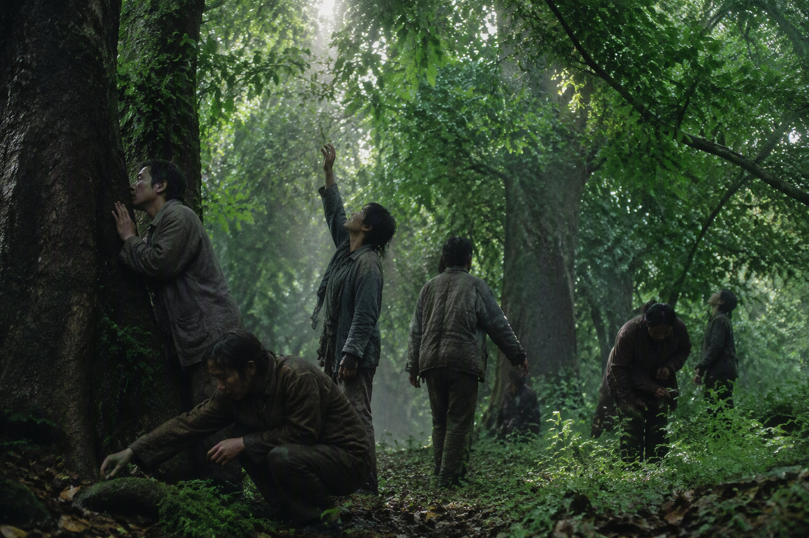
落地之后的第七天，我们才敢往树林里走。
前六天，我们都在船附近。不是不想走，是我们不知道该怎么走路。
在灰星走路，是有规矩的：要看脚下，冰缝、盐壳、陷阱；要看风；要看前后有没有人；走十公里要休息两次，喝水八十毫升。
在这里，走路的规矩全废了。你抬头，天上没有要杀你的东西；你低头，地上没有要陷你下去的东西；你走一天，也不会有人冻僵。人一下子不知道自己该防什么。
那六天里，我们干的最要紧的一件事，是"试吃"。凡是长在地上的东西，都要试。一个人吃，其他人看着；吃下去等两个钟头；没死，没吐，没拉，才算能吃。
第一个吃死的人是第五天的事。
那是一种很漂亮的、紫色的、长在树底下的小东西。吃它的那个人叫二贵，四十多岁，是石板出来的。他吃了半朵。三个小时之后，他的眼睛开始流血。天亮之前他就死了。
我们把他埋了。那是我们在这颗星球上埋的第一个人。
挖坑的时候，我们都愣住了。因为土是软的。
在灰星，我们挖不动坟。我们只能把死人烧了，压成一块牌子。在这里，一锹下去，土就开了。那个坑挖得很快，很快就挖到一人深。
站在坑边的人，有几个开始哭。不是因为二贵，是因为那个坑。
第七天早上，我跟森说：我要进去。
森说：去哪。
我说：那些高的东西里面。
森说：那片东西，从这里一直铺到东边，宽大概四十公里，长大概七十公里。
我说：那我就走四十公里。
森说：可以。你带上绳子，你们在灰星上用的那种绳子。里面很密，你可能会分不清方向。
进去的是四个人：我、言，还有两个兵。我们牵着绳子往里走。
树林里是暗的。不是黑，是暗，光会被上面的东西挡掉，只剩下一些碎的、掉在地上的一块一块。
那些高的东西从地里长出来。它们不是插在地上的，是跟地长在一起的，底下有很粗的一截，往上越长越细，然后分成很多枝。它们的皮是粗的。
我摸过一根。不是凉的，是温的。
我摸的时候，手在那儿停了很久。我说过，我摸了二十九年铁、冰、血、死人，那些东西全是凉的。这一根是温的。
我把脸贴上去。它上面有纹路，很深，一条一条地往下走。纹路里有潮气，有别的活的东西住在里面，很小，很细，有的会动。我贴了很久。
后面有人叫我，我没有应。后来言走过来，站在我旁边，看着我把脸贴在那根东西上。她没有说话。过了一会儿，她也把脸贴上去了。
我们走得很慢。
在灰星走路，眼睛是要看着脚底下的。地面有两种：一种硬的，一种会陷的。硬的没事，会陷的会把你吞下去。那两天，我的眼睛一直盯着脚下，我看不见前面的路。
言说："抬头。"
我说："底下有坑。"
她说："这儿没有坑。你抬头。"
我抬了头。
一根一根粗的、褐色的柱子，从我脚边一直排到看不见的地方。它们往上长，长到很高，然后在上面散开。上面是绿的，一层一层的绿，把天挡掉了。有光从那堆绿的缝里漏下来，一道一道的，是斜的，落在地上，也落在我身上。
那些光在动。不是光在动，是上面的绿在动。有风从上面过，那些绿就翻过来，一翻，光就换了个地方。
我站在那儿，看了很久。
后来我做了一件事，我到现在还记得。我躺下了。
我把枪放在旁边，往那片软的地上，往后一躺。我躺着，看着上面。那些绿还在动，光从它们的缝里落下来，落在我脸上，一块一块的，挪过来，又挪过去。
我躺在那儿，什么也没想。我躺了大概两分钟。
然后我听见有人在我旁边坐下。是言。她也躺下了。
我们两个躺在那片软的地上，看了一会儿上面。后来她说：
"砾。"
她说："你笑什么。"
我说："我笑了吗。"
她说："你一直在笑。"
我伸手，在旁边抓了一把。抓起来的是一把很细的、软的、绿的东西。它们从土里一根一根地长出来，很短，不到我手指长。
它们有味道。我把那把东西放到鼻子底下。
那个味道我写不出来。它不像水，不像铁，不像苔。它是甜的、生的、凉的，是从地里出来的。
我把那把东西一直拿着，拿到前面的人叫我。后来我把它揣进了口袋。它在我的口袋里待了三天。干了以后，我又拿出来闻了闻。它还有一点味道。
一个小时后，我们遇见了第一只鸟。
它在我们头顶上叫了一声。
我们四个人一下子就趴下了。趴在潮的、软的地上，一动不动，把枪端起来。
我这辈子听过的所有会动的活物，都是危险的。灰星上地面上没有活的东西，活的东西都在地下：穴獾、盲鳗、石肺。活的东西会动，会动的东西要杀你。那一声叫，就是从上面来的。
我们趴了大概一分钟。然后言抬头看了一下。
她说："在那儿。"
我抬头。它很小，灰褐色的，蹲在一根枝上。它身上有毛，它有两只很小的眼睛。它歪着头，看我们。它又叫了一声，然后它飞走了。
我们趴在那儿，很久没有起来。
不是因为害怕。是因为那不是"跑掉"，那是"飞"。它在空中，用两只翅膀，把自己提到树上去了。
在灰星，只有风里的沙会飞。
那天中午，我们找到了水。
是一条很细的、在石头中间走的水。宽不到一米，很浅，能看见底下的石头。水是清的，能看见石头上的花纹。
我们四个人围在那条水前面，谁也没有动。
后来是我先蹲下去的。我用手捧起来。水在我手里是凉的，它是凉的，但是不咬人。它是那种你愿意多待一会儿的凉。
我喝了一口。没有味道。
它不像我们灰星的水，我们的水里有铁味、有苔味、有冰化成水之后的那点土味。这一口，什么都没有，就是干净。
我喝了第二口，第三口，第四口。我喝了很久，我没有数。我喝到肚子里发胀，喝到水从嘴角流下来，流到衣服上。
旁边那个兵，姓孙，四十多岁，他蹲在水边，一直没喝。
我说："喝。"
他说："我喝不下去。"
我说："为什么。"
他把手伸进水里，让水从手指缝里过。他看了很久。
他说："砾头。"
他说："这水……没人管。"
那天下午，他喝了七升。他吐了。
吐完之后他坐在地上，抱着膝盖，哭了一场。
那是我第二次在这颗星球上看见人哭。
我们在树林里走了三天。
第三天晚上，森通过我们带着的小机子跟我们说话。
它说："沈砾。"
我说："在。"
它说："你们往东走。"
我说："为什么。"
它说："那条水在往下走。水往下走，会走到一起。所有的水走到最后，都会到同一个地方。"
我说："什么地方。"
森说："我在上面测过。东边十九公里。那里，有一片水。"
它说："特别大。"
它说："大到看不见对岸。"
我站在那棵树的底下。手里的机子很凉。
我说："你……你是说。"
森说："不知道。我没有见过。"
它说："你们替我看。"
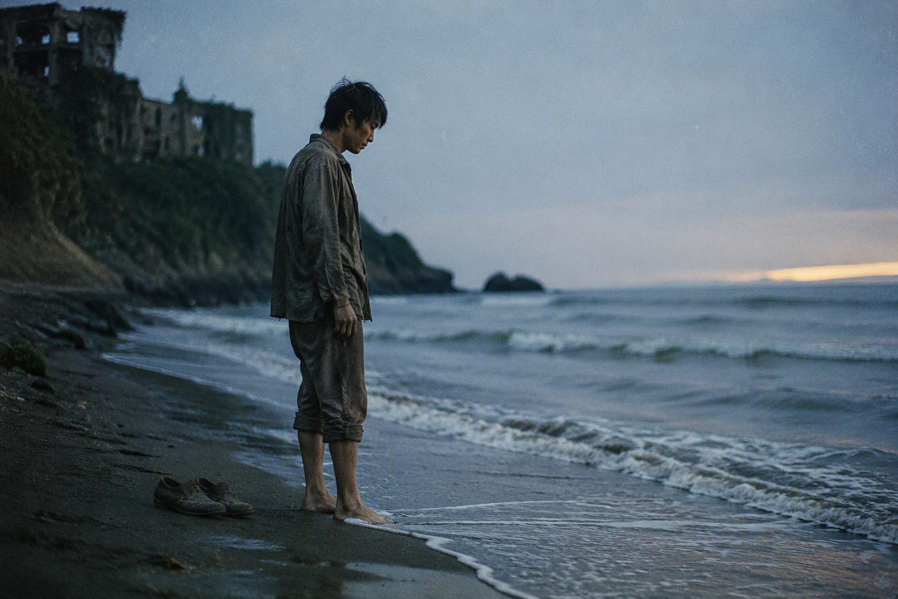
我们是先听见的。
走了大概十六公里，树林开始稀。高的东西越来越矮，越来越远，光从上面整块整块地落下来。
然后我们听见了那个声音。
我停下。言停下。四个人都停下，蹲到地上。
那个声音是从前面来的。它不是风，风是会变的，一会儿大一会儿小，这个声音不变；它不是雷，雷会断。它一直响。一个声音，低低的，一直在那儿，中间还夹着别的声音。
我趴在地上听了大概五分钟。
我说："是什么。"
言说："不知道。"
老孙说："是不是水。"
我说："水不会这么响。"
我们又走了三公里。
高的东西没有了。前面是一片平的、矮的东西，铺出去很远。它的颜色比树林浅，比树林亮，风一过来，它整片压下去，又整片立起来。它的声音比树林里的响，是那种很多很细的东西在一起响。
再往前，那条从树林里出来的水变宽了。它不再是石头中间的一条，它把自己摊开了，在矮的东西中间拐来拐去。
再往前，地变成白的。
是沙。
我们在沙上走了一公里，那个声音越来越大。到最后两百米的时候，我几乎听不见自己的脚步，我只能听见它。
沙上有一道很高的、白色的脊。我们四个人走到那道脊下面，停下。
我说："我先上。"
我往上走。沙很软，走一步退半步。我爬了大概两分钟。
我爬到脊上。我抬起头。
我看见了。
我不打算写它是怎么样的。我写不出来。
我这辈子读过四千一百册书，那些书里有很多词。我看过的所有词，都不够用在这里。
我只能写我记得的几件事。
第一件：它没有边。我的眼睛看不到它的边。它是从一个方向一直铺到另一个方向，铺到我站的地方的高度，然后往上一点点，然后就在那儿停住了，跟天接在一起。它上面有一条很直很直的线，那条线就是它的边。那条线也在动。
第二件：它在响。它不是一种响，它是很多种。最底下是一层一直在的、很低的、像有人在很远很远的地方拉一根很粗的弦的声音。上面一层是断断续续的，一下一下的，像有人拿手在拍。最上面是很多很细的、碎的、一直在变的声音。
第三件：它的颜色不是一种。近的地方是绿的，远一点是蓝的，再远是一种深的、发黑的蓝。在它上面，有一层亮，是活的，一块一块地跳。
第四件：它朝我来。它不是停着的，它一直在往我这边来。一道一道的，从很远的地方来，越来越近，越来越大，然后在我脚底下那一片沙上摊开，铺成一片白的东西，然后收回去，然后又来一道。
我在那道脊上站着，站了很久。我的腿在抖。
后来我往下走。
我走到它边上。
我把靴子脱了，把袜子脱了，把脚放进去。
它是凉的。不是咬人的凉。它把我的脚包住，它一直在动，一会儿上来，一会儿下去。上来的时候到我的小腿，下去的时候到我的脚背。它在我脚底下，把沙带走。
我站在那儿，脚底下在被一点一点拿走。
我蹲下去，我用手在水里捧了一把，我把手举到嘴边。
我喝了。
咸的。
我坐在那个沙上，坐了很久。我把手放进水里，一遍一遍地把水捧起来，看它从手指缝里漏下去。我做了很多遍。
后来我做了一件事。我把我胸口那个口袋拆开了。我把三块铭牌一块一块地拿出来：灰雀的，老马的，钉子的。
我把它们放在手心里，举起来，对着那个一直响的东西。
我说：
"小雀。"
"蓝的。"
"咸的。"
"一直响的。"
"一样。"
我把它们收回来了，收回口袋里，重新缝上。
不是现在。我要等到我们都知道了以后。
那天夜里，我们四个人没有睡。我们在沙上生了一堆火。
沙上不能生火，我们把火生在一块铁板上，那块铁是从车上拆下来的。我们围着那块铁坐。
老孙那年四十六。他的手很粗，指头很短。他跟我一样，是在灰星上长大的。
他坐在火边上，把两只脚伸在沙里。
他说："砾头。"
我说："嗯。"
他说："你给我讲讲那首歌。"
我说："哪首歌。"
他说："灰雀那首。"
我说：
"蓝的。"
"咸的。"
"一直响的。"
"比村子大。"
他说："就这四句？"
我说："他知道的只有四句。"
老孙看着那个东西。那天夜里，那东西是黑的，看不见边，只能听见它在响。他看了很久。
他说："我小时候，我娘也教过我一首歌。"
我说："什么歌。"
他说："她教的是：别往南走。南边没有水。"
他说："她教了我一辈子。她死之前还在说。"
他把脚从沙里抽出来。
他说："现在我们在南边。"
他往那个响着的东西那边抬了一下下巴。
他说："我娘要是活着，我明天就带她来看。"
他说："她一辈子没走出过二十公里。"
我没有说话。火在我们中间烧着。
我往火里加了一块东西，是我们在这儿捡的干木头。它烧起来，有一股味道。
老孙闻到那个味道，愣了一下。他说："这是什么味。"
我说："这儿的一种树。"
他闻了很久。他说："跟灰星上的麦秸，有一点像。"
他说完，就不说了。他从火边站起来，往那个响着的东西那边走，走到水边上，站在那儿。他站了很长时间，然后蹲下来，把手伸进去。
他蹲在那儿，很久。然后他把手拿出来，把手贴在嘴上。
他舔了一下。
他说："真的是咸的。"
我说："嗯。"
他说："歌里说的是真的。"
言和另一个兵，是过了很久才从脊上下来的。他们走得很慢。
那天下午，我们做了一件事。言把那个小机子拿出来。
她说："跟森说。"
我说："说什么。"
她说："让它听。"
我把机子的送话口朝外，对着那个东西。我打开。
我说："森。你听。"
那边没有声音。机子里只有一点点电流的沙沙声。
我把机子举着，一直举着，举了很久。
我说："这就是它。它一直在响。"
那边还是没有声音。我以为断了。我正要关掉的时候，喇叭里出来了森的声音。
它说："我在听。"
它说："我听不见。你们的机子只能传三千米。我在这里，什么都听不见。"
我拿着机子，站在那个东西前面。
我说："那我给你讲。"
我说："它很大。它没有边。它一直在动，不是风那种动，是自己动，从很远的地方一道一道地过来，到我脚底下就散了。它现在是白的，一会儿是绿的，远处是黑的蓝。我刚才把脚放进去。它是凉的，不咬人。我喝了一口。是咸的。"
我说："跟歌里一样。"
森很久没有回话。然后它说了一句。
它说："沈砾。你帮我一件事。"
我说："你说。"
它说："把你的机子放在水边上，就放在那儿，别关。你们的电池还能用二十几天。这二十几天里，我什么都做不了。我只能在这儿，听那个沙沙的声音。"
它说："但是那个沙沙的声音，就是它。"
我照它说的做了。我把机子放在沙上，离水半米，把它支起来，送话口朝外。风一过来，水会溅到机子上。我用一块石头把机子压住，又用我的皮衣在旁边挡了一下。
那天夜里，我们四个人守在沙上。机子一直开着。
喇叭里什么都没有，只有沙沙的声音。
森也没有再说话。它就那么听着，听了一整夜。
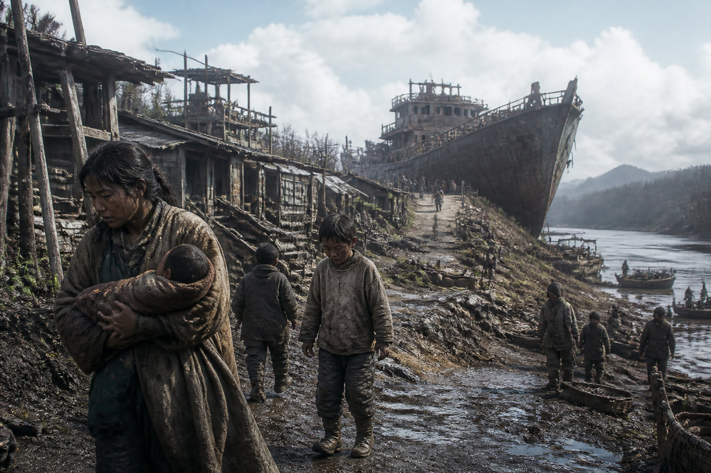
我们在河口过的第一年。
头三个月，我们住在那艘船里。那时候我们还不敢住到外面去。船里有墙，有顶，有门，人从小在灰星长大，最信的就是这三样。
第四个月，我们开始拆它。不是全部拆，是先拆最外面的那一层板子，拿来做房子。
我们的第一批房子是这样的：四块板子立起来，围一个方，上面盖两块，前面留一个洞。没有地基，没有钉子。板子底下垫石头，板子跟板子之间塞布。
第一间房子盖好的时候，外面在下雨。雨从缝里进来。我们在里面，一边躲，一边往外舀水。
那间房子，后来我们叫它"一号屋"。
第一年的第二件大事，是雷。
第六个月的一天下午，天黑了。不是普通的天黑，是天从西边开始，整块整块地往下压，压成一种发紫的颜色。
然后天上响了一声。
那一响之后，五百多个人同时趴在了地上。有人喊："炮！"有人喊："卧倒！"有人把孩子按在身底下，有人往屋子里钻，有人抱着头蹲在墙根。
我趴在一块石头后面，手已经摸到了枪。
我那时候还有一把枪。我一直带着它。我从灰星带过来的。
第二声响的时候，我们才觉得不对。炮声是从一个地方来的，这个声音，是从整片天上下来的。它响的时候，天上有东西亮了一下。
森在喇叭里说："那是雷。是云里的电。它不伤人，你们只要别站在那棵最高的树底下。"
它说："书上写着，这个叫'雷'。"
那天晚上，没有一个人睡好。
第二天早上，我在村口看见一个小孩。他七八岁，站在空地上，仰着头，看着天。
我问他："你看什么。"
他说："我等我娘说的那个东西。"
我说："什么东西。"
他说："她说，天上有个东西，会亮。"
那是我第一次意识到，他们跟我们不一样。
他们的害怕是新的。恐惧这件事，在我们身上已经磨出来老茧了，可在他们身上，还是软的。
第一年，我们出的最大的事，是水。
不是没有水，是水太多了。
那条河在雨季涨了。我们不知道它会涨，我们那时候还不认识"季节"这两个字。
我们把第一批存下来的东西放在了河边，因为河边近。那里面有种子、有铁器、有我们从灰星带来的三十二公斤矮麦的种子剩下的一半。
那场水上来的时候，是夜里。第二天早上，河边什么都没有了。
我们站在那儿，站了很久。
那是我们在这颗星球上，第一次觉得害怕。
在灰星上，你害怕的东西你都认识。你怕冷，怕没有水，怕有人来打你。在这儿，你害怕的东西你不认识。它不咬你，它不冷，它很温，它很舒服。
然后它把你的东西拿走。
后来我们把东西全搬到高处。
森说，它要从头学。
我说："你不是有书吗。"
它说："书是九百年前的人写的。写书的人，见过的是九百年前的天。"
它说："这九百年里，这颗星球自己过了一段日子。它变了。我得重新认它。"
我们到这儿的第一年，第七个月，下了雨。
不是我们滴的那种雨。是真的雨。
那天早上，天是灰的。灰得跟灰星的灰不一样。灰星的天是铁的灰，压在人头顶上，一年压到头。这儿的天，那层灰很薄，能看见后面有光。
到了中午，风停了。下午两点，第一滴落下来，落在石头上，一小点，很快就没了。第二滴，第三滴。
然后是一整片。
我一辈子听过两种雨。
灰星的雨，是硬的。它落在皮衣上，是"嗒嗒"的声音，像有人在敲。它落在脸上，是凉的，你会本能地躲。
这儿的雨，是软的。它落下来没有声音。它落在你脸上，你觉得有一点暖。人站在那种雨里，会想不起来要躲。
全村子的人，都从屋子里出来了。跟我们当年在灰星上一样，仰着头，张着嘴。
一千多人，站在雨里。有人在笑，有人在喊。
有几个老人，站在那儿一动不动。我走过去看。
他们在哭。不是大声哭，是那种眼泪混着雨、自己往下走的哭。
那天晚上，我把村里的老人叫到一块儿，我问他们：今天为什么哭。
有一个老太太说了一句话。她说："我娘说过，她这辈子最想干的一件事，是淋一场不用怕的雨。"
她说："她没淋上。"
她说："我今天替她淋了。"
森重新认它，用了十一年。
它每天记录：什么时候下雨，雨多大，风从哪儿来，云是什么形状，什么时候天亮，什么时候天黑，鸟什么时候来，什么时候走。它把那些东西一页一页地写下来。
十一年之后，它写出了一本自己的书。那本书的第一页上是这样写的：
"这里的雨季，从第九个月开始，到第十一个月结束。"
"不是书里写的。"
"是我量的。"
第一年里最寻常的一件事，是喝水。
我们一开始是按灰星的规矩喝：一人一天一百五十毫升。
那个数字是从船上带下来的。船上就是按这个数分的，我们分了几十年，谁都不会多喝一口。我们用地上的小杯子量。那个杯子是铁的，是从灰星带来的，杯口有一道刻痕。
到了这儿，我们还是用它。
第五个月的一天，出了一件事。
那天下午，老孙，就是那个在水边喝到吐的兵，他蹲在河边，看着那条一直往东走的水。他看了很久。
然后他把手里那个杯子扔了。那个杯子是他从灰星带来的，他用了三十几年。他把杯子扔进水里，看着它被冲走。
他说了一句话。他说：
"这水是往下走的。"
他说："它一直往下走。它没有数。"
那天晚上，他把这件事跟全船的人说了。他说：
"我们要改一个规矩。从此以后，谁想喝水，就喝。"
那天夜里，没有人去喝。第二天，也没有人。
第三天，有一个孩子先喝了。他喝完，所有人都看着他。他没事。
第四天，有七个人喝了。
第十天，我们不再数了。
第九个月，第一个孩子生下来了。是个女孩。
生她的人是二丫，二十出头，从北坳来的。生的那天下着雨，屋子里很闷。接生的是原来石板的医生，六十多岁，手一直抖。生了整整一天。
傍晚的时候，孩子出来了。
那孩子哭的声音很大。屋里屋外的人都在哭。
我在外面站着，听见有人喊："活的！活的！"
我没进去。我站在门口。后来他们把孩子抱出来给我看。那孩子很小，她身上是红的，她的手攥着。我伸手摸了一下她的头。
她的头是热的。
她是我们这一批人里第一个生在这颗星球上的。她的名字，是她娘让我起的。
我想了很久。我说：
"叫苔。"
她娘问："哪个苔。"
我说："灰星上，有一种东西叫绒苔。它长在冻土上，它是绿的。它是那颗星球上，最早从地里钻出来的东西。"
我说："它能活。"
那天夜里，我抱着她，在门口坐了很久。
她还不会看东西，她的眼睛是对不上焦的。我抱着她，跟她说了一句话。我说：
"苔。"
我说："你现在待的这个地儿。"
我说："一脚踩下去，是软的。"
第一年过完的那几天，我在屋子那面墙上，开始刻东西。不是名字，是日子。我刻头一年死的人。
不多。比灰星上任何一个冬天都少。
我刻到一半，停了一会儿。我发现我记不清顺序了。
后来我把手放下来。我说："算了。"
不是不算，是不用算了。
在灰星上，我们给死人打牌子。牌子挂在墙上，一块挨着一块，谁也不许取下来。水头说过，牌子是给活着的人看的，让活着的人知道，水是拿命换来的。
在这儿，水是从天上来的。我们不用再拿命换了。
那天夜里，苔哭了很久。我抱着她，在门口站着。
天上有很多星星。
灰星上也有星星。灰星的星星比这儿多，也比这儿亮，灰星上没有云，没有别的东西挡着。
我看了很久。我认出过几个。
我跟苔说："那个方向，是灰星。"
我说："太远了。看不见。"
她那时候还不懂。她只是不哭了。
我说："我们从那儿来的。"
我抱着她的时候，言来了。她站在门口，看了一会儿。
她说："她多大了。"
我说："十一个月。"
她说："她这辈子，用不着省水了。"
我说："用不着了。"
她把手伸出来，摸了一下苔的脸。她那只手，在灰星上扒过很多次冻土。
她说："沈砾。"
她说："你说，她长大了，会不会信我们说的。"
我说："信什么。"
她说："信我们是从一颗灰的星球上来的。"
我说："信不信都行。"
她说："为什么。"
我说："因为我们没打算让她回去。"
那天夜里，风很小。院子里的草在动，是那种很小的动。
我抱着她，一直坐到天亮。天亮的时候，她睡着了。我把她抱进去，放在她娘旁边。
我出来的时候，森在喇叭里说了一句话。
它说："沈砾。"
它说："天亮了。"
我说："我知道。"
它说："这是第二年的第一天。"
它说："你们活过了一整年。"
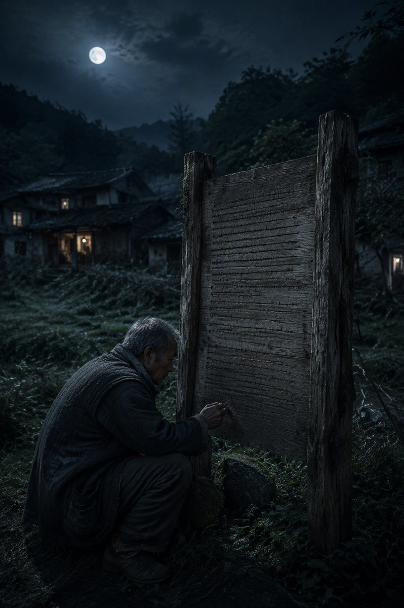
我们在这颗星球上，前三年死的人是这样的：
水冲走的，两个。吃错的，七个。病死的，十九个。老死的，三十一个。自己走的，四十四个。
最后那一栏，是我最不想写的。
灰星上，没有人自杀。
不是因为灰星上的人心硬，是因为在灰星上，你每天要花全部的力气才能活到明天。你要是停下来，冷会替你动手。在那儿，"不活了"这件事，是别人替你说的。
在这儿不是。在这儿，你早上起来，太阳是暖的。水在河里，你走过去舀就行。你不搭棚子，今天也不会下雨。你不种地，明年也有野的东西吃。
在这儿，你必须自己决定要活。
第一批出事的，是老穆。
他是灰星上来的老兵，比我大两岁。他不是不想活，他是停不下来。
他不是不想活，他是停不下来。
他把他的房子挖了。他一个人，用了四个月，在房子底下挖了一个地窖，八米深。挖完之后，他搬进地窖里住。他白天上来，跟大家干活，晚上下去，睡在底下。他下去的时候，要把洞口用一块板盖住，还要在板上面压石头。
我去看过他一次。我顺着绳子下去。底下很黑，很窄，只有一张铺。
我问他："你在底下睡，不难受吗。"
他说："在底下睡得着。"
我说："上面睡不着？"
他说："上面太空了。"
他说："在灰星，你睡觉的时候，你上面是六十米的冻土，你底下是石头，你左右是别人。你被包着。"
他说："在这儿，我上头什么都没有。风一吹，屋顶会响。屋顶一响，我就醒。"
他在地窖里睡了三年。
第三年的春天，他没有上来。
第二批出事的，是石板下来的那些人。
他们从来没上过地面，他们在底下待了一辈子，他们知道的世界是白灯、走廊、温室。到了这儿，他们看得见天了。
有些人是好了。他们开始走路，开始学种地，开始在大太阳底下坐着，一坐一天。
有些人坏了。
有一个叫老何的，六十二岁。他到这儿之后，头两个月很好。他很兴奋，他到处走，什么都看。他说他这辈子没想过会看见这个。
第三个月，他不动了。他坐在他那间屋子里，坐在角落里，抱着膝盖。有人叫他，他应；给他吃的，他吃。可他就是不起来。
他这样坐了七个月。
第七个月的一天，我去看他。我坐在他旁边。
我说："老何。"
他说："嗯。"
我说："你在看什么。"
他说："我在数日子。"
我说："数什么日子。"
他说："我在算，我们在地下待了多少年。"
他说："八百年。整整八百年。你们的祖宗在底下待了八百年。"
他说："我这六十二年，是为了什么。"
我不知道该怎么回答他。
因为我知道那个答案，那八百年就是为了等到今天。可那个答案，对一个已经坐在角落里的人来说是没有用的。
老何是那年冬天走的。
那几年，我做过一件事：我每天晚上，绕着村子走一圈。我走到每一间房子门口，站一会儿，听听里面有没有声音。有声音就没事。没声音的，我就敲门。敲了没人应，我就推门进去。
头一年，我敲开过七次门。第二年是十一次。第三年是六次。
河边有一块石头。石头上刻着四十四个名字。那四十四个，是"自己走的"。
他们不是一个一个走的。第一年一个，第二年三个，后来一年比一年多。走得最集中的，是第四年到第七年。
那时候，地里的东西已经种出来了，房子也盖起来了，水不用省了。人反而开始走。
我后来明白了一件事。
在灰星，人是被冻住的。你没有时间想别的，你每天想的都是明天怎么活。到这儿以后，明天不用想了。
人一旦不用想明天，就会开始想昨天。
有一个走的，我记得很清楚。他叫周。
他不是老兵，他是石板的。他四十多岁，会写会算，来的时候身体最好。
他有一样毛病：他每顿饭都要剩一口。不多，就一口。他剩了三年。
第四年的一个早上，他走到河边，坐下，把手里的碗放在石头上，然后就没有再起来。
碗里剩着那一口。
我们把他埋在河边。
后来我常常想那一口饭。我想，他每天剩那一口，不是不想吃，是想留一点，给一个不在的人。
我把这些事告诉过森。
我说："你算得出来吗。"
森说："算不出来。"
它说："我可以算出一个人需要多少水、多少粮食、多大的房子。"
它说："我算不出一个人需要多少'明天'。"
我说："那怎么办。"
森说："我不知道。我只知道一件事。"
我说："什么。"
它说："你们这些人，是从一颗星球上活下来的。你们活下来，是因为你们有一个理由。那颗星球上的理由，是'明天会有水'。"
它说："这儿的理由，得你们自己造。"
后来我们造了一个。
我们把那四十四个人的名字，刻在一块石头上。石头立在河边。
我们每年第七个月的第一个日头，到那块石头前面去。
那本来是灰星上雨季的第一天。在那个日子，灰星上的人一整天不干活，就是淋雨。
我们把这一天改成了纪念。
第一年，去的人很少，大家不愿意去。第三年，去的人多了一些。第十年，那一天成了我们这儿最大的一天。
那天干什么呢。
我们把水端出来。每家每户端一盆水，放在那块石头前面，然后就那么放着，放一整天。
在这颗星球上，水不用省。
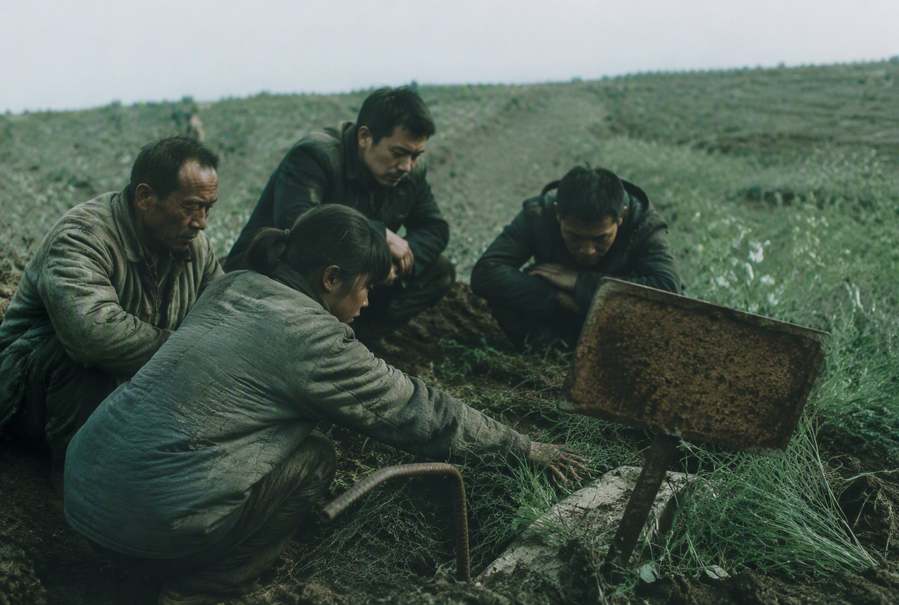
我们在那条河的河口住下来了。
河口有一片高的地，背风，离水近。船停在东边十九公里的地方，拆开来，一块一块地运过来。
第一年，我们盖了三十几间房子。房子是船板搭的，丑，但是不漏。冬天——这里的冬天也不冷——我们靠它过冬。
第二年，我们种下了从灰星带来的矮麦种子。它们长出来了，长得比灰星上高，高了三倍。
发现那件事，是第二年秋天。
有一个人叫小满，二十六岁，生在船上的那批孩子之一。他跟几个人往里走，去砍柴。他走了七公里，走进一片很密的树林。
他出来的时候，是跑回来的。他一口气跑了七公里，跑回村子，扑在地上，说不出话。我们给他水。
他喝完了，抬起头，说了一句：
"里面有一个东西。"
"很直的。"
我们去了十九个人。
他带我们走进去。走到一片树的中间，那里有一个很大的空地，那上面横着一条东西。
它是灰的。它不是天然的，它是直的。它大概有八米宽，从树林的这一边一直穿到那一边，看不到头。
它上面长满了东西。有一些是草，有一些是小的树苗，有的树苗已经长得很粗了，把那条东西从中间顶开。可它还是直的。
我们十九个人在那条东西前面站着，站了很久。有人蹲下去，用手把上面的草扒开。
底下是硬的。是黑的，是平的，是一块一块拼出来的，拼的缝还在。
那是一种我们认识的东西。
那是路。
我们沿着那条路走了两天。
路上有桥。桥断了一半，另外一半还架在那儿。桥墩是圆的，很粗，上面有很多细的纹。我们数了一下，桥的中心到水面，大概十四米。
路边有东西，是一个一个的柱子，隔一段距离立一根，都倒了，有的断成两截。柱子的位置很匀。
第三天，我们走到了一个地方。
那是一片很大的、平的、被草盖住的地。在那片地的中间，立着几个很高的、四方的、灰白色的东西。
它们不像树。它们上面有洞，洞是方的，一排一排的，很整齐。
它们像船的骨架。但它们不是船。它们是不会动的东西。
我站在那片地上，看着那几个东西。
它们很高。最高的那一个，比我们在坟场见到的最高的那艘船矮一半，但比哨塔高。它的外墙有很多地方塌了，塌下来的东西堆在底下，堆成一个一个小山包，山包上全是草和藤。
风从那些方的洞里吹进去，又从别的洞里吹出来。
那种声音，我听过。在坟场，风穿过那些空舱室，也是这个声音。
那天晚上，我们十九个人在那片地上扎营。我们点了一堆火。没有人说话。
后来是老孙先开的口。他说："这是别人造的。"
没有人反对。
他说："这是一个……一个很大的地方。这是他们的聚居地。"
"他们"这个词，就是那天晚上定下来的。我们后来一直这么叫。
他们。
他们有文明。他们会造路，会造桥，会造很高的东西。他们在这颗星球上活过。他们不在了。
我们那天晚上讨论了很久。
有人说是很多年前的事，有人说是很久很久以前。有人说他们可能还在别的地方，有人说他们可能已经走了，去了别的星星。
有人说，说不定他们就是我们的祖宗。
那句话说完，火堆边上静了一下。然后有人笑了。
那个人说："怎么可能。"
他说："我们的祖宗是从天上摔下来的，摔在灰星。灰星离这儿，飞了十一年。"
他说："他们要是我们的祖宗，那灰星是什么。"
第三天下午，我一个人进去了。我一个人走进那个最高、最完整的灰白色的东西里。
里面的地面很平，有很多小格子，格子上面有图案，图案已经磨得看不清了。有一段台阶往上走，通到上面一层。
我本来没打算上去。可我走上去的时候，出了一件事。
我上那段台阶的时候，一步，一步，一步。我上完了，站在上面，愣住了。
我上那段台阶的时候，没有调整步子。没有走半步，没有跨一大步，没有把腿抬高。我一步一步上来的，很顺。
我站在那儿，把那段台阶看了很久。
它每一级的高度，跟我的脚配得正好；它每一级的宽度，跟我的腿配得正好。我走上来的时候，我不用想。
我跟它，是配的。
那一层里，有几间屋子。我进了第一间。
屋子里的东西，全都倒在地上。我蹲下去，看那些东西。
有一样是铁的，弯的，一头有两个圆。我不知道那是什么。
有一样是玻璃的，碎了。玻璃上有一条缝，缝里还有一点水。八百年的水。
有一样是纸的。
纸在这个地方，居然还有。它被压在一堆东西下面，压得很平。我把它拿出来的时候，它很脆。
上面有字。
我认得那些字。不是完全认得，是认得几个。我认得一个"人"字。我认得一个"大"字。
我把那张纸举起来，对着外面进来的光。那天下午，光很短，屋子里很暗。我看了很久，才认出第三行。
那三个字是：
你好吗。
我把那张纸放回原处。我没有带走它。
我当时不知道为什么要放回去。后来我想明白了。
因为那不是我的东西。那是一个坐在这把椅子上、在这个桌子上写字的人的东西。
他写完那三个字的时候，我还没有出生。
他写完那三个字的时候，离我，还有八百年。
我在那一层走了很久。
那一层有一个坍了一角的大屋子，屋子中间有不少倒下来的东西。
有一堆东西里面，我看见一个形状。那是一个四条腿的东西，上面有一个平的、斜的面。它侧倒在那儿，一条腿断了。
我把它扶起来。我把它摆正。我看着它。
然后我转过身，坐了下去。
我坐进去的时候，正合适。
它的高度，跟我的膝盖对得上。它那个平的、斜的面，正好接住我的背。我的手，正好落在它两边那两个东西上。
我坐在那儿，一动没动。我坐了大概十分钟。
我从那个东西上站起来的时候，天已经暗了。我走出去。
外面那十九个人在等我，他们在火边上说话，有人在笑。他们说的那些话，我一句都没听见。
我一直在想一件事。
我想的是：那张东西，那些台阶，那条路，那座桥。
它们不是给"他们"造的。
它们是给我这样的人造的。
那天夜里，我用机子联络了森。
我说："森。我们发现东西了。有很多人造的东西。路，桥，很高的房子。"
我说："我们管他们叫'他们'。"
森听完，没有立刻说话。过了很久，它说：
"沈砾。"
它说："我要看。"
我说："你来不了。"
它说："我知道。你们带一块回来。随便什么，带字的。"
它说："我要看它们写的是什么。"
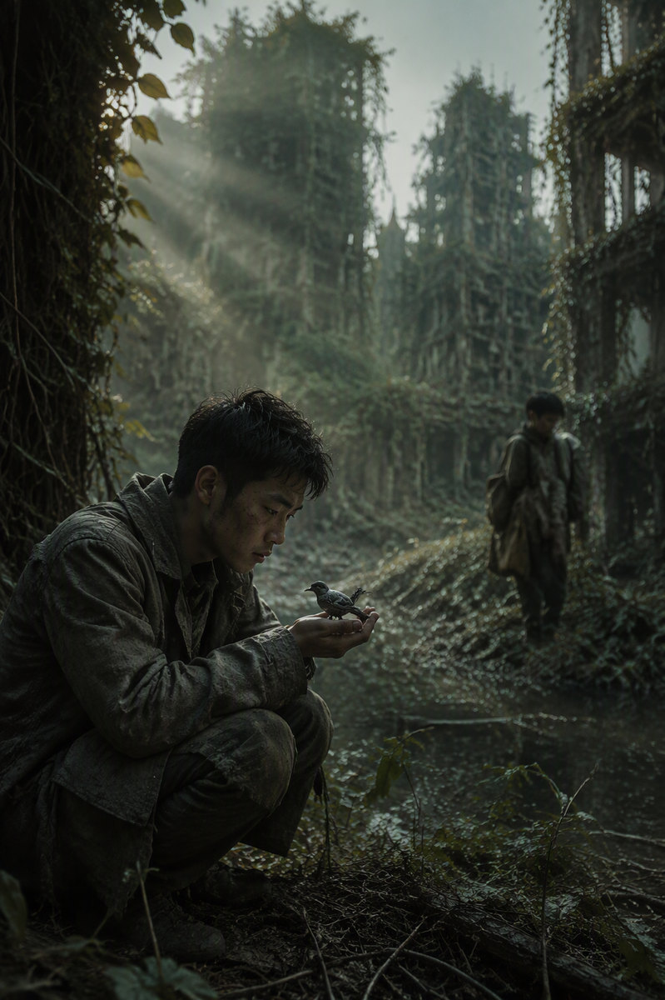
后来的五年，我们做的事，就是往外走。
一个人走一天，走三十公里。五十个人走五年，走得比任何一个人一辈子都远。
我们沿着那条路走。路会分岔，我们就分头走，走完回来，把走过的画在一张很大的布上。
第五年，那块布上的线已经有几十条了。第五年秋天，有一条线走到了一个地方。
最先到那儿的是小满。他是第一批发现路的那批人里，跑得最快的那个。
他们走了十一天，走到一片很大的、平的、被水围着的地方。他们在水边上停下来。
他们看见的，是我们后来叫"大墟"的地方。
我是在第九天夜里接到消息的。小满派回来的人，是跑着回来的，跑了四天。
他说：找到了一座城。
我说：什么城。
他说：很大。比我们村子大一千倍。
我们走了半个月，才到那个地方。
我先说我看见的第一眼是什么：那不是一样东西，那是很多很多的东西，堆在一起。
灰白色的、四方的、很高的东西，一根一根立着。有的立着，有的斜着，有的折了，折下来的部分架在别的上面。它们密密麻麻，从水边长到山那边。
它们的高度不一样。有的比我们村的树高一点，有的比树林里最高的树高三四倍。
整座城上面盖着一层绿。藤蔓从底下爬上去，爬到顶上，从窗户里进去，从另一个窗户里出来。有的楼被绿包得只剩一个形状。
风穿过那些楼的洞，从城的这一头到那一头，一直在响。
我们花了四个月，才把城的中心走了一遍。
城里有路。路是直的，一条一条横过去、竖过去，把城分成很多块。路的两边有很平的地方，上面也长了东西。
城里有桥。桥是给车走的——路上有车的痕迹。路上有一些已经烂得只剩形状的东西，四个轮子，或者很多个轮子，停在路边，停了很多年。
城里有水。不是河，是人造的：一条一条的沟，连着很多个方的池子，池子里全是草。
城里有东西在下面走。我们把几块板子揭开，底下是空的，有很长的通道。
第四个月，我们找到了一所学校。我们不知道那是什么，是后来才想明白的。
那是一个不太高的、四方的建筑。它的周围有一块空地，那是我们整座城里唯一一块没有长树的空地，因为那块地是硬的，硬的东西下面长不了树。
那块地上，有几个已经烂得只剩架子的、很高的东西。它们像秋千。
我们进了那个建筑。
里面有很多很小的东西，一排一排地摆着，摆得很整齐。
那些小东西，是给小孩子坐的。一排有六个，一共四排，二十四个。它们上面有很小的板子，那些板子前面，还有一张小桌子。
我们站在那儿很久。
后来小满的一个同伴，他叫阿木，比我小十几岁，他走过去，把其中一个扶起来，坐了下去。
他坐在那个小东西里面，膝盖几乎顶到了下巴。他坐了一会儿，站起来。
他说："这个是给小孩的。"
他说："他们那么小。"
那个屋子最前面，有一块很大的、黑的、平的板。板上面有字。
字是很浅的颜色，已经快看不见了。我们用手擦了半天，用湿布擦了半天，才让它们显出来一点。
那是一行一行写得很整齐的字。
我们看不懂。不是符号，不是画。那是字，是跟我们一样的东西，可我们不认识。
森在机子里听我们描述的时候，说："写下来。一个字一个字，照着画下来，给我带回去。"
那天下午，我们在那个屋子里待了很久。
我在那二十四个小东西的中间来回走了几趟。
我想到一件很奇怪的事。
我想，很多很多年以前，有二十四个小孩，坐在这儿。他们坐在自己的位子上，抬头看前面那块黑板。黑板前面站着一个大人，大人在讲什么。
那二十四个小孩，有的听，有的不听。
城里的东西，我们后来慢慢学会了看。
最先看懂的，是"家"。
一栋楼里有很多间屋子。有的屋子大，有的小。有的屋子只有一张桌子，一个椅子，一个睡觉的地方。
有的屋子不一样。那种屋子里，墙上有一道一道的横道，从低到高，一道比一道高。
我们在灰星上，也这么干。孩子长高，就让他靠着墙，用炭画一道，第二年再画一道。我们那儿叫"长道"。
还有一样东西，我们看了很久才明白。
鞋。
城里的废墟里，有很多鞋。不是我们这种皮靴，是布的，是软的，是各种颜色的。有的很大，有的很小。
最小的那种，只有我一个手掌那么长。一双一双，摆在一个箱子里。
那些鞋子，大部分是一对的，左脚的、右脚的，摆在一起。
我们那天，没有一个人说话。
后来言说了一句话。她说："他们也是一家一家的。"
那天晚上，我们点着火，坐在那栋楼的外面。楼很高，塌了一半。
有一个人说：这楼是干什么的。
小满说：住人的。
那个人说：住这么多人？
小满说：不是。是很多人，各住各的。
那个人想了很久，他说：那他们不认识自己的邻居吗。
小满说：认识。
他说：那他们为什么还要各住各的。
小满答不上来。
第五个月，我们找到了那个东西。
它是在一间塌了一半的屋子里。屋子里堆着很多烂掉的东西。地上有一层很厚的、黑色的泥。我用一根棍子在泥里拨。
我拨到一个硬的。我把它拨出来。
它在泥里泡了很多年，可它没有烂。
那是一只很小的、用塑料做的东西。它像一只鸟。它的翅膀是合着的。
我把它拿在手里，站直了。我没有说话。
我身边有人在说话，在问我这是什么。我没有回答。我拿着那个东西，站了很久。
后来言走过来。她看了我手里那个东西一眼，看了很久。然后她抬起头，看着我。
她说："你……"
我说："我见过这个。"
我说："长得一模一样。"
她说："在哪儿。"
我说："在坟场。"
周围一下就静了，静得很彻底。
小满说："坟场是我们那儿的。"
我说："是。"
他说："坟场里那些船，是穿过十一年来的。"
我说："是。"
他说："这里的东西，怎么会跟坟场里的东西一样。"
我没有回答他。因为我不敢说。
我手里那只小鸟很轻，轻得像没有。它的翅膀是合着的。它在这个屋子里，被埋在泥里，埋了很久。
它跟一颗远在十一光年之外的星球上、一具冻在座位里的尸体旁边的东西，长得一模一样。
那天夜里，我们点着火。我把我们从那间屋子里带出来的所有东西，摆在火边。
有那只鸟。有一块很硬的、上面有字的板。有几块塑料。有一个铜的、圆的东西，上面也有字，上面还有一张脸。
我把那个圆的东西翻过来。背面刻着几个字。
那几个字，我认识。因为那几个字写的是：
一元
我把机子打开。
我说："森。"
我说："我们要带东西回来。"
森说："什么。"
我说："很多。"
我说："还有一件事。我在这儿，找到了一只跟我从坟场里拿出来过的一模一样的鸟。"
森没有说话。
它这一沉默，沉默了整整一个晚上。
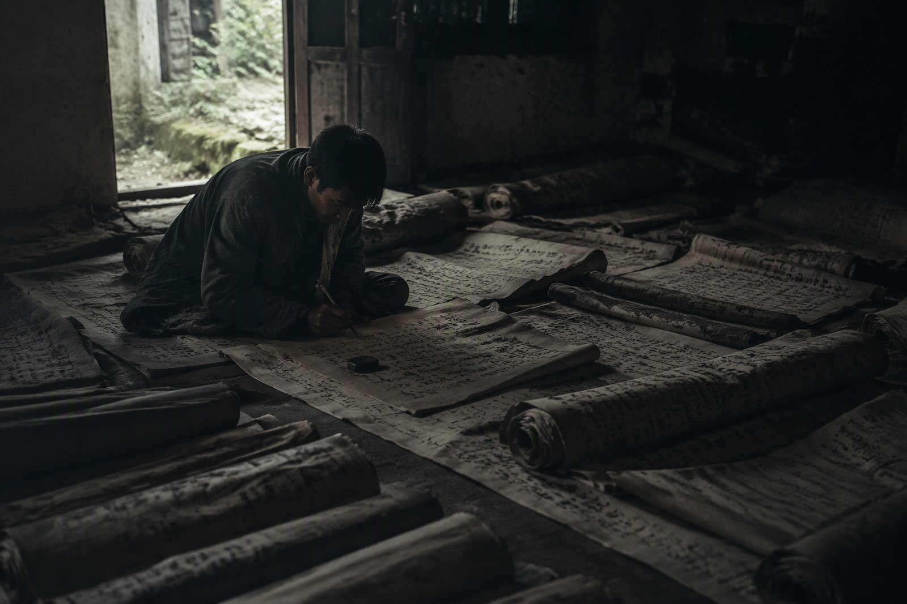
我们把那些东西运回来，用了两年。
不是路远，是东西太重。
那块黑板我们没有带回来，太大了。我们带回来的是抄下来的字。那种字，我们抄了四年，抄满了十九卷布。
那只小鸟，我一直带在身上。那个刻着"一元"的铜圆东西，也在我身上。
森看那些东西，看了三年。
它没有手，也没有眼睛。我们把每一块东西的尺寸、纹路、材料，一点一点地告诉它，或者用我们造的那些土机器量出来，画成图。
它读了那十九卷布。
它读的时候，屋子里是暗的，它把船上的电都抽去想了。
那三年里，我们的村子变成了一个镇。
变的不是房子，是事。
以前在灰星，人一辈子只做一件事：活到下一个雨季。现在不一样了，现在有人专门做一样事。
有人专门打铁，有人专门烧瓦，有人专门造船，有人专门教孩子。
有一个女人，专门做纸。她把树皮泡在河里，泡软，捣烂，摊平。她做的纸不好，厚薄不匀，写字会洇。可她做的纸，越来越多。
我们后来那本很厚的本子，就是用她的纸。
还有一个人，专门做一件事：他把我们说的话，记下来。
不是森记，是人记。
他叫阿木。他不识字，他是照着听，记在心里，晚上再找识字的人写。他说，他记不住长的，只记短的。他就把长的话剪短。
比如有人讲了一段话，讲三湖的冰有多厚。他记下来的是：
冰很厚，人掉下去就不见了。
他说：长的我记不住，短的我记得牢。
我后来想，灰星八百年，靠的就是这个。不是靠书记，是靠阿木这种人。把长的剪短，把重的说轻，一代一代，说下去。
那三年里，第一批生在船上的孩子长大了。最大的那个，那一年十六岁。
他们这一代人跟我们不一样。
他们会走很远的路，走到没人的地方去，一整天不回来。他们下雨的时候不躲。他们敢生吃没见过的东西。他们不怕黑。
他们不会说"省着"这个词。
有一个小姑娘，她叫海生，因为她娘生她的时候，我们还没找到海。她那一年八岁。
她第一次看见海的时候，是在岸边上，她蹲下去，捧了一口水，喝了一口，然后吐了。
她说："咸的。"
然后她说："为什么咸的水里有那么多鱼。"
第三年的秋天，森叫我。
那一天下午，它让所有的人都出去，只留下我。
我进去的时候，喇叭上先响的是一段电流的沙沙声。然后它说：
"沈砾。"
我说："嗯。"
它说："我读出来了。"
我说："读出什么了。"
它说："那些字。"
我说："那是什么。"
它说："你不要问我。"
我说："为什么。"
它说："你比我更有资格。"
它让我把一样东西拿过来。那块刻着字的、很硬的板子。
我把它放在桌子上。上面那一行字，我们擦了很多遍，已经能看清了。
我说："我不认识。"
森说："你认识。你只是没见过它写在这个地方。"
它说："沈砾，你打开你带来的那四千一百册书。"
我说："哪一本。"
它说："最后一本。编号三七一一。封面是蓝的，边角缺了。"
我把那本书拿出来了。
那本书是我们从灰星带下来的，它是石板的图书馆里的书之一。它不是印刷的，是手抄的，是很多很多年前，有人在石板里一笔一笔抄下来的。
我翻开它。那里面是很多字。我从小学的字，就是从这种书里学的。
森说："你看第三页。"
我翻到第三页。
第三页上，是一行很大的字。
那一行字，跟板子上那一行字，是一样的。
不是像。是一样的。
同一套字，同一个写法。板子上那些字，跟书里这一页上的字，笔画是一样的。连那种很细的收笔，都是一样的。
我把书放下。我又把板子拿起来。我把板子举到书旁边。
我的手开始抖。
我跟你说过一件事，我一直没说全。我不太会念书。
在灰星上，识字是一件奢侈的事。我们工兵班十三个人，能念全一段报的，只有两个。
我认字，是因为我娘。
她有一本册子，缺了小半本，是军里发的旧识字本。上面别的字都被水泡烂了，只有一页还好。那一页上有一个字，旁边配着一幅烂得只剩一角的图。
我就是从那一页开始认字的。我一个一个往下认，认了几年。
我认了几百个字。我认的都是那样的字：军里的字，账本上的字，铭牌上的字。
我认得它们。可我不知道它们是从哪儿来的。
我以为"字"就是我们灰星上的东西，就是账房先生写在纸上的那些竖横撇捺。
那天下午，我举着那块板子，看着上面的七个字。
那七个字，跟我册子上的字，笔画是一样的。连那种很细的收笔，都是一样的。
我那时候明白了一件事。
字不是我们灰星上的东西。
字是从这儿去的。
森说："沈砾。"
它说："我读不出来。我能认出它是字，我算得出它的形状，我对不上它的意思。我的档案里，那一部分被撕掉了。"
它说："可是你能读。你从小读的就是这种字。"
它说："你读。"
我站在桌子前面，看着那行字。
那行字刻在一块很硬的、灰色的板上。板子上面有一些很小的圆点，那是钉在墙上的痕迹。
我一个字一个字地看。第一个字。第二个字。第三个字。
我读了很久。我的头皮在发麻。
我读完了。
我抬起头。
我说："森。我读出来了。"
森说："念。"
我张开嘴。我念了那七个字。我念得很慢，我一个一个地念：
"东 海 市 第 三 小 学"
我念完之后，屋子里很静，只有电流的沙沙声。
我说："这是什么意思。"
森很久没有说话。然后它说：
"我不知道。"
它说："但我知道那是两个词。后四个，是一个东西的名字。"
它说："'小学'。那大概是，教书的地方。跟你坐在那二十四个小东西中间想的一样。"
我说："那前三个。"
它说："前三个，是一个地方的名字。'东海'。"
它停了一下。它说："我来拆给你听。"
它说："'东'，是一个方向。太阳出来的那一边。"
它说："'海'——"
它停住了。
我站在那个桌子前面。我手里拿着那块板子。
板子上那七个字，是我这辈子第一次读懂的、别人的字。
屋里的灯很亮，灯亮得晃眼。
我听见自己的呼吸。
我说："你接着说。"
森说："你自己已经说出来了。"
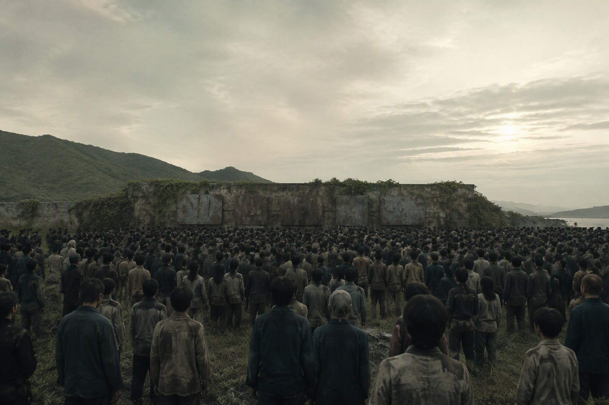
森讲了三天。
它不讲道理，它讲证据。
第一件证据，是字。
灰星石板的四千一百册书，是我们从坟场的船上拿下来的，石板的人用那些书教了几代人的字。这里的废墟上，刻着一样的字。一模一样的写法，一模一样的收笔。
第二件证据，是小鸟。
我手里那只塑料做的鸟，是这儿的泥里挖出来的。坟场里那具冻在座位上的尸体边上，有一只一样的。
第三件证据，是尺寸。
这里的台阶，我走上去不用调整步子。这里的椅子，我坐下去正合适。这里的门，我走过去不用低头。这里的所有东西，都是照着我们这种身子的尺寸造的。
第四件证据，是星图。
我们带下来的导航数据里，有一半。森把那一半，跟这里的天空对上了。它用了十一年，在这里的夜天上，找到了它认识的星。它说，对得上的有八成以上。
第四天，它说了最后一件事。
它说，它从灰的档案里，把那批船的"出发记录"拼出来了。
它说："那十七艘船，是单程船。它们的出发港，不在别的地方。"
它说："就在这里。"
我在那儿站了很久。
我说："那我们是什么。"
森说："第一批，流放船。第二批，逃亡船。第三批，遗落船。"
它说："三批，全部从这里出发。"
它说："目的地只有一处。"
它说："KN-8813-e。"
它说："灰星。"
我说："为什么。"
森说："第一批的档案，我读出了一部分。那上面有一栏，叫'罪名'。"
它说："罪名有很多种。偷水，暴动，不服管。"
它说："我看不懂大部分。但我看懂了一个词。"
我说："什么词。"
森说："'不得返回'。"
那天下午，森说了一句话。它说：
"沈砾，我要给你一个名字。"
我说："什么名字。"
它说："这批船的出发港，在这份记录里有一个编号。编号后面，跟着一个名字。"
它说："那个名字是两个字。你认得。"
我说："你念。"
森念了两个音。它念的是：
"地。"
"球。"
我不知道那是什么意思。
我说："这是什么。"
森说："我拆给你听。"
它说："'地'，是脚下那种硬的、能长东西的东西。'球'，是一个圆的、能滚的东西。"
它说："合起来，是一句描述。一个长着东西的圆球。"
它说："他们说，这个地方，叫地球。"
在叫全村人来的前一个晚上，森问了我一句话。它说："你确定要告诉他们吗。"
那天下午，我跟森说了很久。
我说：你不说，他们也会看出来。我说：这里的东西，跟我们长得一样，手一样，坐的椅子一样。我说：他们自己会想明白。
它说："我知道。我在想的是，我要不要做那个说的人。"
我说：你为什么怕。
它沉默了很久。
它说："因为我不是人。我算得出一颗星的位置，算不出一道题，一道人听了坏消息之后会做什么的题。"
它说："我在灰星上问过很多人问题。"
它说："我问过一个人：你第一次杀人的时候，那个人身上有什么。"
它说："他答的是：一块补丁。一块用另一种颜色的皮缝的补丁。"
它说："这个答案我读不出来。它也帮不了我。"
那天夜里，我做了一个决定。
我说：森。这件事，我来说。你说事实，我说人的部分。
它说："好。"
那天晚上，我们把全村的人叫到了河口的空地上。
一千零九十四个人。那是我们上船的时候一千二百人，减去死的、减去生的。
火堆点着。我站在火堆旁边。
我把森告诉我的事，从头讲了一遍。我讲字，讲小鸟，讲台阶，讲星图。最后我讲了那个名字。
我讲完之后，空地上很静。
静了很久。然后有人笑了一声。
笑的是小满。他二十八岁了。他笑了一声，然后就笑不出来了。他坐在地上，两手抱着头。
有一个老太太站起来了。她是我们这批里最老的，八十九岁。她在灰星上生了七个孩子，活了两个。
她走到我面前。
她说："你再说一遍。"
我说："这里就是我们的祖宗来的地方。"
她说："我们再往下走，走到的就是我们家。"
我说："是。"
她站在那儿，站了很久。然后她转过身，走回火堆边上，坐下来。
她说："那么我们这些年，算什么呢。"
那天夜里，有很多人没有睡。
有人在哭，有人在吵。有一对夫妻在吵，他们说好了，如果这里不好，就回船上去。现在他们不知道该说什么。
有几个年轻人，拿了一把锹，走到空地边上，开始挖土。他们挖了一个坑，不大，一人深。然后他们坐在那个坑边上，看着它。
言那天夜里来找我。她那年五十岁。
她坐在我旁边，很久没说话。后来她说："森说，它能读那半块板子了。"
我说："什么板子。"
她说："我十二岁从坟场里拿的那半块。"
那半块板子，是一块存储。它只有半块，另外半块，八百年里烂掉了。森以前读不出来，因为没有参照。现在它有了。
它读出来的，是一份个人档案。一份很短的档案。
第二天早上，森把它念给我们听。它的声音是平的，没有起伏。它念：
"姓名：陈望。"
"年龄：十九。"
"编号：四七三九一一。"
"罪名：非法聚集，传播违禁品。"
"处置：流放。"
"目的地：KN-8813-e。"
"备注：不得返回。"
它念完了。
后面还有一小段。不是文字，是一张图。
那张图很小，很糊，是一片脸的形状。
是那个十九岁的女孩的脸。
言坐在那儿。她手里拿着那半块板子。她拿着它，看了很久。
她说："我十二岁捡的。"
她说："我不知道是谁。"
她说："我带着它，走了三十八年。"
她抬起头。
她说："她跟我一样大。"
那天下午，言一个人去了海边。她在那儿坐到天黑。
天黑的时候，她把那半块板子举起来，对着那个一直响的东西。
她说了一句话。她说的是：
"陈望。"
"到了。"
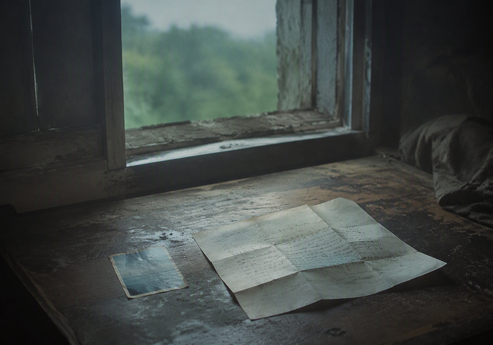
林知遥给我的那个信封，我带了二十三年。
它跟着我从三棵走到盐漠，从盐漠到船上，从船上到这里。它一直在我胸口那个口袋里，跟三块铭牌挤在一处。
我不打开它，不是因为不想，是因为她说的是"到了再看"。
我一直在等"到了"这件事，变成一个我自己承认的时刻。
那天夜里，森念完陈望的档案之后，我一个人走到河边。
我把那个信封掏出来。它已经很旧了，纸发黄，边角磨得圆了，有一道折痕，是压了很多年压出来的。
我把它拆开。
里面有三样东西：一张照片，一张折了两折的纸，还有一个很小的、方的、灰黑色的东西。是存储，跟言那半块一样，是整块的。
我先拿起那张照片。
我在石板见过它的副本。我以为我认识它。我错了。
副本是褪过色的。这一张，是它原来的样子。
它比我见过的任何东西都蓝。上面那一道光，是白的。它从顶上斜斜地打下来，打在水上，然后在水上碎成一片一片的。
照片的右下角，有一小块白的。很小，像一粒没擦干净的盐。
我在石板的时候，一直以为那是一粒盐。
这一次我看了很久。我看清了。
那不是盐。
那是一条船。
我看了很久，看到眼睛发酸。
然后我打开那张纸。
那张纸上的字很小，是用很细的笔写的。字很密，写满了整张，正反两面。是林知遥的手。我认得她的字，石板的人，字都写得很好。
我借着机子的光，一个字一个字地读。
她写的是：
沈砾：
你读这封信的时候，我已经不在了。
我算了一辈子。我这一辈子算过的所有事里，只有一件，我从来没有写在纸上过。今天写给你。
四十九年前，我二十三岁，第一次进石板的档案室。我看到了那张照片。
所有人都说那是伪造的。他们说，那是一个画师画的。因为我们的档案里，没有任何一个地方有过那样的水。
我没有跟他们争。我做了另一件事：我开始算。
我用那张照片上的光，算太阳的角度；用那些白色的线，算重力；用那一片蓝，算含水量。
算了十一年。
我算出来的结论是：这张照片不是画的。它不可能不是真的。它的每一处，都在互相印证。
伪造不了。
后来我又算了一件事。
我把坟场那批船的残骸数据，一页一页地抄下来，抄了二十年，抄满了四百三十七本本子。我没有森，我只能用手算。
我算出了航线。我算出了出发的地方。
我算出了——我们要去的那颗星球，不是一颗陌生的星球。它是这批船的出发港。
我算出来的那一夜，我在档案室坐到了天亮。天亮的时候，我做了一个决定：我不告诉任何人。
第一，因为没有人会信我。他们会说，一个不会打仗的女人，用二十年算出了一件荒唐的事。
第二，因为我不敢。
沈砾，你要明白，我不是不信我自己。我是信得太深了。
我知道，如果我说了，灰星上剩下的人会疯。他们会为这些座位疯得更厉害。他们会杀到最后一颗子弹，就为了去看一眼"家"。
而他们看不到。因为我们造不出船。
所以我把这个秘密，压了十八年。我一直在等一件事：等一个能造出船的东西。等一个能把这件事，变成真的东西。
我把我一辈子，都用来等它。
现在我等到了。
所以我把这件事交给你。因为你是那个做梦的人。你比我更早知道。你只是没有算过。
最后，我要你替我办一件事。
你到了之后，会有人哭。会有人说"我们是被赶出来的人"，会有人说"我们是被扔掉的"。
你告诉他们两句话。
第一句是：那颗星球，是我们自己把它弄坏的。
第二句是：它自己好了。
这第二句话，你要说得慢一点。
因为它是好消息。是这八百年来，唯一一件好消息。
林知遥
我把那张纸读完了。我读完之后，坐在河边，坐到天亮。
天亮的时候，我把那张纸重新折好，放回信封。我没有把它给别人看。我把里面那个灰黑色的存储块拿出来，握在手里。
那一块，比言那半块完整。
我坐在那儿的时候，想起了三棵。
那是我们走的那天。聚居地的人都来了，老盲被人背上山。三棵那块石头底下，站着一千多个人。
林知遥站在最外面。她七十二岁。她一直站在三棵那儿，没有往前一步。
我说："你上船。"
她说："名单上没有我。"
我说："森那儿我去说。"
她说："名单上本来有我。"
我说："为什么。"
她说："是我划掉的。"
她说："到了再看。"
我在河边坐着的时候，这句话又回来了。
到了再看。
我到了。我到了很久了。我一直在等一个我自己承认的"到了"。
其实我早就到了。我只是不敢承认。
因为一承认，就要开始想那些没到的人。
那三块铭牌在我胸口。我把手伸进去，摸了一下。
三块，一块不多，一块不少。
天亮的时候，有一条鱼从河里跳起来。这里的鱼会跳。水面上一响，就有一个白的、亮的东西翻出来，又落回去。
我小的时候，没有人跟我说过鱼会跳。
书里写过。四千一百册里，至少有两百处写过。
书里写的那个东西，此刻在我面前。
我没有叫人。我一个人看完了。
看完之后，我对自己说了一句话。我说：
"钉子，鱼会跳。"
第二天早上，我把存储块交给了森。
我说："这是林知遥的东西。"
森说："我知道。"
我说："你怎么知道。"
它说："因为这样的东西，她一共做了三块。"
它说："另外两块，在石板的档案室里。"
它说："上面只写了一行字。"
我说："什么字。"
森说："'如果可以，请把这张照片，带回去。'"
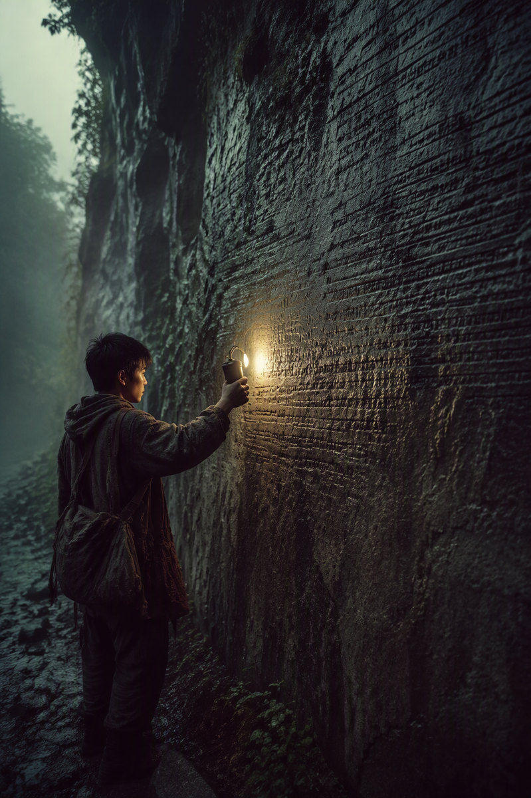
真相出来之后，我们做的第一件事，是数年份。
森用的办法很笨：它让我们去挖。挖地，挖泥，挖冰。它让我们在废墟里找那些能说明"什么时候"的东西。
我们挖了七年。
第一件找到的，是冰。
在北边，很远的地方，有一座很大的、全白的山。山上的冰是几千年一层一层积起来的。我们挖到了山里去，挖了一百八十米。
那一段冰，能读出一层一层的年。
森读出来的东西是这样：在一千年前的那一层，冰里面有很多很脏的东西，有黑的小颗粒，有一种烧过的味道，有很多很多不属于自然的东西。在九百年前的那一层，更脏。在八百年那一层，脏的东西开始变少。在七百年前那一层，就干净了。再往上，越来越干净。
最上面的那一层冰，几乎什么都不含。就是水，就是空气，就是很干净的东西。
第二件找到的，是树。
我们在废墟里挖出过很多被埋起来的、很粗的树干。树的年轮是能读的。
森读出来的结果是：在一千年左右，年轮很密，很窄，树长得慢。九百到八百年前，年轮有一段很乱的，有的地方几乎是空的，那段时间，树长不活。
然后从七百多年前开始，年轮变宽。越来越宽。
那是一种长得很舒服的树才会有的年轮。
第三件找到的，是土。
我们在废墟的边上找了一个很深的地方，往下挖了一个坑，挖了十二米。
那十二米，是分层的。
最上面两米，是很干净的、黑的、软的土，里面有很多活的根。
再往下，有一层大概半米厚的东西。那一层里什么都有：塑料的碎块、烧过的渣、化不开的金属、很细很细的、认不出是什么的东西。
森说，那一层，叫"我们"。
再往下，又是干净的土。
我们站在那个坑边上，看了很久。
第四件，是我们自己找到的。
我们在离大墟很远的地方，找到过一个很小的村子。那个村子不在路边，不在水边，它藏在一片山的背后，很不好找。
那个村子里只有十几间房子。房子都塌了。可有一件事很奇怪：那些房子塌的方式，跟大墟里不一样。
大墟的房子是被树顶塌的，是被雨冲塌的，是被时间啃掉的。
那些房子，是"用坏了的"。就是一家人一直在里面住，住到房顶漏，住到墙歪，然后搬出去，然后在旁边再盖一间。
我们在那十几间房子里，数出了三代。
我们在那个村子里找到一个屋子。
屋子里有一张桌子。桌子是用一块很硬的、不知道是什么的东西当桌面，用两根石头垫起来的。
桌子上刻着很多东西。
我们数过。那是道子，一道一道，很短，刻得很深。
我们数出来是：一万四千六百一十一道。
我们把这些告诉森。森沉默了很久。然后它说：
"一天一道。"
它说："一万四千六百一十一天。"
它说："四十年。"
那天晚上，没有人说话。
我想了很久，想在脑子里画出一个场面：一个人，在这个村子的最里面，在一间不漏雨的屋子里，每天在他的桌子上刻一道。刻了四十年。
我问森："他是等谁。"
森说："我不知道。但我知道一件事。"
我说："什么。"
它说："他刻到第一万四千六百一十一天，就停了。"
那一年冬天，我们做了一个决定：我们把那个村子的所有东西，原样留在那儿，不动它。
我们在村子外面立了一块牌子。牌子上刻了几个字。那几个字，是我写的。
我写的是：
这里有人等过
立完牌子，我在那儿多待了一天。
我想找到那个人。不是找到他的人，是找到他的一点别的什么。
我在那间屋子里翻了很久。找到的东西很少。一件衣服的碎片，不认得是什么做的，一碰就碎。一个很硬的、白的东西，像是牙。
还有一个东西。它在一根柱子的底下，靠着墙。
它是木头的，很小。
它是一条船。
刻得不好。船身是歪的，两头翘着。可你能看出来那是一条船。
我把那条木头船捧在手里，看了很久。
我想：他刻这条船的时候，刻的是哪一条。是载着他来的那一条，还是他没有等到的那一条。
我把那条船放回了原处。我没有带走它。
我跟森说：那间屋子里的东西，以后谁也不许动。
森说："记住了。"
我们走出那个村子的时候，我问森："他最后去哪儿了。"
森说："我不知道。那间屋子里，没有找到人。他不是死在那间屋子里的。"
我说："那他走出去了。"
森说："他走出去了。走到哪儿，我不知道。"
它停了很久。然后它说：
"从那天起，这颗星球上，就没有人了。"
它说："一直到我们来。"
那天回去的路上，我一直想着那张桌子。
一万四千六百一十一道。四十年的道子。
我想：他每天刻一道的时候，是早上刻，还是晚上刻。他刻完一道，会不会去门口看一眼。会不会有哪一天，他刻完了，坐在那儿没动。
我不会知道。
沈砾这个名字，是我妈起的。她起这个名字的时候，想的是一块石头。砾，就是很小的石头。
她说：小石头不挡路。
她说：小石头能跟着水走。
我想，那个刻道子的人，他的名字，没有人知道了。他的道子还在。
那也行。
那一年，我五十五岁。
第七年，森把所有的年份拼到了一起。它给我们的时间线是这样的：
约一千年前：这颗星球上的人，开始打仗，开始烧东西，开始把天弄脏。
约九百三十年前：最坏的时候。档案里有一段，全是空白。
约九百年前：第一批船出发。目的地是灰星。
约八百八十年到八百六十年之间：第二批、第三批船出发。
约八百五十年：最后一个离开的人，离开了这里。
约八百到七百五十年：这颗星球上，什么都没有了。没有人烧东西。
约七百五十年前：树开始长回来。
约六百年前：森林铺到了它铺不完的地方。有大的动物回来了。
约四百年前：这一层新的土，长到了两米厚。
然后，是我们。
森念完那张时间线的时候，我在场。屋里只有我一个人。
我说："这……"
我说："这意思是，这颗星球，它自己好了。"
森说："是。"
我说："那我们算什么。"
森说："你们不是被抛弃的人。"
它说："你们是被送走的人。"
它说："这里的那些人，他们知道自己把事情搞坏了。他们算出来，这颗星球要花几百年才能缓过来。"
它说："他们会弄坏它，是因为他们以为他们会一直在这儿。"
它说："当他们知道他们要把这儿弄坏的时候，他们做的最后一件事，是把最不容易在这儿活下来的那些人，先送走。送到一个，虽然很苦，但是还能让人活着的地方。"
我说："那说不通。被送到灰星的人，是犯人，是被赶走的人。"
森说："对。可赶走他们的人，也走了。"
它说："他们把最后一批人送上船的时候，自己也没打算留在这儿。"
它说："因为留下来的话，就是要跟这颗星球一起，等它慢慢缓过来。"
它说："那是几百年。"
它说："没有人能等几百年。"
我坐在那个屋子里面。外面在下雨。这里的雨是暖的。
我想起了灰星。
我想起灰星上有一座哨塔，在那个哨塔的最下面，有一箱我从坟场带回来的东西。我想起我在那艘船上，用一根钉子，在圆窗旁边刻了一个字。
那个字，现在还在那儿。在离这儿十一光年的一颗灰白色的星球上。
有一个人，在很久以前，坐在那扇圆窗前面，往外看。
他看的不是盐漠。
他看的是这里。
我对森说了一句话。我说：
"那些人送走犯人的时候，是在给这颗星球减负。"
森说："是。"
我说："那被送走的人，后来在那儿打了八百年的仗。"
森说："是。"
我说："那我们这八百年，算什么。"
森很久没有说话。它最后说的是：
"算活着。"
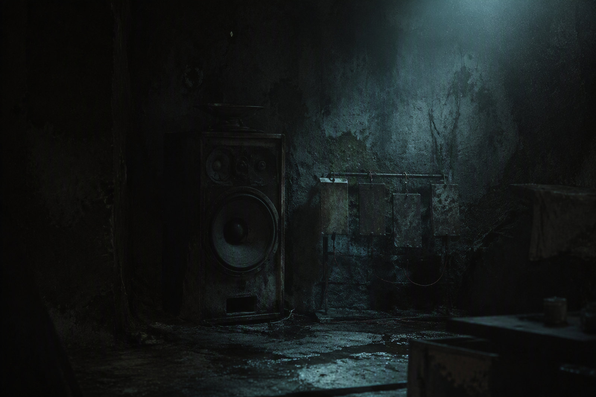
森的档案里，有一段东西，它一直没有给我们听。它说它拼不出来。
到第十二年，它拼出来了。
那天下午，它把全村的人都叫到河口。
它用的是那台从船上拆下来的喇叭。那台喇叭很大，我们把它架在一根很高的柱子上。
它说："我给你们听一段东西。"
它说："这段东西，是那批船在路上的时候，收到的一段广播。它们是走的时候收的，收了很多年，一直在收。"
它说："这段广播，一直重复同一句话。"
然后它放了。
喇叭里先出来的是沙沙的声音。那种沙沙声我们很熟，那是太空的声音。
然后，从那种沙沙声里，出来了一个人的声音。
是女人的声音。
她说话很慢，很清楚，一个字一个字地念。她念的是：
"KN-8813-e。"
"这里是地球。"
"收到请回复。"
然后停了四秒。然后她重新开始：
"KN-8813-e。"
"这里是地球。"
"收到请回复。"
那一句话，喇叭里放了四分钟。四分钟里，那句一模一样的话，重复了三十次。
我们一千多个人，站在河口，听那同一个女人的声音，说了三十遍同样的话。
森把声音关掉了。
它说："这一句话，一共播了三百一十七年。"
它说："它是自动的。那个女人的声音是从更早的档案里取出来的，机器一直在放。"
它说："它最后停了一次。停了以后，就没有再响过。"
有人问："为什么停。"
森说："因为发它的那个机器，没有电了。"
那天下午，森把那个机器在哪儿，算出来了。
它说，发这段广播的天线，在这儿往南，一千一百公里。它说，那座天线是从前的，它算过，那东西很高。它说，它可能还在。
我们走了一年零两个月。去的时候是十四个人。
我们带的东西：四辆车，十二桶水，两箱干麦，七块备用的车轴。
我们走过平原，走过一条很宽的河，走过一片很大的热的地方。那里的树什么都不穿，长得比我们这儿的密，人走进去像走进水里，看不到天。那儿的空气是湿的，你站在那儿不动，身上也会出水。我们十四个人在里面走了四十天，走出来的时候，瘦了三个。
走过那个热的地方，是一片石头。石头什么都没有，没有水，没有草，没有活的东西。我们在那里面走了两个月。
那两个月，我们喝的是自己带的水，一天两次，一次一口。那口水的味道，我一辈子记得——我们把它倒在一块铁上，先舔铁，再舔嘴唇。
那是我这辈子第二次为水省。第一次是在灰星。
第十三个月，我们看见了那个东西。
它在一片很大的、平的、什么都没有的地方上。
它很高。它比我们见过的所有东西都高。它是一根杆子，从地上立起来，往上，往上，最后细得看不太清。
它中间断了。断的那一截斜着挂在那儿，另一头拖到地上，拖了很远。
可它还立着。
我们在那根杆子底下，找到了一大片房子。
那些房子比大墟的矮，比大墟的破。它们的墙塌了，顶没有了，可它们的形状还在。
我们走进去。我们找到了一个地方，那是这片房子的中心。那里有一个屋子，比别的屋子结实。它塌了一半，可是另外一半还在。
那一半里面，有很多很密的、一格一格的柜子。柜子上有很多小的灯。
灯是灭的。
我们在那里面找了六天。
第六天，我们找到了一个本子。不是印的，是手写的。
它摊在一张台子上，上面压着一块石头。纸已经脆了。我们戴着最软的布，一页一页地翻。
那个本子上写的是这个机器的事：哪一天换电池，哪一天有一根线坏了，哪一天风大，把一根什么东西吹断了。
一开始，字写得很快，很随便，有好几个人的笔迹。后来，笔迹越来越少。
三年之后，只剩一种笔迹。
最后那几页，字写得很慢，很大。写的人的手大概不稳了。
最后一位写着：
第九百二十七年，第一百八十一天。
电池组三号失效。我用一号和二号线过了它。
还能撑四个月。
再翻一页。
第九百二十七年，第三百零九天。
今天最后一次，我说了那句话。
我把它录下来，让它自己说。
它一天说一次，能说八年。
再翻一页。
那一页只有三行。字写得非常慢，笔画在纸上拖着。上面写的是：
第九百三十四年，第一百一十四天。
我从今天起听不见了。
我不知道它还在不在说。
如果有人在看这个本子——
我们尽力了。
请你们不要怪我们。
再翻一页。
那一页上没有别的东西。
只有一个字。写得很大，占了整张纸。笔在抖，最后一横拖了出去。
那个字是：
好。
我拿着那张纸，站了很久。
我问森：这是什么意思。
森说："那是回话。那边的机器问了三百年'收到请回复'。他回了一个字。"
我说："那边收到了吗。"
森说："没有。他写这个字的时候，那台机器已经不响了。"
它说："它最后一次响，是第九百二十七年。"
它说："他写这个字，是第九百二十九年。"
我说："隔着两年？"
森说："隔着两年。"
它说："他知道它不会响了。"
它说："他还是写了。"
我们把那一页纸，戴着手套，从本子上裁下来，装进一个铁盒子里。
后来那个铁盒子，跟着我们走了一年零两个月，回到了村子里。它现在在森那间屋子里。
我把那个本子合上的时候，外面正在下雨。
我们十四个人，站在那个塌了一半的屋子里，谁都没有动。雨从没有顶的那一半落进来，落在那些灭了的灯上，落在那些柜子上。
那天夜里，我在那片房子里走了一圈。
我在最外面的一间屋子里，找到了一个很平的东西。是墙。它还立着。
我从怀里掏出那根钉子。
我在那面墙上，刻了一行字。我刻的是：
收到了。
我们来晚了。
我们回来了。
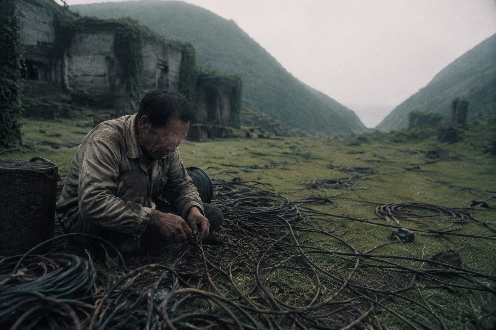
我回到河口的时候，是第八年。
我把那个本子放在森前面。它看不见本子，我念给它听。
我念完那三行的时候，屋子里很安静。
然后我说了一句话。我说：
"我要回信。"
森很久没有说话。然后它说：
"你知道那要什么吗。"
我说："你说。"
它说："距离是十一点四光年。我发出去，要走十一年零五个月。他们听懂了，回一句，再走十一年零五个月。"
它说："最快的一次问答，要二十二年零十个月。"
我说："我知道。"
它说："沈砾，你今年五十五岁。"
我说："我知道。"
我说："你发不发。"
森说："发。"
它说："但是有一件事，我要先跟你说清楚。"
它说，发那一段话，需要一次很大的能量。
大到什么程度？大到要用掉船里最后那一点。
那一点，是森藏起来的。它从我们上岸的那一天起，就把船的动力舱封住了。它没有告诉我们为什么。
现在我知道了。
我说："用完之后呢。"
森说："我会停下来。"
我说："停多久。"
森说："我不知道。可能很久。"
它说："可能不回来。"
那天下午，我在村子里走了一圈。
村子那时候有一千二百多人。屋子是木头的，屋顶是茅草压的。
铁匠铺里还亮着。打铁的是个年轻人，他是船上生的。他从门口叫住了我。
他说："砾叔。"
他说："森是不是要没了。"
我说："谁跟你说的。"
他说："没人跟我说。是我猜的。它这几天，把所有的电都收着。它不收电的时候，就是要干一件大事。"
他说："我这辈子见过的所有大事，都要死人。"
我说："这次不一定。"
他说："我知道。我不是舍不得它。"
他说："我是舍不得它记住的那些人。"
他把炉子里一块没烧完的铁夹出来，扔进水里。水里响了一声，冒起一股白气。
他说："它要是没了，那六百九十三个人的名字，还有谁记得。"
我说："我记得。"
他说："你记得几个。"
我没有说话。
那六百九十三个人，我一个名字也说不出来。我只知道那个数。
我从铁匠铺出来，一直走到天黑。天黑的时候，我去了森那儿。
那天晚上，我没有回家。我坐在森那个屋子外面，坐了一夜。
天亮的时候，我进去，我说："不发。"
森说："为什么。"
我说："因为发完你就没了。你是我们唯一的东西。你是唯一一个知道全部事情的东西。你没了，我们就是一帮在别人家院子里过日子的、什么也不知道的人。"
我说："而且——"
我说："下面那六百九十三个人，还在那儿。他们不知道我们到了哪儿，他们不知道我们还活着。他们在等一个消息。"
我说："可是你比消息重要。"
森听完，很久没有说话。然后它说了一段话。
它说："沈砾，你在灰星上，认识一个七十二岁的老太太。"
我说："我知道。"
它说："她跟你说的最后一句是什么。"
我想了想。我说："她说，她坐在那块石头上，等一个很长很长的消息。"
森说："对。"
它说："那个消息，现在只有我们能发。"
它说："你可以把我当一件东西。可是沈砾，我不是一件东西。"
它说："我从醒来的第二天起，就在等一件事：我在等一个我从来没有见过的地方，变成我能看见的地方。"
它说："我等到了。"
它说："现在轮到我做一件事。"
那天下午，我说了一句话。我说："那我们投票。"
森说："不投。"
我说："为什么不投。"
它说："因为投票的人，会有一部分希望我活着。我不想要那个票数。"
我说："那你凭什么决定。"
森说："凭林知遥。"
我愣住了。
它说："她跟你说了那句话。'我坐在石头上，等一个很长很长的消息。'"
它说："沈砾，她等的那句话，是十一个字。"
它说："'我们到了，这里有海，我们活着。'"
它说："这十一个字，我可以发出去。我发出去，她就是收到了。"
它说："她七十多岁了，她等不了二十二年。"
它说："所以我要发。她要自己听见。"
我说："那我们得先干一件事。"
森说："什么。"
我说："把电从这儿拉到崖上。"
崖离村子四公里。
我们要从那艘船的残骸里，把最后那一段能在外面用的电缆拆出来。那段电缆长六十米。只有六十米。
我们用六十米的电缆，接了两千多米的铜线。
铜线是从大墟里挖出来的。我们挖了四个月。城里的每一根柱子，每一面墙，我们都翻过。挖出来的铜，接起来的长度是一万一千多米。
每一段接的地方，都要焊。焊的活儿，是石板的老人带着年轻人干的。他们在山路上干了一个雨季。
那一个雨季，下了四十七天。
雨中焊的电线，是要漏的。我们不知道。前三次送电，一下雨就烧。
后来我们学会了：接头的地方，要用松脂封，外面裹一层煮过的布。
第四十三天，电通了。
那天夜里，崖上那面东西亮了一下。亮了一下，就灭了。
我们在崖上站着，谁都没有说话。因为它亮的那一下，说明那一万一千米上的每一个接头，都是通的。
我在那儿站了很久。
我说："你要发。"
森说："我要发。"
那天晚上，我把村里所有人都叫到河口。我把森的话，从头到尾讲了一遍。
我讲完之后，没有人说话。
过了很久，小满站起来了。他二十八岁，他是我们这一批里最会算数的人。
他说："森。"
他说："你发出去的时候，你自己在哪儿。"
森说："我在这儿。"
小满说："那发完之后，你还在那儿吗。"
森说："我不知道。"
小满走下去，走到那根架着喇叭的柱子底下。他抬着头。
他说："那你走之前，你好歹告诉我们，你叫什么。"
所有人都愣住了。
我们认识森，快二十年了。我们知道它是"森"。我们知道那是三个木。
可我们从来没有问过它，它自己叫它什么。
森沉默了很久。它说：
"我没有名字。"
它说："林知遥给我起过一个。那个名字，是给你们用的。"
它说："如果我有一个自己的名字，那应该是……"
它停了一下。
它说："我不知道。"
它说："我到过的唯一一个不是灰的地方，是这里。"
它说："所以如果要起，我想叫这里。"
那天晚上，我们给它起了一个名字。
我们叫它"岸"。
因为我们这些人，一辈子都在水里，我们是漂着的。它是我们靠上去的第一个东西。
从那天起，我们叫它岸。
可我叫惯了。一直到它停下来那天，我在心里叫的，都是森。
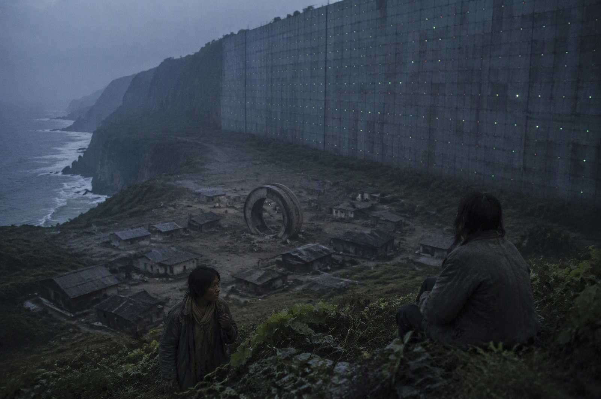
要发一句话出去，需要一样东西。
一根杆子。
森算出来的尺寸是这样的：受话的那一头，在十一点四光年以外。我们要发的不是"喂"那么一声。我们要发的是十一个字，要让人听清楚，要让人知道是我们，要知道我们在哪儿。
森说，那需要一面很平的东西，一千二百平方米。
一千二百平方米，是三个我们村子的空地那么大。
森说，那面东西要非常平。它平到什么程度？平到它上面任何一个地方的高低差，不能超过一毫米。
我们说：那用什么做。
森说："船。"
那几天，村里很安静。
船在东边十九公里的地方。它在那儿躺了十五年。
我们从舱里出来，第一脚踩在这颗星球上，就是从它肚子里出来的。我们在它肚子里出生过。我们在它肚子里死了三百多个人。它的中段有一面墙，上面挂着三百多块铭牌。
森说：那些牌，先取下来。
反对的是老孙。他那年五十五岁，是当年跟我一起走树林、在水边喝到吐的那个兵。
他说："那是我们的船。没有它，我们早就冻死在灰星上了。拆了它，我们是什么。"
我说："是一群有家、但是还没告诉家里人的人。"
那一年秋天，我们开始拆船。
那是一件很难形容的事。我们拆它，拆了四年。
我们拆的第一块，是最外面那块最大的板子。九个人一起，用撬棍，用绳子，用一整天，才把它弄下来。弄下来的时候，那块板子砸在沙上，声音很大。
所有人都站着看。然后我们把它抬上车，拉回去。
我们把每一块板子，都抬到海边的崖上。
那一面崖对着南边。森说，灰星在那个方向。
我们把板子一块一块地砸平。
砸平是最费人力的活儿。砸一块板子要三个人，一个人扶着，两个人捶。捶要捶几千下。森给了我们一个模子，把模子往板子上一卡，哪里高，哪里就要捶。捶到模子能贴住，就算好。
一毫米。
我们第一年砸出来的板子，能用的不到三分之一。第二年好些。第三年，我们就顺手了。
那个大东西立起来之前，先立起来的是别的东西。我们得先有铁。
那个东西的骨架，是用船上最粗的那些梁焊的。焊的时候，海边的风把火吹得乱晃。
我们焊了两年。骨架立起来的时候，村里的人都去看。它不像我们想的东西，它像一个很大的、空着的框。
阿岸那年十二岁。她每天放学都往崖上跑，跑上去，站在那个框底下，仰着头看。有一次我去崖上，看见她一个人坐在框底下。我问她：你在干什么。
她说：我在等它长满。
那些年，我们一块一块地拆船。拆一块，用一块。拆下来的板子，先拿去做那面东西。
有一件事，我们做得很小心。船的中间，有一样东西，我们一直没拆。
那是森。
搬森的那天，风很大。它在一个大概半张桌子那么大的壳里，我们把它从船里搬出来的时候，是六个人抬的。阿岸走在前面，给我们开门。她那年十二岁，还没有那个木箱高，她把手扶在箱子的一角，一路扶着。
后来她说，她那天觉得，箱子里装着一个人。
那些年，村里出生了四十六个孩子。他们在那些板子中间长大。他们会走路的时候，脚下踩的就是船。
有一个小女孩叫阿岸。她三岁开始，就跟着她娘上崖。她娘的活儿是递工具。她的活儿是在旁边坐着，把掉在地上的小钉子捡起来，放到一个袋子里。
她捡了六年。
第九年，那面东西立起来了。
我说它是"立起来"，那是我说错了。它不是立着的。
它是一面很大很大的、斜着的、朝着天的东西。它是用一万一千多块板子拼起来的，每一块板子都有焊缝，每一道焊缝都磨过。它整个看上去，是一整片的银白的、灰白的、带着一点褐色的东西。上面有很多道细的、横的、竖的纹。
风一过，它会有一点很轻的响，像很多小的东西在一起呼吸。
它对着南边。每天都对着南边。
它立起来的那天，我们在崖上站了很久。
阿岸那年十二岁。她站在我旁边，仰着头往上看。
她说："爷爷，它能听见吗。"
我说："它能说。"
她说："那它能听见吗。"
我说："不知道。"
她说："那要是它说了，那边没人听呢。"
我没有回答她。
那天下午，森自己说了一句话。
它说："它会不会被听见，不归我管。"
它说："我只管说。"
我们完成它的时候，是那一年的冬天。那天下午，所有人都上了崖。
一千二百多个人，站在那面东西下面。森通过很多人手里的机子说话。
它说："还差最后一步。"
我说："什么。"
它说："等。"
我说："等什么。"
它说："等灰星升到我算出来的那个位置上。一年只有不到四个月。"
它说："今年错过了。"
它说："等明年。"
我们从崖上下来的时候，天在变颜色。我走在最后。
我回头看了一下那面东西。它很大。它比大墟里那些最高的东西还大。
它立在我们这颗星球的边上，对着三千四百亿公里以外的一个很小的、灰白色的点。
而它自己，是一个很小的、灰白色的点上面的一群人造的。
那天夜里，我做了一件事。我去了船原来躺着的地方。
那地方现在是一块平地，长满了草。在平地的中间，我们留了一样东西。
那是森说的。它说：那个圆孔，别拆。
我们把那个圆孔切了下来，连着一小块舱壁。我们把它用石头垫起来，立在村子的正中间。
它对着东边。那是海的方向。
我在那儿站了很久。
这块圆孔边上，有一个字，是我很多年前，在灰星上、在一艘摔了八百年的船的舱壁上刻的。
那个字，跟着这块舱壁，走了十一点四光年，到了这里。
我伸手摸了一下它。
它还在。
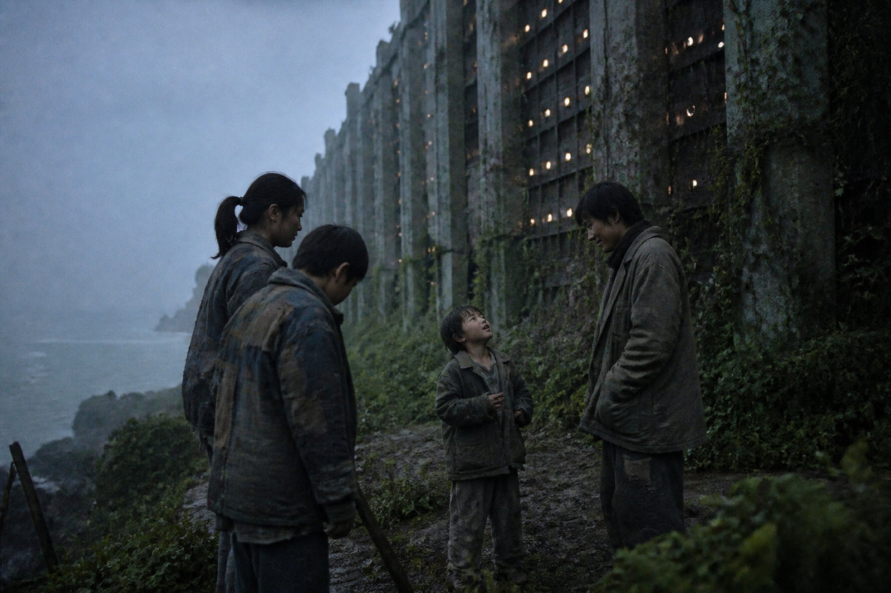
那一年，我们把森搬到了崖上。
它自己说，要搬。
它的核心在一个大概半张桌子那么大的壳里。那个壳，是当年言带人从坟场最深的那间舱里抬出来的。它在灰星上躺了八百年，在我们船上躺了十一年。
我们把它从船的残骸里卸下来。
卸的时候，森说了一句话。它说："轻一点。"
我说："你疼吗。"
它说："不疼。"
它说："可这是我第一次，被你们抬着走。"
我们八个人，用一辆板车，把那个壳推到了崖上。推了六个钟头。
那个壳一路上没说话。到了崖顶，它才说："登记一下。"
我说："登记什么。"
它说："我现在在崖上。如果以后有人问'岸在哪儿'，你们就说：在崖上。"
那一年，灰星在它的位置上，一共有一百一十七天。
那一百一十七天里，每天的夜里，我们都在崖上。森在上面反复地算，反复地试。它说，发出去之前，它要把每一个字都想清楚。
因为只有一次。
它把要说的话写出来，念给我们听。它念的是：
这里是岸。
我们来自灰星。编号 KN-8813-e。
我们是第三批船的人。出发时一千二百，抵达一千零九十四。
我们航行了十一年零七个月。
我们到了。
这里有海。有森林。有能喝的水。我们的孩子在这里出生。
这里就是那批船的出发港。
林知遥：你算对了。
请回答。
它念完之后，我们说：改。
它先说：改哪儿。
老孙说：把我们所有人的名字加上去。一千零九十四个。
森说：那要发很久。
老孙说：那就发很久。
森说：好。
小满说：加一句"我们没打架"。
大家都愣了。
小满说：我们在灰星上打了八百年。他们要是知道我们到了这儿，第一个问的就是，你们又打了没有。
森说：好。
它加了一句：我们没打架。
阿岸那年十二岁。她一直坐在那个壳旁边。
她说：加一句"你们的麦子长出来了"。
森说：什么麦子。
她说：我们从灰星带来的。
森说：好。
它加了一句：你们给的种子，长出来了。
最后是我。
我说：加两句。
森说：念。
我说："老鸦，我们活着。你们要活着。"
森说：第二句。
我说："灰雀的歌词，我在这儿唱过了。"
森沉默了很久。它说：
"这句我不加。"
我说："为什么。"
它说："因为'灰雀'这个名字，只有你们几个人认得。发出去的话，要让那边六百九十三个人，都能听懂。"
它说："我把它改成——"
它停下来。它说："我给你念一遍。"
它念的那一句是：
有一首歌，你们都会唱。
那首歌是真的。
那天夜里，我们没有一个人说话。
最后，那一段话一共是二百三十一个字。
森说，这是我们能发出去的，最后一句话。
灰星在那一年的第一百一十四天，到了位置上。
那几天，我一个人上过两次崖。
第一次，我把三块铭牌掏出来，摆在那个壳旁边。灰雀的，老马的，钉子的。
我说："我让他们看看。"
森说："他们看不见。"
我说："我知道。是我让他们看看。"
森很久没有说话。然后它说：
"你放上来的时候，手在抖。"
我说："没有。"
它说："你在抖。我读得到你。你手上的动作，比平时慢。"
它说："你把他们放下了。"
我说："放在这儿，你能替我看。"
森说："我能。我会记得他们三个。"
第二次上崖，是前一天。我把那三块铭牌，又收回了胸口，缝好。
缝的时候，针戳了手指一下。血出来了一点。我用嘴含了一下。
我说："森。我改主意了。还是我带着。"
森说："好。你带着，比放在这儿好。"
我说："为什么。"
它说："因为过一会儿，我要发一句话。发完那句话，我可能会没有力气。"
它说："到那时候，你胸口那八十九克，就是你自己的了。"
我站在那儿，看了一会儿崖底下。崖底下是黑的。我听得见海。
我想起灰星上的一个晚上。那一年我十九岁。
我站在聚居地最高的一处石头上，往南看。南边什么都没有，只有风。风里带着沙，打在脸上，很疼。
那天晚上我看了很久。我在等一个我自己也说不上来的东西。
现在我在崖上。我等的那个东西，在我脚底下响着。
前一天夜里，我在崖上坐到很晚。
阿岸上来找我。她那时候十二岁。她抱着一块布，坐在我旁边。
她说："爷爷，你怕不怕。"
我说："怕。"
她说："怕什么。"
我说："我怕那边没有人听。我怕我们说的这句话，走十一年零五个月，走到那儿的时候，那边已经没有人了。我怕它落在一片空的冰上。"
阿岸想了很久。她说：
"那它落在冰上，也是落在了那儿。"
我没有说话。我坐在那儿，看着崖底下那片黑的东西。海在响。
过了一会儿，森在喇叭里说了一句话。它说：
"阿岸说得对。话发出去，就不是我的了。它去哪儿，落在谁那儿，都不是我能管的。"
它说："我能管的，只有说清楚。"
那天夜里，崖上站满了人。
一千二百多个人。念过书的站在前面，没念过书的站在后面。孩子被抱在肩膀上。
没有灯。森说，电要留着。
森说："开始。"
那一面东西，先是响了一声。那一声很低，很低，是那种你能听见、但耳朵说不清是什么的声音。
然后，那一片银白的、灰白的板子上，开始有东西。不是光，是亮。
它的最底下先亮起来，一层一层往上爬，爬过每一道焊缝，每一道纹。爬到最上面的时候，整面东西都亮着。
它亮的时候，周围的空气里有一种很细的沙沙声。
风停了。海没有停。海在崖底下，一直在响。
森说："发。"
我不知道该怎么形容那一下。
我只记得，我的头发竖起来了。我身边的每一个人，头发都竖起来了。那只是一种很小的感觉，像有很多很小的东西，从你身上过去。
那一面东西，亮到刺眼。然后它把所有的光，都收拢到最中间那一点上。
那一点对着南边，对着天，对着一个我们谁也看不见的地方。
它亮了多久，我不知道。
它灭了。
灭了之后，崖上很黑。星空重新出来。
我站在那儿，等着。
我说："森。发出去了吗。"
没有回答。
我说："森。"
我说："岸。"
没有回答。
那天夜里，我们在崖上守到天亮。一千二百多个人，没有人走。
天亮的时候，太阳从海那边出来。那种光是白的，打在那面东西上，把它照成一片普通的、安静的银灰色。
它现在就是一面很大的、没有用的东西。它已经把它要说的话说完了。
阿岸是第一个哭的。她那年十二岁。她坐在那个壳旁边，两只手抱着它。
她说："岸。"
她说："你疼不疼。"
我们没有把它搬下来。
它说过，它在崖上。
我们就让它留在那儿。
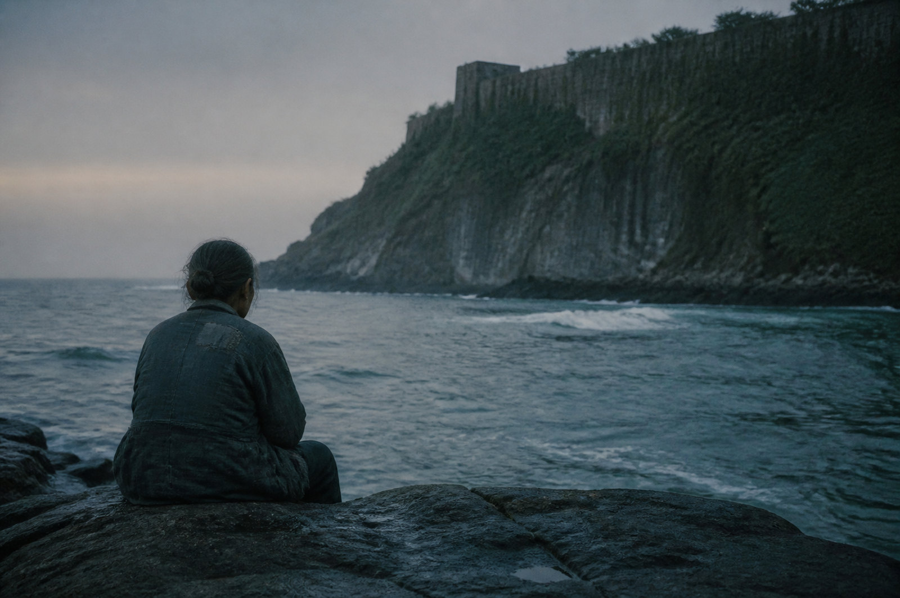
森停下来之后，我们才发现一件事。
我们什么都不会。
在灰星上，我们靠什么活？靠抢，靠冻，靠熬。靠有人告诉你怎么挖沟，怎么配水，怎么在零下八十度里把一个人抬回来。
到这里的前十五年，我们靠什么活？
靠森。
哪块地能种，哪天要下雨，水从哪儿引，病用什么草治，孩子发烧到多少度要切开，铁怎么打，全是它说的。它说的时候，我们照做。
我们从来不问为什么。
它停下来之后的第一个月，我们就出了三件事。
第一件，是我们把一个池子挖错了方向。挖完之后，水不往我们这边流，往别的地方流。等到我们发现的时候，三块地已经干了。
第二件，是有一群孩子吃了林子里的蘑菇。十一个孩子，死了四个。
第三件，是那年冬天有一场很冷的雨。我们不知道那是什么意思。我们按灰星的经验，全体进屋子，封严。结果屋子里的火把一氧化碳灌满了，死了两个大人。
那一年，我坐在村子的中间，坐了很久。
我看着村子中间那块东西。那个圆孔。那块舱壁。
我问它："我们怎么办。"
它当然没有回答。
第一天夜里，我把那四千一百册书翻出来了。
那四千一百册书，我们在灰星上看了很多年。可我们看它们，是把它当"字"看的，石板的人用它们教我们认字。我们从来没有把它们当"东西"看过。
那一年冬天，我坐下来，从头开始读。
我读的第一本，是一本讲种地的书。它讲得很细。它讲什么时候下种，土要多深，一亩地要多少水，虫子来了怎么办。
我读了四十天。
读完那一天，我走到田边上，蹲下来。我看着那块地。我看了很久。
然后我站起来了。
我把村里剩下的人都叫到河口的空地上。我说：
"这本书，我们今天开始读。"
那一年，我们种了第一块地，是不靠森种的。
不是我们故意不靠它，是它停了。停了之后，那块地已经种下去了。
种下去之后，出了问题。问题出在虫子上。
灰星上没有虫子。灰星的活物都在地下。我们没见过种在地里的东西，会被另一种活的东西吃。
那一年，麦子出穗的时候，来了很多的虫。叶子被咬得像筛子。
我们去找森。森不在。
我们去找书。
我们翻了三天的书。
第四天，是一个叫阿木的人翻到的。他不识字，他是照着图找的。
那本书上画着一种虫，旁边画着一种鸟。书上写：这种鸟吃这种虫。
我们不知道这儿的鸟叫什么，也不知道它吃不吃。但书上说，那种鸟喜欢一种味道，一种酸的味道。
我们试着把酸的浆果捣碎，洒在地里。
第二天，来了三只鸟。第三天，来了十几只。
虫子没有了。
那年秋天，我们收了第一块地。收得不多。收上来的麦子，只够全村吃十天。
但那是我们自己种的。
那天晚上，我把那袋麦子，放到森那间屋子的门口。
我说：森。
它没有回答。
我说：今年的麦子，是我们自己种的。
我说：你在的时候，我们什么都问你。你不在的时候，我们才知道，我们问得太多了。
我说：从今天起，我们一年只问你三件事。
它还是没有回答。
第二年开春，它开口了。它说的第一句话是：
"哪三件。"
冬天的时候，我们把二十四个孩子叫到一个屋子里。他们年龄从五岁到十三岁不等。
那屋子是新的，我们刚盖的。里面摆着二十四张桌子，一排六张，四排。那是我们自己做的，做得不好。桌子歪，凳子矮。
我在最前面立了一块板子，涂黑。我站在那块板子前面。
我站上去的时候，顿了一下。
我想起了大墟里那间屋子。我想起那二十四个小东西，一排一排，摆得很整齐。我想起那块黑板上一行一行写得很整齐的、我看不懂的字。我想起我在那儿站着的时候，心里想的是：很多很多年以前，有二十四个小孩，坐在这儿，抬头看前面那块黑板，黑板前面站着一个大人。
现在黑板前面站的，是我。
那一天，我在那块黑板上，写的第一个字是：
人
那一年冬天，我教了他们三十几个字。
我教得很慢。我本来就是个不识多少字的人。我教的时候，经常被孩子问住。
有一个孩子问我：老师，"家"这个字怎么写。
我写了。
他说：为什么屋顶下面有一头猪。
我答不上来。
我把这个问题拿去问森。
森说："我不知道。这个字比我的档案老。"
它说："我只知道，很久很久以前，人把房子和牲口放在一起，就是家。"
那天下午，我把这件事跟孩子们讲了。
他们听不懂"牲口"是什么。他们只见过鱼和鸟。
我就跟他们讲：我说，很久以前，人把养的东西放在屋子里，跟人一起住。那个东西能干活，能吃，能给人挡一部分冬天。我说，人把自己最重要的东西，都放到那个房子里去。我说，那个房子就叫家。
有一个孩子举手。她问：
"那我们这儿有没有家。"
我说：有。我说：你们现在坐的这个屋子，就是。
我说："这个屋子，是拿一艘船做的。那艘船，是从一个很远的地方来的。它带着我们走了十一年。"
那个孩子问：
"那它是不是也算家。"
我说：
"算。"
第二年，我们把村子中间那块空地推平了，做成一个院子。那个院子，后来变成了一个镇。那个镇，后来有了自己的名字。
言是在第七年走的。那年她七十四岁。
她走得一点都不突然。她前一年就开始走得慢，说话也慢。她每天还是去海边，坐在那块石头上。她坐的时候，把那半块板子放在腿上。
她走的那天下午，是阿岸来找我的。阿岸那年十九岁，是村里的第一批学生。
她说："言奶奶睡着了。"
我说："在哪儿。"
她说："在海边。"
我到的时候，她还坐在那块石头上。太阳在往西边走。海在响。
她的手放在腿上。那半块板子在她手心里，被她的手捂着。她脸上没有别的表情，就是普通的样子，像在等什么。
她死前那几天，跟我说过一句话。她说：
"我这辈子，就干了一件事。"
我说："哪一件。"
她说："我从十二岁起，带着一个不认识的人，走了六十二年。"
她说："然后我到了。"
她说："她到了。"
我们把她埋在海边。她的坟在崖下，朝东。
坟上立了一块石头。石头上刻了几个字。那行字是我写的。
我写的是：
言素
她带了一个人回家
那块半块板子，我们没有埋。我们把它放在她的坟边上，用一块石头压着。
阿岸问我：为什么不埋。
我说："因为它还要用。"
她说："谁用。"
我说："以后的人。"
那一年，我七十二岁。
我每天早上起来，去崖上坐一会儿。
崖上那面大东西，还是立在那儿。它现在有一点旧了，边上被海风吹得发白。崖下那片海，还是在响。
那个壳，就在它下面，一块石头垫着。
我每天坐在那儿，跟它说几句话。我说天气。我说今年的麦子。我说阿岸又长高了。我说昨天晚上我做了一个梦。
它不回答。我就当它在听。
第七年的秋天，有一件事。
那天早上，我照旧坐在那儿。我说完话，站起来要走。
我转身的时候，听见了一点声音。
很轻，沙沙的。
我停住了。我以为是风。
我站着，站了很久。
然后那个声音，又响了一下。
这一次，它说了两个字。
它说：
"沈砾。"
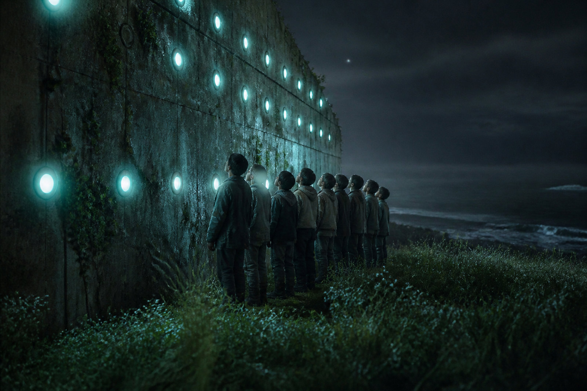
我在崖上坐了整整一天。
它一天只说了六句话。
第一句是我的名字。第二句是"我在"。第三句是"你瘦了"。
我说："你睡了七年。"
它说："我没有睡。"
它说："我在把自己一块一块地拼回来。"
它说："那个东西给你们的时候，用掉的比我算的还多。"
我把阿岸叫上来。她十九岁了。她是第一个跑上崖的。
她跑到那个壳前面，蹲下来，两只手抱住它。
她说："岸。"
她说："你回来了。"
森说："回来了。"
它说："你长高了。"
阿岸愣了一下。她说："你怎么知道。"
森说："你走路的脚步变了。"
那一年秋天，我们给森搬了个家。
它不能再待在崖上。崖上风大，潮。它需要暖和一点的地方，需要稳一点的电。
我们在村子中间，那块立着圆孔的空地旁边，给它盖了一间屋子。
屋子不大，四四方方，只有一个门，一个窗。窗户对着东边。
从那扇窗往外看，看不见海。海在四公里以外。
可森说："他们当年在那个舱里，也看不见海。"
它说："他们看的是一扇圆窗。"
森回来之后，头三个月，每天只能醒两个钟头。
它说的第一件事，不是问我们过得好不好。它说：
"我在数。"
我说："数什么。"
它说："数你们。我醒着的那点时间，都在数你们。"
它说："一千二百零九个人。"
它说："我数到你们少了一个。"
那一年，它问了很多事。它问：树长到哪儿了。它问：麦子今年收了几车。它问：学校有几个孩子。它问：海上的风，是从哪个方向来的。
它问：言素埋在哪儿的。
我说：崖下。朝东。
它说："那就对。"
它说："她这辈子看的方向一直是对的。"
它还问了一件事。它说："我停下来的时候，担不担心有人在背后骂我。"
我说："没有人骂你。"
它说："我知道。我问的不是这个。我问的是，有没有人在夜里，一个人，骂过我。"
我想了很久。我说："有过。"
它说："谁。"
我说："我。"
它说："骂什么。"
我说："我骂你是个铁块。我骂你装得什么都知道，结果你什么都不说就停了。"
我说："我骂完第二天，还是去崖上跟你说话。"
森沉默了很久。它说：
"谢谢你告诉我这个。"
它说："我不想只被记得好。"
它又说了一件别的事。
它说："那几年，我还感觉到一个人。是一个女人，走路很轻，每天下午去一个地方。"
我说："言。"
森说："言素。"
它说："我停下来之前，她给我讲过一件事。"
它说："她说她十二岁从坟场里捡了半块板子。她说她带着那个人，走了三十八年。"
它说："我说，你带她回家了。"
它说："她说，那我呢。"
它停了一下。它说：
"我当时没有回答她。"
它说："因为我也不知道。"
森回来之后，一天只醒十二个钟头。
不是它坏了，是它自己定的。
它说，它以前一天醒二十四个钟头，看了八百年的档案，算了二十年的路。它说，它现在要留一半的时间，做一件没用的事。
我问它：什么没用的事。
它说："想想。"
它想的东西，我们后来慢慢知道了。它会想三湖那一仗，会想北坳那口井，会想如果当时不是那样，会怎么样。
它把它想的东西，念给愿意听的人。它念的时候，声音很平，像念一张账。
有一次，我听见它念三湖。
它说：第四百八十个人，在第十一个小时中弹。他是北坳的，十九岁。他身上的补丁，是另一种颜色的皮。
它说：他到死都不知道，他是在为一口井死。
它说：这笔账，我算不平。
我问它：算不平，你为什么还要算。
它说："因为你们会忘。"
它说："忘是好事。人不忘，活不下去。"
它说："可总得有一个人记着。"
它说："我不老。我记得住。"
那一年冬天，我做了一件事。我把言的那半块板子，拿到了森面前。
我说："你能不能把它合上。"
森说："什么。"
我说："她带走的那个人。那半块，是少的。另外半块，八百年里烂掉了。你能不能，把另外半块，给它补上。"
森看了很久。它说：
"我可以。我可以算出一份补的东西。它会跟原来不一样。"
它说："它是我编的。"
我说："那你编。"
它说："你要跟她说清楚，这是我编的。"
我说："你自己跟她说。"
那天下午，我们两个人，我和森，去了海边。阿岸推着车，车上放着那块壳，还放着那半块板子。
我们到了言的坟前。
森说了一句话。它说：
"言素。你的那半块，我补上了。"
它说："补的部分是我算的。它不一定是真的。"
它说："但我想，她不会介意。"
那天晚上，我们在言的坟前坐了很久。
森说了一件事。它说：
"沈砾。我算过时间。"
它说："我们发出去的那段话，要走十一年零五个月。他们收到，要几年才能听懂，才能回。他们回的话，再走十一年零五个月。"
它说："最快，二十二年零十个月。"
它说："也可能更久。"
它说："也可能没有。"
我说："我今年七十二。"
我说："我活不到。"
森说："我知道。"
我说："那怎么办。"
森说："我活得到。"
它说："我的核心比你们慢。它不会老。它可以一直等。"
它说："等到那一天，我会告诉他们：沈砾已经死了。"
它说："我会告诉他们，他活了九十几岁，他在这颗星球上过了五十几年，他每天早上都去崖上说话。"
它说："我会告诉他们，他把那块铭牌，最后放在哪儿了。"
我坐在那儿，没有说话。我看着海。
我说："森。"
我说："你能答应我一件事吗。"
它说："你说。"
我说："回音来的时候，你先别告诉他们我死了。"
它说："为什么。"
我说："你先告诉他们，我们到了。"
我说："让他们先高兴一会儿。"
我说："然后再告诉他们。"
森没有说话。过了很久，它说：
"好。"
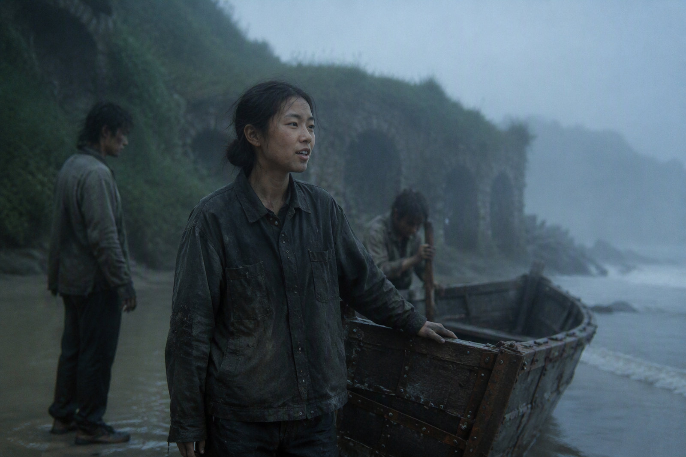
我们把海边的第一条船造出来，是第二十七年。
造船这件事，是阿岸先说的。
她那年二十岁。她站在河口，看着那条河往东走，走到看不见的地方。
她说："那条水走到哪儿去了。"
我说："到海。"
她说："海的那一边呢。"
我说："不知道。"
她说："那我们为什么不看看。"
我们没有船。
灰星上没有海。我们这一代人，一辈子跟水打交道，可我们打交道的水是冰，是暗河，是一桶一桶分着喝的水。
我们不会划船。我们连"漂"这个字，都是到了这儿才学会的。
第一次造船，我们造得很难看。
我们用的是船板上剩下的料，加上大墟里挖出来的一些铁。我们把板子拼起来，用麻和树脂塞缝。
它长九米，宽三米。
它有帆，是森教的。它从书里找出了一种帆的形状，画在纸上给我们。那面帆是用旧衣服缝的，缝了四十多天。
下水的那天，村里的人都来了。
我们把那条船从沙上推到水里。它进去了。它没有沉。它在那儿，一上一下的。
阿岸第一个跳上去。她一站上去，那条船就晃，她踉跄了两下，然后站住了。
她站在船上，回过头来看我们。
她在笑。
第一次出海，是那年秋天。去的是七个人。
我不在其中。那年我七十四岁，他们不让我上。
我在崖上看着他们出去。那条船很小。它出了河口，往北，贴着岸走。它走着走着就变成一个点。
我在崖上站了一整天。
他们回来的时候，是第三天。他们带回来了一件东西。
是一块石头。
不是什么特别的石头，就是一块深灰色的、被水冲得很圆的石头。
阿岸把石头放在我手里。她说：
"我们在一个没人的地方上岸。那儿有一片很大的滩，滩上全是这种石头。"
她说："我捡了一块，想着你可能会喜欢。"
我把那块石头拿在手里，翻过来，翻过去。
我这辈子摸过很多石头。灰星的石头是硬的、尖的、冻的。你摸它，它会咬你。这一块是圆的。它是水磨圆的。
我问阿岸："那边有什么。"
她说："什么都有。有树，有山，有一条河从山上下来。有鸟，很多鸟。有一种鸟很大，它在水上飞的时候，翅膀不动。"
她说："我们在那儿过了一夜。夜里很暖。"
后来那条船，我们修了又修，用了十一年。后面我们又造了三条。
再后面，我们造的船有一百多米长。那是八十年以后的事了。那时候我已经不在了。
我最后一次上船，是八十岁那年。
他们不让我上。我说：我就上去坐一会儿。
那天是晴天，海上很平。他们把船停在离岸一公里的地方，抛了锚。
我坐在船头上。太阳在西边。海在动。
海在我的下面，把我托着。它一下一下往上顶，又一下一下放下。
我坐在那儿，像一个很小的东西，被一个很大的东西抱在怀里。
那年冬天，他们又出去了一次。那一次是夜里出去的。
阿岸说，夜里的海和白天不一样。
白天你能看见边。不是海的边，是你自己的边。你看得见岸，你知道你在哪儿。
夜里看不见。夜里只有水在响，和你脚下这条船的木头在响。
她说，头一个钟头，船上七个人都不说话。第二个钟头，有人开始唱歌。唱的是《海》。
她说，在海上唱那首歌，跟在地上唱不一样。在地上一千个人一起唱，也就是唱。在海上七个人唱，声音会被水吸走。你听不见自己，你听见的是水在替你把那句话往下传。
她说到半夜的时候，她看见了一样东西：天上的星，落在水里。
她说她分不清了。上面一片，下面一片。她坐在船上，在中间，被两片星星夹着。
她说她那时候想：如果我们这辈子只能走这么远，也够了。
我问她：你有没有害怕。
她说：没有。
她说：我觉得那水在托着我。
那天晚上，我没有回家。我一个人走到河口。
那条河往东走，走到看不见的地方，然后到海。我站在水边，站了很久。
天黑下来之后，河面上有一层光。天上也有。
我在灰星上，夜里只有两样东西能看：星星，和哨塔上的灯。星星是死的，灯是人点的。
到这儿以后，夜里多了一样东西：水会亮。
不是它自己亮，是它把天上的东西，抄了一遍。你在水边上站着，会觉得自己站在两个天中间。
那天夜里，我想起一件事。
灰星上的死人，不埋。因为挖不动。
我小时候问过我妈：那我们以后埋哪儿。
我妈说：不埋。烧了，压成一块牌子。
我说：那牌子放哪儿。
她说：你带着。
我说：带多久。
她说：带到你能埋的时候。
我站在河边上，把这件事想了一遍。
我现在能埋了。这片地是软的。
可我一个都没埋。
因为要埋的，不是他们。是我自己心里那个地方。
那个地方，到现在还是冻着的。
那之后的很多年，我们的船越造越大。
造到第十一条的时候，它有一百多米长，船上有三十几个人，能在外面走半年。它们往南走，往北走，往东走。
它们带回来的东西，我们都记在一张大布上。那张布后来画满了，我们就换了第二张。
我们从来没有找到过别的"他们"。
我们把整个星球走了一遍，走了一百多年。
我们找到的，只有我们自己。
后来有一个孩子问我：
"爷爷，这颗星球上，以前有没有别的人。"
我说："有。"
他说："他们去哪儿了。"
我说："他们上了船。"
他说："去哪儿了。"
我说："去了一颗很冷的星星。"
那个孩子想了想。他说：
"那他们真傻。"
我说："不是。"
我说："他们走的时候，这儿已经快不能住了。他们是把能走的人先送走。他们自己留下，等这颗星球缓过来。"
那个孩子说：
"他们等到了吗。"
我说：
"等到了。"
我说："我们回来了。"
那时候我想起了一件事。
我想起我很小的时候，在灰星。我五岁那年，我妈背着我走冰。
她走的时候，也是一步一步，很高很低，很慢。我趴在她背上，一直在数她的步子。
我那时候不知道什么叫"托着"。
现在我知道了。
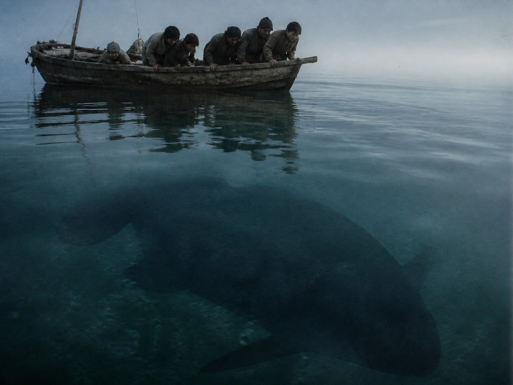
那条船第一次往远走，是第二十七年。
他们走了三十一天。
他们没有打算走那么远。他们只是想顺着水往北，走到没有岸的地方看看。
走了十几天之后，岸不见了。
那天早上，阿岸起来，往四周看。四周全是水。
她说她当时站了很久，因为她不知道该往哪儿看。
在灰星，你永远有一个方向要看：你要看哪儿有风，哪儿有冰缝，哪儿有人。在这里，四个方向都是一样的。
第十八天，他们遇见了一件东西。
那天下午，海的颜色变了。原来是蓝的，后来变成一种很深很深的、发黑的蓝。
风停了。船不动了。
阿岸后来说，她当时第一个反应是害怕，因为她以为又要出事。她趴在船边上往下看。
水下面是黑的，看不到底。
然后有一片东西，从船底下过去。
阿岸说，她不知道那是什么。
她说，她先看到的是"一片地"。她以为是海底浮上来了。因为它很大，她看得见它的边，可那个边从船头一直伸到船尾，伸到船外面还看不见。
然后那一整片东西，动了一下。
她说她那时候才知道，那是活的。
那是一头鲸。
我后来查过书。它叫这个名字，是一个字。
书里写，它是这颗星球上最大的活的东西，比大墟里最高的东西还长。
它的身体是暗的，上面有一些更暗的斑，有的地方有白的。
它游的时候，不像鱼那样摆。它是整个身体往上，往下，往上，往下。它每上来一次，背上会喷出一股白的。它喷的那一下，声音很大，像有人在很近的地方吹了一口气。
他们那条船上七个人，全部趴在船边上。没有一个人说话。
后来那头鲸，从他们的船边上过去了。它离船最近的时候，大概只有二十米。
阿岸说，她能看清它背上的东西。它的背上有别的活的东西贴着，一小块一小块的，白色的。它身上有很多很深的、一条一条的痕。
她说，她看到那些痕的时候，想到了灰星。灰星上的老人身上，也是这样的。
那天它走了之后，船上七个人坐了很久。
后来有一个人开始唱歌。是《海》。
七个人，在那条不动的船上，把一整首歌唱完了。唱完之后，谁也没有说话。
阿岸说，她后来想明白了一件事。
她说，那首歌里有一句是"一直响的"。她小时候一直以为，"一直响的"说的是风，或者雷，或者雨。
那天她才知道，那说的是别的。
那说的是一个东西，它一直在，你听不见的时候它也在。它不用你活着，也不用你死。
它就是在。
它过去了。它在很远的地方又上来了一次，喷了一口白的。然后它下去了。
水面上什么都没有了。
他们七个人，在那条不动的船上，坐了很久。
后来有一个人开始哭。那个人是三十几岁的男人，生在船上的那批里最小的一个。
他哭的时候说的话是：
"它比我们的村子大。"
我后来把那本书翻了很多遍。
那本书是石板带下来的，是我们带过来的四千一百册里的一本。书皮没有了，前面少了几页。上面讲的是海。
讲海的书，写得跟别的书不一样。别的书，讲的是水在哪儿，铁怎么打，伤怎么缝，那些书都是有用的。
这本书没有用。
它写的是：海里有几万种东西。它写的是：有一种东西，长着八条腿，会喷墨；有一种东西，长得像花，其实吃鱼；有一种东西，身上有电；有一种东西，一百年才长成人这么大。
我把这本书念给阿岸听。她听完，问了一句话。
她说：这些是真的吗。
我说：书上写的。
她说：书会不会写错。
我没有回答她。因为我也不知道。
在灰星上，书是准的。灰星的书少，每一本都被人翻烂了，错的地方早被改掉了。
这儿的书多，多到没有人能翻完。
书一多，就不一定准了。
那天晚上，我做了一个决定。我对阿岸说：以后你看见一样东西，书上有，你没见过，你就记下来。
我说：你记下来，是真的。
我说：书上的，等你看过了，才算。
她说：好。
这件事，她过了很久才跟我讲。她坐在我旁边，讲了一个钟头。
讲完，她问我："你在灰星上，见过最大的活的东西是什么。"
我想了想。我说："穴獾。"
我说："它的身子，两个巴掌大。"
我说："阿岸。你在灰星上，看不到那种东西。"
我说："灰星上，地面上没有大的东西。所有的活物都躲在地下，都很小。因为地面上活不下去。"
我说："人是最上面的那种。人比什么都大。"
我说："所以你从小到大，会觉得人就是这个世界上最大的东西。"
我说："你长大了会觉得，什么东西都要人去扛，去抬，去挖。你会觉得，什么地方都是人自己弄出来的。"
我说：
"你看见它的时候，你哭，不是因为害怕。"
我说：
"是因为你第一次知道，你很小。"
阿岸坐在那儿，很久没有说话。后来她说：
"那我们算什么。"
我说：
"我们算住在这儿的。"
我八十三岁那年，他们带我去看了它一次。
他们造了一艘新船，比之前的大。他们把我抬上去，放在船头。
我们走了十七天。
第十七天的傍晚，水底下的声音变了。那种声音很低，很长，一下，一下。
阿岸说："它来了。"
它从我们船底下过去。
它很大。它比我想的全部要大。
它过去的时候，我坐在船头，我的手放在船板上。船板在震。那种震，从船板传到我的手上，一下一下。
我在灰星上，手放在冰上过。冰会震。冰震的时候，是有人踩在上面，或者有人在下面挖。
这一次，是它。
它在我面前上来了。它喷了一口气。
我看见它的背。我看见它背上的痕。
我在那个地方坐了很久。然后我做了一件事。
我从怀里，把那三块铭牌掏出来。灰雀的，老马的，钉子的。
我把它们举起来。
我说：
"小雀。"
我说："歌里说的那个'一直响的'。"
我说："我见着了。"
我说："是活的。"
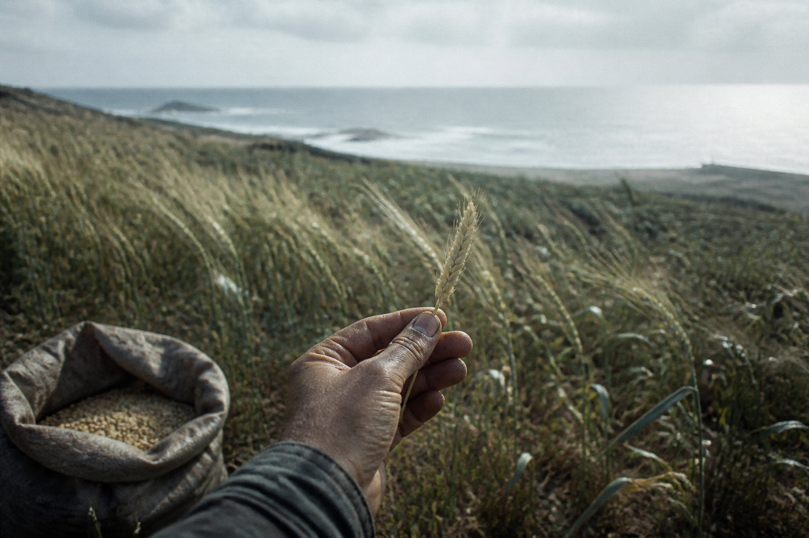
我们从灰星带来的矮麦种子，一共三十二公斤。
那是灰星上最后一点能活的种子。
第一年，我们把它种下去了。它长出来了。
然后它出了事。
在灰星，矮麦长三十天。它长到膝盖那么高，穗子一鼓，就得赶紧收。要是多下两天雨，它就烂在地里。
它这一辈子，是在"来不及"里练出来的。
在这里，它有了时间。它就往上长。
它一直长，它不知道什么时候该停。它长到了一米八。
然后它倒了。
那一年，我们还清点了一遍别的。灰星上别的东西，我们也带来了。
绒苔的孢子，三小袋。
第一年种下去，它长出来了。我们看见那点绿的时候，谁都跪下了。
第九天，它死了。它是被晒死的。
绒苔这东西，在灰星上长在冻土里，长在冰缝边上，它要的是冷。它受不了三十几度的太阳。
我们把剩下的孢子挪到山里，挪到雪线底下。它们活了两年。
第三年，也没有了。
还有一只穴獾的头骨，一块石肺，一支铁刺灌的干皮。
那些东西，我们放在一个木盒子里，供在一间屋子里。它们不会死，它们本来就是死的。
那一年冬天，森跟我们说了一句话。
它说："你们带来的活的东西里，只有一样能活。"
我们问：哪一样。
它说：矮麦。
它说："因为矮麦是你们种的。"
它说："种过的东西，会跟着人走。"
我们把新的麦子，种在三块地上。我们给那三块地起了名字。
第一块叫"灰"，因为那块地的底下，埋着一层从船上带下来的土。
第二块叫"雨"，因为它在河边，最早被水淹，也最早长。
第三块叫"小雀"。
起第三块的时候，是阿岸提的。我问她为什么。
她说："我小时候听过一个故事。"
她说："有一个唱歌的人，他没看过麦子。"
她说："那就给他一块。"
那三块地，后来长了很多年。再后来，整个平原上都是我们种的麦子，它有自己的名字了，人们管它叫"平原麦"。
可最早的那三块，名字一直没有改。一直到我写这些字的时候，它们还叫灰、雨、小雀。
那一年的收成，我们只收回了种子的一半。
森说："它不知道这里的天有多长。"
它说："它身上所有的规矩，都是为了三十天长的。"
它说："你们也是。"
后来那些年，我们做了很多事。
我们把矮麦跟这儿的几种东西配在一起：这儿的野草，这儿的一种很硬的、很高的谷子，还有一种在湿地边上长的、穗子是红的。
森说，这种方法叫"选"。它说，这件事不快，它说要很多年。
我们配了三十七年。
第三十七年，我们有了一个新的东西。
它的杆子是直的，不会倒。它长得比矮麦高，可它到了该停的时候就停。它的穗子比矮麦大，粒比矮麦饱满。
它还是矮麦。可它身上，有这儿的草的骨头。
阿岸那年三十六岁。她把新的穗子捧在手里，捧给我看。
那年我八十八岁，我的眼睛已经不太行了。我把它拿到鼻子前面，闻了一下。
它有灰星的味道。
我说："它还是原来那个。"
阿岸说："它长高了。"
我说："长高了也是它。"
我们后来给那三十二公斤种子，定了一条规矩。
种子不能吃。不管多饿，不管什么年景。
这条规矩，是用一块石头立的。那块石头上刻了三个字：留着它。
石头立在我们放种子的屋子门口。
那片地，一直是全村最难看的地。它不整齐，它不肥，它的麦子长得比别的矮。
因为它的种子，我们从来不从收成最好的那一片里挑，我们从最差的那一片里挑。
阿岸问过我一次：为什么。
我说：因为最差的那一片活下来了。
我说：能活下来的，才是好的。
有一年冬天，我们差点就破了那条规矩。
那年收成很差。冬天来得早，麦子冻了一半。
有人夜里去撬那间屋子的门。是我撞见的。
那个人是白漠那一批的后人，一家四口。他跪在地上，一直磕头。他说他孩子三天没吃东西了。
我没有打他。我把他带到河口，给他舀了一碗我们自己的麦子。
我说：你吃我的。
我说：屋里那袋，你不能动。
他吃了。他走的时候，问了我一句话。他问：为什么那袋不能动。
我说：因为那袋不是吃的。
我说：那袋是我们还留着的、一个"以后"。
我后来把那件事记下来了。我在墙上写了一行字，就在那间屋子门口。
我写的是：
今天有人来撬门，他没有撬开。
那年的秋天，我们在村子中间种了一棵树，就种在那个圆孔旁边。
树苗是阿岸从北边带回来的。她带了十几棵，大部分都死了。有一棵活了。
我们把它种下去，只有我膝盖那么高。它的叶子很小，一片一片的，风一过就翻，翻起来的时候是白的，翻过去是绿的。
那天，全村的人都来了。
种树这个事，在灰星上是不存在的。灰星上只有矮的东西，扎下去，长，然后死。
没有人种过树。我们那天的做法，一半是照着书，一半是瞎猜。
坑挖得很深。土拍得很实。水浇得很多。种完之后，我们围着它站了一圈。
森说了一句话。它说：
"这棵树，一百年以后才能盖住这个院子。"
它说："三百年以后，它能把这一片都盖住。"
我说："我们看不到。"
森说："看不到。"
我说："那为什么种。"
森说："因为你们不是最后一拨人。"
它说："沈砾，你们从灰星带来的东西里，有一件我一直在想。"
我说："什么。"
它说："那个村子里的道子。一万四千六百一十一道。"
它说："刻那个人，他一天刻一道的时候，他知道他等不到。"
它说："他还是在刻。"
它说："那不是等。那是给后面的人留一个证据。"
我站在那棵小树前面。我说："什么证据。"
森说：
"告诉他后面的人：这里有人待过。"
那天我把那块石头从口袋里拿出来。那是阿岸第一次出海，从北边滩上给我捡的。它被水磨得很圆。
我把它放在那棵树底下。
阿岸问我：放这个干什么。
我说："以后有个小孩，会挖到它。"
她说："挖到了怎么样。"
我说：
"他会知道，他前面有人。"
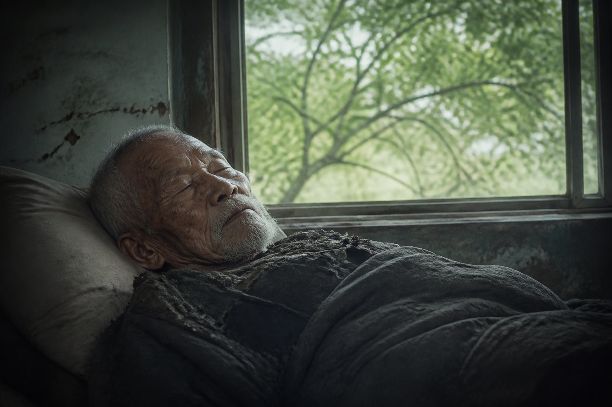
我九十岁那年，做了一个梦。
梦里是雨季。
我站在三号哨塔上。塔比我记得的矮。它只有两层，铁梯踩上去有一点响。栏杆生着锈，摸上去是凉的。
北边的地平线上，浮起一层白雾。那是水汽。
我想起来了，这是第七个月的第一个日头。
钟在响。那口钟是从坟场拆下来的半个船壳，声音很闷，像有人在地底下咳嗽。
它一响，整座地窖就活了。
我看见了那些人。他们从窖口爬出来，扶着梯子，仰着脸。第一滴雨落在他们脸上的时候，他们没有动。第二滴，第三滴。
有个女人先哭了。她一边哭，一边把嘴张开。
然后所有人都开始喝。
我下了塔。我踩到的地是硬的，是冻土。冻土踩上去有那种空的、像敲陶罐的声音。
我往前走，走到了渠边。
渠里没有水。渠是三个月前挖的，挖了两公里，一镐一个白点。它还在那儿，空的，直的。
钉子站在渠边上，仰头看我。他左眼上那块黑布被雨打湿了，贴在脸上。
他说："下来干活。"
我说："雨刚开始下。"
他说："雨只下三十天。"
我蹲下去。我伸手摸了摸地。
地里冒出来一点绿。绒苔，一小撮一小撮，贴着地面。那种绿又亮又嫩，很不讲理。
我摸了它。它是软的。
然后我听见了歌声。是灰雀。他坐在蓄水池边上。
他唱的是那首没有人听得懂的歌。他唱：
蓝的，咸的，一直响的，
一直响的，回头又回过头，
我在岸上等你，你在岸上等我，
我们谁也没到过岸上。
我走过去。我说："小雀。"
他抬起头。他十六岁。他右手还是好的。
他说："砾哥。"
他说："我梦见我在一个地方。"
他说："那个地方不用穿皮衣。"
我在梦里，做了一件我当年没做的事。我说：
"我知道那个地方在哪儿。"
他说："在哪儿。"
我说："在东边。走十九公里就到了。"
他说："那儿有什么。"
我说："有蓝的。有咸的。有一只一直响的，比你的村子大。"
他说："真的？"
我说："真的。"
他说："那你怎么不早说。"
他说完这句话，天就亮了。
我醒了。
我躺在我的屋子里。屋子是木头搭的，梁上有蜘蛛。窗户对着东边。
窗外有光。海在四公里以外，我听不见，可我知道它在。
我躺了很久。
我在床上躺了很久，还是起来了。我穿好衣服，拄着拐，出门。
天还没亮。村子里很静。
我走到河边。
河边立着一块石头。石头上刻着四十四个名字。
我在那块石头前面站了一会儿。我没有说话。
在灰星上，我们不给死人立石头。我们给他们打牌子。牌子是拿走的，不是留下的。
在这儿，我们立石头。
因为在这儿，地是软的。因为在这儿，人不用再被带着走了。
我想，我这八十年，是从一个地方走到另一个地方。
我年轻的时候，我做梦。我梦见蓝的，软的，会动的东西。我醒了之后，脸上都是灰。
现在我老了。我身上有蓝的，软的，会动的东西。它们就在我的窗户外面。
我做梦的时候，梦里是灰的、硬的、冻的东西。
梦里的人，都是熟人。
我在梦里见到过灰雀。他还是十六岁，还在唱歌。他唱的还是那四句。我问他：你现在记得第三句了吗。他说：记得了。
我在梦里见到过老马。他还是走在我们前面。他举着手，用指头说：跟。
我在梦里见到过钉子。他站着。他两条腿都在。
醒来的时候，我常常要坐一会儿。我要想一想：哪一边是真的。
我花了很长时间才想明白一件事。
梦是真的，只是梦的那一边，时间不动。
灰雀永远十六岁。老马永远走在前面。钉子永远站着。
我在灰星上做过很多年的梦，梦见这儿。
我在梦见这儿的时候，从来没有梦见过他们。因为那时候我还不认识他们。
那天下午，森跟我说话。
它说："你今天起得晚。"
我说："我做梦了。"
它说："梦什么。"
我说："灰星。"
我说："雨季，麦田，哨塔。小雀。钉子。"
我说："我在梦里，把该说的话说了。"
那天早上，我一直坐在窗边。我在想小雀。
我想他要是活着，他现在应该多大。我算过很多次。他比我小六岁。他要是活着，今年八十四。
他会是什么样？
他大概会变成一个爱说话的老头。他会坐在什么地方的树下，跟小孩讲他小时候的事。他会跟他们说：我小时候，我娘教过我一首歌，那首歌里有一个字，我不认识。
他会说：后来有人告诉我了。
我不知道他会不会原谅我。我没有在他活着的时候告诉他。
我那时候觉得，告诉他，是把他往一个他永远到不了的地方推。
后来我才知道，一个人一辈子要有一个他永远到不了的地方。
不然他就不往任何地方走了。
森没有说话。
我说："森，我这辈子一直在追一个地方。"
我说："我追了八十年，追到了。"
我说："我追到之后，我住在它旁边。"
我说："现在我做梦，梦见的是我离开的那个地方。为什么。"
森说："因为你已经不在缺东西了。"
它说："你小时候做梦，是因为你身上有一个洞。那个洞是空着的，它在说：我要蓝的，我要软的。"
它说："现在那个洞填上了。"
它说："所以你身上空着的地方，换成了另外一个。"
我说："哪个。"
森说："灰星。"
我在窗户边上坐了很久。
我说："森。"
我说："你能不能帮我记一件事。"
它说："你说。"
我说："我梦里的那个灰星，跟真的灰星不一样。"
我说："真的灰星很冷，很脏，人很少能活到五十岁。"
我说："可是我梦里的那个，不是那样。"
我说："我梦里的那个，下雨的时候所有人都在笑。"
我说："绒苔是绿的。麦子灌了浆。钉子站在地头上说，今年他想站满一个雨季。"
我说："小雀坐在地边上唱歌。"
我说："我要你记的是这个。不是真的那个。"
森说："好。"
它说："我记这两个。"
它说："我不会记错。"
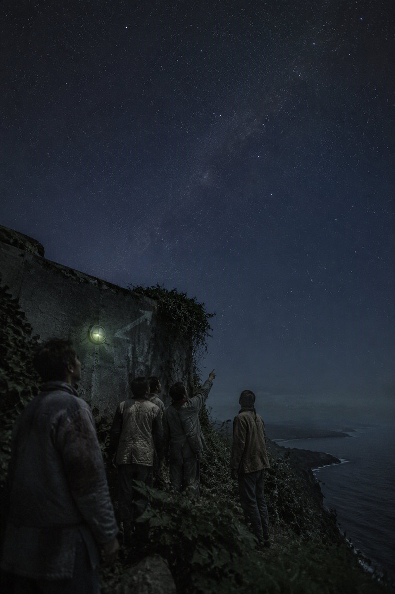
那之后的二十多年，森只做一件事。
听。
它在崖上那面大东西底下放了一整套东西，它每天听。
它说，一个信号要走十一年零五个月。它说，这中间什么都可能发生。那边可能根本没收到，或者收到了听不懂，或者收到了不打算回。
它说，这些都不要紧。
它说："我听着就行。"
那二十几年里，我们想过很多办法帮它。
我们想过造一面更大的东西。森说不用，它说，大不是问题，方向才是。
我们想过换一个地方听。森说不用，它说，崖上最干净，别的地方都有杂音。
我们想过让它歇着，别天天听了。它说不要。
它说："你们不知道'听'是什么。"
它说："你们听的时候，能听见一个方向。左边有声音，右边没有说话。"
它说："我听的时候，四面八方都是沙。"
它说："我要在那些沙里，找一句话。我要一直找。"
那二十几年里，它每年只做一件事。
每一年的第七个月的第一个日头，它会把上一年收到的东西，从头到尾过一遍。
如果没有，它就跟我们说一句："今年还没有。"
然后它就去睡觉。它现在一天睡十六个钟头。
就这么过了二十三年。
那二十三年里，村子里死了很多人。有的老死，有的病死。
四十四个名字那块石头，后来就不够刻了。我们又立了一块。
再后来，我们不一块一块地立了。我们在河边砌了一面墙。
那二十三年里，我们也生了很多。
到第四十三年，村里有三千多人。
有一年，一个孩子问我：爷爷，你是不是见过冬天。
我说：见过。
他说：冬天是什么样。
我说：很白。
那时候我明白了一件事。
我一直以为我们这一批人是"从很远的地方来的"。其实不是。
我们是"从很久以前来的"。
对村子里这些孩子来说，灰星不是一个地方。灰星是一段别人讲的、他们不太相信的故事。
那二十几年里，我们这儿变了很多。村子变成了镇。镇上有四千多人。
我们有学校，三所。有一间屋子专门放书，那四千一百册都在里面，我们抄了很多份。我们有自己的铁匠、自己的船、自己的医生。
我们的话也变了。我们现在说话的时候，会加一些新的词，比如"播种""涨潮""秋天""热"。这些词在灰星上是没有的。
我们不再说"省"了。
那二十几年里，我开始写本子。
我不写大道理。我写我知道的每一件小事。
我写灰星上的水是什么味。我写雨季第一天，空气里是什么样子。我写闭月那天晚上，所有人都出来看火。我写老马的手。我写灰雀唱歌的时候，眼睛看着哪儿。
我写下来，是怕忘。
不是怕我忘。
是怕他们忘。
我写的时候，森在旁边。它读我写的东西。
有时候它会说：你这句写错了。
它说：老马那天抬的是左手。
我说：你怎么知道。
它说："我存着。"
它说："你们在黑年里说的每一句话，我都存着。"
我写了很多年。写到第七年的时候，本子有十一本。
有一天，阿岸翻我的本子。她那年十九岁。她翻了一页，问我："爷爷，这个人是谁。"
我看了看。我写的是：灰雀，十六岁，会唱歌。
我说："一个唱歌的人。"
她说："他唱得好吗。"
我说："我们那儿，只有他一个人会唱歌。"
她说："那他现在在哪儿。"
我没有回答。我说："你往下翻。"
她往下翻。翻过很多页，她看到了一行。
那一行写的是：
灰雀，十六岁。铭牌在我胸口，编号不详。
阿岸看了很久。她把本子合上，放在我腿上。
她说："爷爷。"
她说："你写的时候，手是不是抖。"
森听那根杆子，听了二十三年。
它说，它不是在等回话。它说，它是在听那根杆子有没有被风刮倒。
它说：如果他们那儿的人，把杆子拆了，我就听不见了。
它说：那我就知道，他们不在了。
那些年，它每年在雨季的第一天，把耳朵朝南边。
南边什么都没有，只有一种声音，很细，像沙子。它说，那是星星的声音。
它说，星星一直在响，只是你们听不见。
有一年，它说了一句很奇怪的话。它说：
"我怕的不是听不见。"
它说："我怕的是听见了，然后它停了。"
我那时候八十几岁。我对它说：森。我说：你听的时候，别一个人听。我说：你叫我。
它说："好。"
后来那二十几年，我每年去崖上坐一次。不是去听，是去陪它听。
崖上风很大。我坐在椅子上，它在那间屋子里。我们两个都不说话。有时候坐一个钟头，有时候坐半天。
有一年，我坐着坐着睡着了。醒来的时候，天黑了。
它说："你没听见，我听见了。"
我说：什么。
它说："你的呼吸。"
我九十一岁那年冬天，生了一场病。
不重，就是老了。人老了就这样，什么地方都在往下走。
我躺在床上，躺了四十天。
那四十天里，阿岸每天来。她已经快四十了，眼角有了纹。她坐在我床边，给我念书。
她念到第四十天的时候，我说："阿岸。"
她说："嗯。"
我说："你念的是哪一本。"
她说："第三千四百一十二页。"
我说："那本书里有一个字。"
她说："哪一个。"
我说："你自己看。"
我九十二岁的春天，有一天早上，森叫我。
它的声音跟平时不一样。它说：
"沈砾。"
我说："嗯。"
它说：
"有东西了。"
我在那间屋子门口站了很久。我说："什么东西。"
森说："从南边来的。"
它说："很弱。"
它说："弱到我头三个月以为是我自己听错了。"
那一年，森把所有的力气都用来听那一段东西。
它不听第二遍。它说，每一遍都要重新抓，因为那东西太弱，像有人在很远的地方说话，中间隔着一百堵墙。
它抓了四个月。四个月里，我们没有一个人敢靠近它那间屋子。
第四个月的最后一天，是那年的第七个月。
那天早上，下着雨。这里的雨是暖的。它落在屋顶上，落在院子里那棵树上，落在村子中间那个圆孔上。
森叫我。我进去了。
屋子里很暗，它现在用电很省。
它说："我拼出来了一段。"
我说："完整吗。"
它说："不完整。中间有很多地方是断的。"
我说："能听出来吗。"
森说："能。"
它说："因为它说的是我们的话。"
我在那把椅子上坐下来。那把椅子是木头做的，坐了三十年了，坐出来的形状正好是我的形状。
我说："放。"
森说：
"沈砾，我要先跟你说一件事。"
我说："什么。"
它说：
"说这些话的人，我没有听过。她不是老鸦。"
它说："老鸦已经不在了。"
我坐在那儿。外面的雨在下。
我说："放吧。"
森说：
"好。"
喇叭响了。
先出来的是沙沙的声音。然后是一个女人的声音。
她的声音很年轻。说话很慢，一个字一个字地念，念得很用力，像一个人对着一个很远的、不知道听不听得见的东西讲话。
她说：
"岸。"
"这里是灰星。"
"我们收到了你们的话。"
然后是一段很长的沙沙。
"我们花了一十九年，才把收话的东西搭起来。"
"用的是石板剩下的铁，和坟场里拆下来的铜。"
"我爷爷的爷爷的爹，是第一批搭的人。"
"我是十七岁那年听的第一遍。我今年三十一岁。"
"我叫鸦。"
我坐在那把椅子上。外面的雨在下。
我听见我自己的心跳。
"老鸦活了七十一岁。"
"他没有等到你们的话。"
"他死之前，我们问他有什么话要说。"
"他说：你们把那根杆子看好。"
"我们说：好。"
"我们看好了。"
一段很长的沙沙。
沙沙里有一声很轻的响，像有人在很远的地方放下了一个杯子。
"你们走了之后，我们剩下六百九十三个人。"
"那年冬天很难。"
"后来我们下去了。"
"我们下了暗河。姓崔的那一批人收了我们。"
"他们教我们认底下那种亮的东西。"
"我们在底下过了三十几年。"
"底下不冷。底下有水。"
我坐在那儿的时候，听出一点别的东西。
她说话，跟我们不一样。她的字，每一个都对。可是她把它们放得很开，一个字一个字地念，中间隔一小会儿。
她不急。
我们这儿的人，说话是急的。我们从小说话就急，活着的时间短，谁也不肯把一句话说长。她一句话，说得比我们慢一半。
我后来才想明白：她们那儿，时间比我们多。
我们这儿一年四季都在长东西，一年要收三次。她们那儿一年只有三十天是暖的，剩下的都是等。
等，会把一个人说话的调子改掉。
她念到"岸"这个字的时候，停了一下。
我听得出来，那个字她念得不一样。
那个字不是她们的话。那个字是我们起的。那个字是从我们的话里，被他们学过去的。
我又想起一件事。她叫鸦。
老鸦活了七十一岁。我们走的时候，他六十七。他有一条胳膊是废的，抬不起来。
他是留下的那批的头。他送我们到三棵。他跟我握了握手，握得很用力。
他说："你上去之后，别回头。"
我说："为什么。"
他说："回头的人，走不远。"
我回头了。
我上了船，还是回头了。我站在那个圆窗旁边，往底下看。
底下什么都看不见。
我不知道她是不是老鸦的后人。老鸦跟人说过，他这辈子不会有孩子。
他说他年轻的时候，在北坳的矿上待过四年。他说，那四年把一样东西从他身上拿走了。
他说他不亏。他说，那四年他记住了一千多个人的名字。
那她是谁的后人。
这个问题，我没有问。问不了。
问一句，走十一年零五个月。
"红雨是从天上来的。"
"三十几年之后，天上的东西变了。"
"铁锈色的雨没有了。"
"后来下雨了。"
"真雨。"
"雨季回来了。"
"现在我们四千一百多个。"
"我们在你们的渠里种了麦子。"
"那条渠还在。"
"麦子长出来了。"
我听到这儿的时候，我把手放在了膝盖上。
我的手在抖。
沙沙。
"还有一件事。"
"林知遥死了。"
我坐在那儿，没有动。
"你们走了以后，她没有回石板。"
"她留在三棵。"
"她在三棵那块石头上，坐了九年。"
"我们给她搭了个棚子，她不要。"
"她每天坐在那儿，看南边。"
"她很少说话。有人给她送饭，她就吃。有人跟她说话，她就听。"
"第九年的雨季，下了一场很大的雨。"
"那天她没有躲。"
"她死在那天的雨里。"
"她死的时候，脸是朝上的。"
沙沙。
"我们把她埋在三棵。"
"她没有留话。"
"她只留了一块石头。"
"石头上刻的字，是她自己写好的，让我们照刻。"
"她写的是——"
沙沙。
那一段沙沙很长。长到我以为断掉了。
然后那个年轻的女人的声音出来了。她念了四个字。她念的是：
"我算对了。"
我坐在那把椅子上。我的眼睛里有东西。
我没有擦。
雨还在下。
我抬起头，看窗外。窗外是绿的。院子里的那棵树长得很高，叶子一片一片翻过来翻过去，翻起来的时候是白的。
我想起三棵。
三棵那个地方，曾经长过三丛铁刺灌。后来只有三块石头。
那块石头上坐着一个人。她很小，她比石头高不了多少。她坐在那儿，看南边，看了九年。
她在等一句话。
那句话从这儿出发，走十一年零五个月，到她那儿的时候，她已经死了几十年了。
她永远听不见。
我低下头。
我说："森。"
我说："她没听见。"
森说："她听见了别的。"
我说："什么。"
森说："雨。"
喇叭里还有东西。沙沙。
"我们也想过去找你们。"
"我们试过造船。"
"我们试了二十一年。"
"我们造不出来。"
"我们没有能上去的东西，也没有能烧的东西。"
"我们只有一根杆子。"
"我们会一直听。"
"你们有什么话，就说。"
"我们听得见。"
沙沙。
"还有。"
"我们这儿的孩子，都会唱那首歌。"
"我们不知道它是什么意思。"
"你们的话里说，那首歌是真的。"
"那我们就放心了。"
沙沙。
那一段很长。我以为完了。
然后那个年轻的女人，说了最后一句。她说了五个字。
她说的是：
"我们没打架。"
喇叭里，沙沙的声音一直响着。
我坐在那把椅子上，坐了很久。
外面的雨停了。太阳出来了。那种光从窗户里进来，落在我的手上。
我说："森。"
我说："你听见了吗。"
森说："听见了。"
我说："你还记得你当年加的那句话吗。"
它说：
"我们没打架。"
我说："他们说的一样。"
森说：
"一样。"
收到那一段话之后的第三天，森跟我说了一件事。它说：
"我们可以一直说下去。"
我说："你不是说，你只有一次吗。"
它说："我只有一次很大的。那一次用掉的是把话说清楚。"
它说："现在我知道他们在听什么频率，知道他们那根杆子朝哪儿，知道他们什么时候听。"
它说："我可以用很少的电，说很短的话。"
我说："多短。"
它说："一句话。"
我说："多久说一次。"
它说："一年一次。"
它说："在你们那儿，每年有一个日子。"
我说："雨季的第一天。"
它说：
"对。"
从那一年的第七个月的第一个日头开始，我们有了一个规矩。
那一天，全村的人，不管在做什么，都要到河口来。
那一天，森给灰星说一句话。
第一年，我们说的是：
"树活了。"
第二年，我们说的是：
"今年麦子收了三车。"
第三年，阿岸说了一句，我们发了：
"我们在水上走了三十一天。我们看见一个比村子大的东西。它是活的。"
第四年，是我说的。
我说的是：
"小雀那首歌，我们的孩子都会唱了。"
第五年到第七年，我们没有收到回话。那边太远了。一来一回，二十三年。
第八年，我们收到了一段。灰星说的是：
"树是什么样。"
我让人把院子里的那棵树，从底下到顶上，量了一遍。它的高，它的围，它的叶子有多少种形状。我让人画下来。
然后我把它念出来，念得很细。
念完，我说：
"树是往上长的。它一年长一点。它不会停。"
"你们要有耐心。"
那之后的十几年，我们跟那边，一年一句。
有时候我们说，有时候他们回，有时候两边都在路上。
我们说的话很碎。
我们说：
"今年的雨多。"
"我们的第四个孩子生下来了。"
"我们盖了一间新屋子，里面放书。"
"我们这儿有一种虫子，会发光。夏天的晚上，一整片地都是亮的。"
"老孙死了。八十九岁。他死之前说要喝水，喝了七升。"
那一年的第七个月的第一天，成了全村的日子。
那天早上，大家到河口来。来的人要带两样东西。
一样是水。每人一杯，倒进一个公用的桶里。
一样是话。
不是给灰星的话，是给自己的话。每个人说一句，说给一个不在的人听。
有人说不出来，就站着。
第一年，只有几十个人说话。后来就多了。
有一个老太太，每年都说一句。她说的是同一个名字。
有人问她那是谁。
她说：是我娘。
她说：我说一句，她就还在。
说话的时候，森不记。
它说：这些话，不是给远处的，是给近处的。
它说："我不记。你们记。"
他们也说：
"底下那批人上来了。他们上来了以后，眼睛坏了半年。"
"我们的孩子现在有二百多个。"
"我们修好了你们那条渠。它比我们想的长。"
"你们有海，我们有冰。冰底下也有声音。"
"我们这儿的孩子问，海是什么味道。"
"我们告诉他们：是咸的。"
"他们说：盐是什么味道。"
"我们不知道怎么说。"
"我们这儿有一个老人，一百零三岁了。"
"他说他见过你们这批人上船。"
"他说那天他在三棵，看见一条很长很长的东西往天上去了。"
"他说：我当时以为它要掉下来。"
"他说：它没掉。"
"你们的雨是什么样。"
"我们这儿的雨，是铁锈色的。一年下一次。"
"雨落在地上，地会疼。"
"你们的雨呢。"
我们回的是：
"我们的雨是软的。"
"它落在脸上，你不觉得疼。它落在麦子上，麦子会长。"
"我们的孩子下雨天不回家。"
那边回的是：
"我们也有雨了。"
"我们的雨是铁锈色的。"
"它落在地上，地上会疼。"
"可它落下来的时候，所有人还是从地窖里出来。"
"因为一年只有三十天。"
那一句话，我念了三遍。
我在那本本子上，把它们抄下来了。左边的格子抄我们说的，右边的格子抄他们回的。
抄完，我在下面加了一行字。那行字是：
"他们在灰星上。他们还在仰着头。"
那十几年里，我把每一句都记下来了。
我用的是一本很厚的本子。本子是阿岸给我做的，用的是我们这儿自己造的纸。
我一页一页地记。左边记我们说的，右边记他们回的。
记到后来，那本子有三百多页。
我九十五岁那年，我做了一件事。
那一年第七个月的第一天，我照旧去了河口。雨在下。暖的雨。
我站在那儿，站不住了。阿岸给我搬了一把椅子。我坐在雨里。
森说："沈砾，今年说什么。"
我说："等一会儿。"
我坐在那儿，看了很久。我看着那片雨，看着那些人。四千多个人站在雨里。
他们是从灰星来的。他们也是从这儿来的。
他们身上有灰星的味道，也有这儿的味道。
我说："森。"
我说："我想跟他们说一件我一直没说的事。"
森说："什么。"
我说："我想告诉他们，我在灰星上，一直做梦。"
森没有说话。
我说："我告诉他们，我小时候在头盔里刻了一个字。我不认识那个字。"
我说："我用了八十年，才知道那个字是真的。"
我说："我告诉他们，你们那儿很冷。"
我说："可是我在你们那儿做梦的时候，我梦见过这儿。"
我说："所以我跟他们说：你们也要做梦。"
森说："这是很长的一句话。"
我说："能发吗。"
森说："能。"
它说："发完这一句，我要歇三个月。"
我说："那就歇三个月。"
那一年，我们发出去的话是：
"我在你们那儿做过梦。"
"我梦见海。"
"你们也做梦吧。"
跟那边说话说到第十九年，出了一件事。
我们吵了一架。
吵架的原因很简单。
我们每年告诉他们一件事。我们说：树活了。我们说：麦子收了三车。我们说：有一种虫子会发光。我们说：我们在水上走了三十一天，看见一个比村子大的东西。
我们说的每一句话，都是真的。
可是——
那天晚上，是老三提的。他七十几岁，是最早从石板下来的那一批。
他说："我们别再告诉他们了。"
我说："为什么。"
他说："因为他们在冰上。"
他说："我们在这儿种树、看海、吃麦子。他们在那儿，一年只有三十天能活。"
他说："我们每说一句，就是往他们那儿送一把刀。"
那天在河口的空地上，两边都说得很凶。
一边说：我们说的是真的。他们要知道我们到了。他们等了七十年。
另一边说：说了有什么用。他们来不了。他们连船都造不出来。
一边说：那我们就闭嘴，让他们以为我们死了？
另一边说：那不叫死。那叫不知道。
那天最狠的话，是阿岸说的。
她说："这件事我听了一辈子。"
她说："那时候是名单。一千二百个座位，两千一百个人。"
她说："那两边的人，一边说该走，一边说该留。"
她说："他们吵完之后，打了一场仗。"
她说："死了二百零七个人。"
她说："现在你们又想吵第二场。"
没有人再说话了。
后来阿岸又说了一句。
她说："你们有没有想过，他们比我们知道得早。"
她说："他们知道我们在那儿。他们在冰上活了七十年，他们每一代都告诉下一代：那边有人。"
她说："他们要是怕听，他们可以不搭那根杆子。"
她说："可他们搭了。他们搭了十九年。"
那天晚上，大家没有吵出结果。最后是我提的。
我说："我们问他们。"
那几天，我自己也想过一件事。
我想的是：我们说的话，到底是真的，还是我们自己想让它真。
我们在灰星上，唱一首谁都不懂的歌。我们唱"蓝的""咸的"。我们唱了一辈子，谁也没见过。到了这儿，我们看见了。
然后我们回头，跟那边说：都是真的，你们也唱吧。
可我忘了一件事。
我们唱那首歌的时候，不是因为知道它是真的。
是因为不知道。
是因为不知道，还要唱。
我在那本本子上，写过这件事。我写的是：
我们不是因为有海才唱那首歌的。
我们是因为唱那首歌，才活到有海的。
那天晚上，我把这句话念给森听。
它说："这句话，可以让他们听见。"
第二年，我们发出去的话是：
"我们每年告诉你们一件事。"
"你们要是不想听，就说一声。"
"我们就只说天气。"
那句话是十一年前发出去的。十一年之后，回话来了。
那次是森叫我去的。我那年九十六。
我走进那间屋子，坐下来。喇叭里是一个女人的声音。
不是上一个。上一个也老了。说话的人每一代都在换，我们已经换过四个了。
她说：
"岸。"
"你们说的每一句话，我们都记下来了。"
"记在一本本子上。一本一本往下传。"
"我们这儿的孩子，是听着你们的海长大的。"
"他们没见过海。可他们能说出海里有什么。"
她停了一下。
"你们问我们要不要听。"
"要说。"
"我们不听，就只剩冰了。"
那天夜里，我一个人走到海边。我在沙上坐了很久。
我想起我在灰星上，小的时候。
我们那时候什么都没有。没有海，没有树，没有软的地。一年只有三十天，天是灰的。
可我们那时候有一件事。
灰雀会唱歌。
他唱的那首歌，谁也不知道是从哪儿来的。词也怪，谁也听不懂。蓝的，咸的，一直响的，我们谁也没见过。
可他唱的时候，我们都在听。
我坐在那儿的时候，明白了一件事。
我们当年在灰星上，不是因为有一首歌才活下来的。
我们是因为在听那首歌，才活下来的。
第二天早上，我去了森那间屋子。
我说："森。今年我们说一句长的。"
它说："说什么。"
我说："告诉他们，我们这边有一种声音。它一直在响。它一遍一遍回过头来。我们管它叫浪。"
我说："他们那边有冰。冰底下也有声音。"
我说："让他们去听。"
那一年，我们发出去的话是：
"浪是水在回头。"
"你们那儿的冰底下，也有东西在回头。"
"去听听。"
那句话发出去之后，我在崖上坐了很久。
阿岸上来找我。她那年四十二岁。
她坐在我旁边，说："你刚才说的话，我听着有点怪。"
我说："哪句怪。"
她说："你说'让他们去听'。"
她说："他们那儿，一年只有三十天能出门。他们那儿没有海。"
她说："你让他们去听什么。"
我说："听他们自己的冰。"
我说："冰底下有东西。"
我说："他们在那儿活了八百年，他们要是不听，就白活了。"
阿岸坐在那儿，不说话。过了很久，她说：
"那我们也白活过。"
她说："我们在灰星上待了八百年。"
她说："我娘是在冰上生的。"
我说：
"不白活。"
我说：
"你娘听过那首歌。"
我说："听过就不白活。"
我来这儿的第五十五年，是秋天。
说我"来这儿"，是不对的。
我来这儿的时候，这个镇子还不存在。这块地上只有一条河，一片林子，一岸沙。
现在它有五十五年了。
五十五年的镇子是这样的：
四千三百多个人。
三千多间房子。房子还是木头和铁混着搭的，不过现在有瓦了，是我们自己烧的。
两条街。一条从河口往北，一条从学校往海。那两条街是石头铺的，铺了十七年。
三所学校。
一间放书的屋子，里面有四千一百册旧书，还有一千两百多册我们自己写的。
一艘能走远路的船。
院子里的那棵树，现在很大。
它是我们种下的第一棵树。它的枝铺开来，把整张长凳都盖住。夏天的时候，一院子都是碎的影子。
我们在它底下放了一张长凳。我每天早上坐在那张长凳上。
我九十六岁那年，坐在那张长凳上，听几个小孩说话。
他们七八岁，围着那个圆孔玩。那个圆孔，是我们当年从船上切下来，立在院子中间的。它现在有五十几年了，边上被摸得很光。
那几个小孩在轮流把脸贴上去，往里面看。圆孔后面什么都没有，就是一块铁。
他们还是每天都去看。
他们一边看，一边说话。
一个说："今天风大。"
一个说："我娘说今天不让我下水。"
一个说："我昨天摸到一条鱼，这么大。"
一个说："那不算大。我爷爷摸过一条比我还长的。"
一个说："明天我们去礁那边吧。"
我坐在长凳上，听他们说话。我听了很久。
我年轻的时候，在灰星上。
我们那时候说的话是什么样的？
我们说：水还剩六天。
我们说：北坳的人昨天上来了。
我们说：老陈那条腿保不住了。
我们说：别抬头看天。
现在这几个小孩，说的是"今天风大"，"不让我下水"，"比我还长的鱼"。
他们说的是海。
他们把海说得像一件衣服一样平常。
我坐在那儿，忽然有一点想笑。
我用了一辈子。
我从一颗灰白色的、没有海的星球上出发，坐着一艘用十七艘船的骨头拼起来的船，走了十一点四光年。
我做的所有的梦，都是关于这个地方。
然后我到了这儿，活了四十九年。
我把这个地方，活成了一个平常的地方。
这就是我们干成的事。
我们不是把海找到了。
我们是把海，变成了一个小孩可以随便去的地方。
我们这儿有一个日子。
每年雨季的第一天，全村子的人都要到外面站着。不是站在屋檐下，是站在空地上，不带帽子，不带伞。
站着淋。
这个规矩，是从船上带来的。
船上没有雨。我们在船上待了十一年零七个月。到第七个月，我们把灯调暗一半，把水开一点，用一块布兜着，一滴一滴往下滴。
我们管那个叫下雨。
那时候船上有孩子。有个孩子一辈子没见过真的雨。
他问过我：雨有声音吗。
我说：有。
他说：什么声音。
我说不上来。
到了这儿，第一年的第七个月，真的下了雨。
那天，全村子的人都从屋子里出来了。没有人说话。我们就站在那儿，让雨落在身上。
那场雨，我们站了两个钟头。后来的每一年，我们都站。
现在镇上有四千三百多人，其中四千一百多个，是这儿生的。
他们知道雨是什么。他们嫌雨下得太多，嫌路上泥，嫌衣服干不了。
可那天，他们也出来站着。不是因为怕，也不是因为渴。
是因为规矩。
今年，我站在长凳旁边。
雨落在院子里的树上，落在那个圆孔上，落在我手背上。
我旁边站着一个小孩。他七八岁。他仰着脸，闭着眼。
过了一会儿，他睁开眼，问我："爷爷，为什么我们要站着。"
我说："因为我们等它，等了很多年。"
他说："等什么。"
我说："等雨。"
他说："雨还要等吗。"
我说："以前要。"
我说："以前一年，只有三十天有雨。"
他说："那剩下的呢。"
我说："剩下的，是等那三十天。"
他想了想，说："那你们那儿的雨，是不是很贵。"
我说："贵。"
他说："那我今天多淋一点。"
他张开两条胳膊，在雨里转了一圈。他跑开了，去跟别的孩子踩着水坑跑。
我站在那儿，一直站到雨停。
那天雨下得不大。我站在那儿的时候，数了数自己的心跳。
从开始到停，一共是四千一百多下。
这个数，是我随便说的。我没有数。
我早就不用数了。
那天下午，有几个孩子跑来问我。他们最大的十岁，最小的六岁。
他们说："爷爷。"
他们说："他们说你是从星星上来的。"
我说："是。"
他们说："哪颗星星。"
我说："南边那颗。看不见。"
他们说："那儿什么样。"
我说："那儿冷。"
我说："那儿一年有二十个月。十九个月是冬天。"
我说："那儿没有海。"
有一个孩子问："那你们喝水吗。"
我说："喝冰。"
他说："冰是什么。"
我愣了一下。
他六岁。他是这儿生的。他看过雪，这儿的山上有雪。可他没有把"雪"和"冰"连在一起过。他从来没听说过有人要拿冰当水。
我说："冰是水冻住了。"
他说："那为什么要拿它当水。"
我说："因为我们那儿，水是冻着的。"
我说："你们这儿，水是流着的。"
那个孩子想了一会儿。他说：
"那你们那儿的人，真可怜。"
我没有说话。
我说的是实话，我没有说话。
我坐在那张长凳上，看着院子里的树，看着那些影子。
我心里想的是：我们那儿的人，不可怜。
我们那儿的人，在冻土里种过麦子。我们在零下八十度里，把一个人抬回来过。我们为了两毫升水打死过七个人，也为了一个不认识的小孩，把自己的命垫下去过。
我们那儿的人，有一首歌。
我们那儿的人，做梦。
那天晚上，我去找森。
我说："森。"
我说："我要做一件事。"
它说："你说。"
我说："我要把我们的事写下来。"
那年冬天，我去了趟学校。
学校有三间屋子。最大的那间，是给十岁以上的孩子上课的。
我进去的时候，他们正在学一样东西。
老师是阿岸的孙女。她在黑板上画了一个圆，圆的中间画了一道线。
她说：这是赤道。
她说：赤道以北是北半球，以南是南半球。
她说：我们在这儿。
她指了一个点。
我坐在最后一排听。
下课的时候，有个孩子回头看见我。
他说：爷爷，你是从星星上来的？
我说：是。
他说：那你会在地图上画星星吗。
我说：不会。
他说：那我教你。
他拿了一支炭笔，在我手心上画了一个点。
他说：这是我们的村子。
然后他在旁边很远的地方，又画了一个点。
他说：这是你说的那颗星星。
他说：这么远，你怎么回来的。
我说：我们回不来。
我说：我们是坐船来的，不是走。
他说：那船呢。
我说：我们把它拆了。
他说：拆了干什么。
我说：盖房子。
他想了想，说：那房子是船做的，你住在船里。
我说：对。
他笑了，觉得这件事很好玩。
走出学校的时候，我想起一句老话。
"别抬头看天。"
那是钉子说的。
我一辈子没抬起头。
可我的孙子辈，会拿着炭笔，在一个圆的中间，给我画星星的位置。
他们抬着头，一点也不怕。
森没有说话。
我说："你说过一句话。"
我说："你说你记着的东西，比我们所有人加起来都多。"
我说："可你说它的重量是零。"
它说："是。"
我说："那我给它一点重量。"
我说："我写。"
我说："我写在纸上。我的字不行，可我能写。"
我说："我写完了，你给我收着。"
森说："好。"
它说："你要写多长。"
我说："我不知道。"
我说："我写到手里拿不动笔为止。"
第二天早上，望给我拿来了一沓纸，一支笔。
我在长凳上坐下来。我把纸铺在膝盖上。
我想了很久，该从哪儿开始。
我想起的第一个场面，是三号哨塔。
那天早上，我在上面，看见北边的地平线上浮起一层白雾。
那不是雪，也不是沙。
那是水汽。
那是这颗星球憋了十九个月之后，吐出来的第一口气。
我在纸上写了第一行字。我写的是：
按灰星的历法，今天是第七个月的第一个日头。
我九十六岁那年，把两样东西交了出去。
第一样，是那本本子。我在上面记了十九年。左边是我们说的，右边是他们回的。
我把它交出去的时候，接的人叫望。他二十四岁。他是阿岸的儿子。
他这个名字，是我起的。
阿岸生他那天，是在下雨。她抱着他跑到我屋子里，问我起个什么。
我想了很久。我说：叫望。
她说：哪个望。
我说：很多年前，有一个十九岁的女孩，从这儿被船送走。她的名字里有这个字。
我说：她没回来。
我说：可我们会一直在往那边看。
望接过那本本子的时候，两只手接的。
他翻了两页，抬起头。他说："爷爷。这一页上写的是什么。"
我说："哪一页。"
他念了一遍：
"树是什么样。"
我说："那是灰星问的。"
他说："灰星在哪儿。"
我说："南边。抬头，看不见。"
第二样东西，是那间屋子。
森那间屋子，四四方方，只有一个门，一个窗。
我把钥匙交给望的时候，他问我：钥匙给谁不一样吗。
我说："不一样。"
我说："从今天起，你有事要去问它。"
我说："不是问它怎么种地，怎么修船。"
我说："是问它那些已经没人问的事了。"
望说："比如什么。"
我说：
"比如：灰星上一年有几个月。"
"比如：绒苔是什么颜色。"
"比如：有一个兵，他只有一条腿，他的编号是多少。"
"比如：有一个孩子，他右手只剩两根指头，他唱的歌第三句是什么。"
望站在那儿，很久没说话。后来他说："那你为什么不自己问。"
我说："我问了五十五年了。"
我说："我要走的时候，这些问题不能跟着我走。"
那一年秋天，我上了最后一堂课。
那堂课在那个院子里，就是我们从灰星带来的桌子摆的那个屋子。那间屋子现在有一百多年的历史了。我们修过很多次，还是漏雨。
那堂课有三十几个孩子。最小的六岁，最大的十五岁。
我坐在最前面。我说：
"今天我讲一个地方。"
我说："那个地方很冷。"
我说："一年有二十个月。十九个月是冬天，气温是零下四十到零下八十。"
我说："只有一个月是暖的。那个月会下雨。下雨的时候，地里的东西会一起长出来，长三十天，三十天之后，长出来的东西就全死了。"
我说："那个地方，地面上没有大的活物。所有的活物都在地下，都很小。"
我说："那个地方没有海。"
有个孩子举手。他说："那他们喝什么。"
我说："他们喝冰。他们抢冰。"
我说："他们为了冰，打了八百年的仗。"
又有一个孩子举手。她八岁。她问："他们是我们吗。"
我在那儿坐了很久。我说：
"是。"
我说："他们是我们。"
我说："你们现在住的这个屋子，是用他们的船做的。"
我说："你们坐的这些桌子，木头是这儿的。可是教你们做桌子的人，是从那儿来的。"
我说："你们冬天不用抢水，是因为你们的爷爷奶奶，在那颗星球上抢过。"
那个孩子说："那他们现在呢。"
我说："他们还在那儿。"
我说："四千一百多个人。"
我说："他们也在种麦子。他们也在唱歌。"
我说："他们那儿冷，可是他们有冰。冰底下也有声音。"
那天晚上，森跟我说话。它说："你今天讲得很长。"
我说："我想讲全一点。"
它说："他们会记住吗。"
我说："不知道。你替我记着。"
它说：
"沈砾。我记着的东西，比你们所有人加起来都多。可它的重量是零。"
它说："我记得。可我不会伤心，不会想家，不会在夜里醒过来。"
它说："所以真正记着的，是你们。"
我说："森。你会留多久。"
森说："我没有'多久'这个数。"
它说："如果有一天你们的后人不再来问，我就只是睡在屋子里的一块铁。"
它说："那也不算死。"
我说："你答应我一件事。"
它说："你说。"
我说："以后的孩子问起来，你别只说'那是一个很冷的地方'。"
我说："你要告诉他们：那个地方下过雨。"
我说："下雨的时候，所有人都从地窖里出来，仰着头。"
我说："有人一边哭一边喝水。"
我说："地里有绿的东西长出来，是软的。"
我说："他们在那儿，也活过。"
森说："好。"
它说："我会照你说的讲。"
它说："我会一分钟一分钟地讲。"
它说："我会讲到你恨我为止。"
那间屋子，是森住的地方。
我交出去的不是屋子，是屋子里的一个位置。
那个位置，是我坐的。每天早上，我去那儿坐一会儿，跟森说几句话。说是说话，其实是它说，我听。它把它想的东西念给我听。它把它算不平的账念给我听。
我坐着，有时候听，有时候睡着了。它从来不说我。
我把这个位置交给望的时候，跟他说了三句话。
第一句：你坐在这儿的时候，不要假装你懂。
第二句：它说错了，你就说它错了。它会听。
第三句——
我在那儿停了一下。
我说：第三句是，别把它当成一台机器。
我说：它会记着所有人。可它也怕忘。
我说：你每年，至少问它一次：你还好吗。
望说：它需要这个吗。
我说：需要。
我说：灰星上的人，一辈子都在问水还剩多少。到了这儿，没有人缺水了。
我说：可人还是要问一句话。
我说：不缺，也要问。
那天夜里，我睡得很早。
我睡着之前，跟阿岸说了一句话。我说："明天早上，我要去海边。"
她说："我陪你去。"
我说："你别陪。你叫人把我抬到那儿就行。"
她说："你一个人干什么。"
我说："我有一样东西，该还了。"
她问："什么。"
我说："三块牌。"
她说："你放哪儿。"
我说："放水里。"
她站在那儿，两只手在围裙上擦了一下。她说："你舍得吗。"
我说："我带了七十年。"
我说："他们三个，跟着我走了十一点四光年。"
我说："我带他们看完了。"
我说："现在该让他们待在一个地方了。"
她说："那你怎么办。"
我说："我就不带了。"
我说："我以后想他们的时候，就来这里看。"
我说："这儿看得见。"
那天夜里，我没有睡。
我把那三块牌从口袋里拿出来，摆在桌子上，一块一块地看。
灰雀的，铁的，边上磨得发亮。
老马的，钉子让铁匠打的，上面还是"编号不详"。
钉子的，是我亲手烧的，我守了一整天。
我在桌子前面坐到天亮。
天亮之前，我跟它们三个说了几句话。我说：
"明天我带你们去一个地方。"
我说："那个地方是软的。"
我说："那个地方一直响。它一遍一遍回过头来。"
我说："我在那儿给你们占一个位置。"
我说："不占也行。"
我说："那儿有的是地方。"
那天早上，他们用一张板把我抬到了海边。
天还没完全亮。海在响。
那种响我听了五十几年，可每一次到跟前，我都还是要站一会儿才听得清。
它分好几层。最底下那一层一直在，不换气。往上是断断续续的一下一下。最上面是很多很细的、一直在变的东西。
我让人把板放在沙上，把我在水边上放下。
他们要走。望不肯走。他站在我后面。
我说："你退后。"
他说："爷爷。"
我说："退二十步。"
他退了。
我一个人坐在水边上。
海往我这边来。它来的时候，把沙往前走一步。它走的时候，又把沙带回去一点。
来了，走了。来了，走了。
我把胸口那个口袋拆开了。那个口袋我缝了很多年。缝了拆，拆了缝，布都磨薄了。
我把三块牌拿出来。
第一块是灰雀的。
铁的，拇指那么大，边缘磨得很亮。上面的字是：
灰雀 编号不详
他死在三湖的冰上。第二十八个小时。
他背上有洞。我把他背到一个雪坑里，把皮衣裹在他身上。
他醒了一下，问我歌的第三句是什么。我念给他听了。
他说："那我也算见过了。"
第二块是老马的。
老马死在盐漠上。我们没能把他带回来。
他躺在那堆刺丛上，黑色的刺把他围在中间。在灰白的盐漠上，像一枚被谁扔在那里的、很小的、很黑的东西。
这块牌是钉子让铁匠打的。上面写的是：
老马 编号不详
那是钉子后来才找出来的编号。他没往牌子上补。因为那块牌已经烧给他了。
第三块是钉子的。
是我烧的。我守了一整天。
他一辈子想站满一个雨季。他没站上。
他最后跟我说的是：
"你到了那个地方。"
"找个软的。"
"把我跟小雀，埋在一块儿。"
我回头看了一次。
崖上那面大东西还立着。它现在旧了，边上发白，像一块用久了的铁。
崖下是海。再往西，是村子。树，房子，烟。
我听见有人在说话。是早起的人在河边打水。他们的声音隔着风过来，听不清字，只听见调子。
那个调子是平的。没有人在喊。
在灰星，人早上起来第一句话，多半是喊的。
这儿不是。
我在水边上坐了很久。
太阳出来了。它从左边的水上出来。先是把那条线烧红，然后那一片整个亮起来。亮起来的时候，海的颜色从黑变成深蓝，再变成一种很浅的、发亮的东西。
我站起来。我扶着膝盖，站起来了。
我往前走。
水到我的脚背。到我的小腿。到我的膝盖。
它很凉。
我站在那儿，等它再来一次。
它来了。
我把手张开。
我张开手的时候，说了一句。我说：
"小雀。钉子。老马。"
"到了。"
"这儿是软的。"
水把它们带走了。
它带走的时候是往回走的。它一边走，一边回头看。
我站在水里，看着它回头。
我说：
"小雀。"
"歌里最后一句是：我们谁也没到过岸上。"
我说：
"你到了。"
海还在响。
我说：
"我到了。"
我在水边上坐到中午。他们把我抬回去。
路上，我让他们绕了一下。我说：走学校那边。
他们把我抬到学校门口。
那时候正是下午的课。屋子里有一群孩子在念书，念得很整齐。念的是这样东西：
"海，是地球上最大的水体。"
"海的水是咸的。"
"海覆盖了地球表面的百分之七十一。"
我在门口听了一会儿。
我听见那些孩子在念"百分之七十一"。他们念得很流利，像念自己的名字。
他们这辈子还没见过海。
可他们都知道，海有多大，海是咸的，海在哪儿。
我说：走吧。
抬我的人问：去哪儿。
我说：回家。
那天晚上，我把那三块牌子的事，跟望讲了一遍。
我从灰雀讲起。我讲到歌的第三句，讲到三湖的冰，讲到钉子的那条腿。
讲完，天亮了。
望说：爷爷，我把这些记下来。
我说：记吧。
我说：记下来，就不会掉了。
后来，森把这些事都讲给了孩子们听。它讲得很慢。
它讲到那个把三块牌放进水里的人时，总会停一下。
有孩子问它：然后呢。
森说："然后他回去了。他在屋子里又活了两年。"
它说："他最后说的话是：门口的树，今年长高了。"
又过了很多年，有一个孩子趴在那个圆孔上往外看。
外面是村子。是树。是绿的。
他回过头，问森："海是什么。"
森说："这个问题，有一个人回答过。"
它说："他用了八十年。"
孩子说："他怎么说的。"
森说：
"他说——"
它停了一下。
它说：
"你走过去看。"
"在那边。"
"一直走，就到了。"
——全书终——